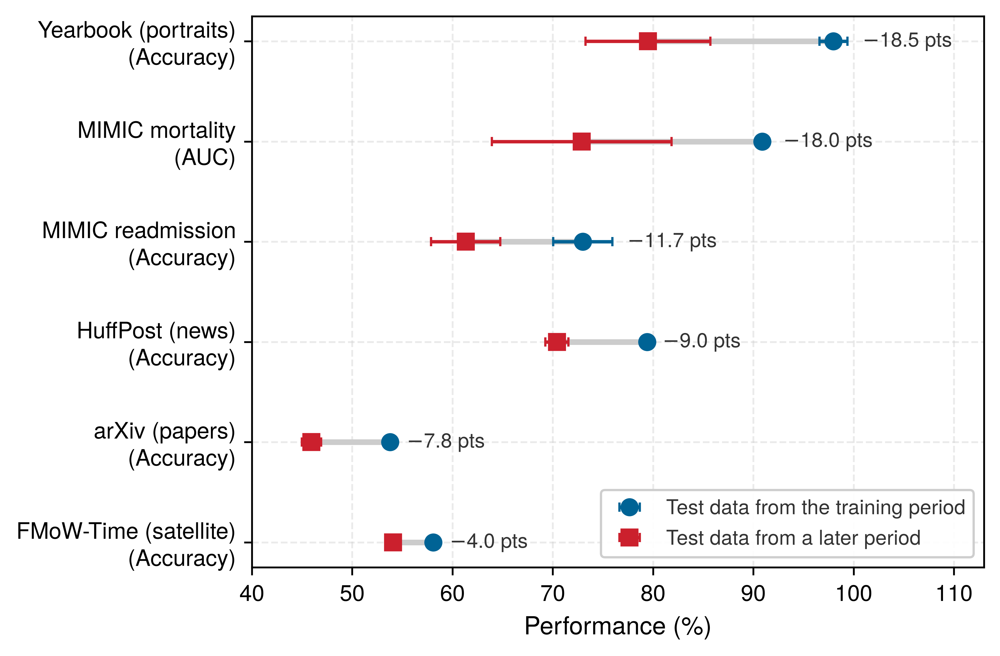
Содержание главы
Содержание
- 14 Эксплуатация систем машинного обучения
- 14.1 Тихий отказ в производстве
- 14.2 Технический долг
- 14.3 Инфраструктура разработки
- 14.4 Выпуск моделей
- 14.5 Мониторинг в промышленной эксплуатации
- 14.6 Решения о переобучении
- 14.7 Реагирование на инциденты и управление
- 14.8 Эксплуатационная зрелость
- 14.9 Кейс-стади
- 14.10 Заблуждения и подводные камни
- 14.11 Итоги
14 Эксплуатация систем машинного обучения
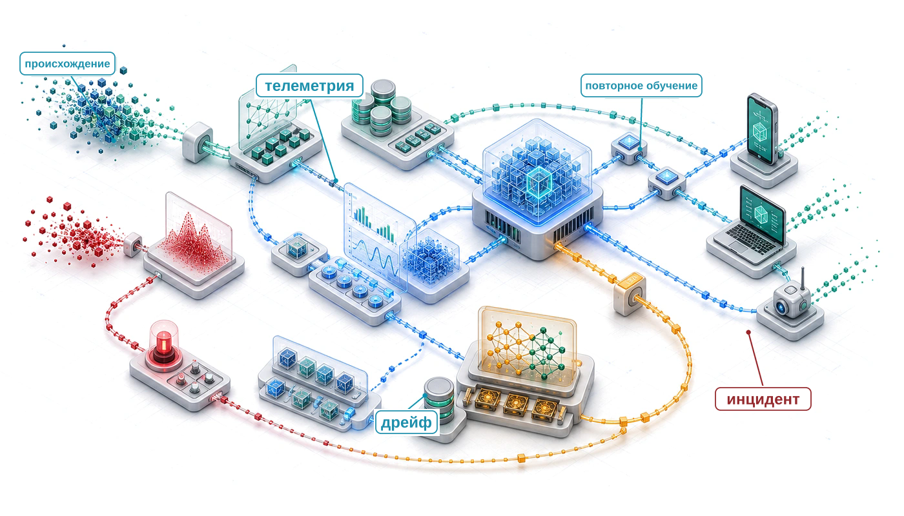
Назначение
Почему МЛ-система может быть идеально доступной и при этом идеально ошибаться?
Традиционный мониторинг нередко быстро обнаруживает сбои, регрессии задержки и отказы доступности, однако семантические ошибки могут оставаться незаметными в любой программной системе. МЛ-системы добавляют ещё один тихий режим отказа. Модель, испытывающая дрейф данных, может продолжать выдавать внешне обычные предсказания, пока её точность деградирует, не вызывая никаких оповещений, потому что все проверки работоспособности (задержка, пропускная способность, время безотказной работы) остаются зелёными. Модель обнаружения мошенничества может отвечать за миллисекунды месяцами после того, как выученные ею закономерности сместились в другое место, и первым сигналом тревоги могут стать сами убытки. Качество модели может деградировать из-за того, что мир меняется: поведение клиентов смещается, появляются новые товарные категории, эволюционируют сезонные закономерности, и распределение, на котором обучалась модель, расходится с тем, с которым она теперь сталкивается. Дрейф — не неизбежность, а постоянный риск для развёрнутых моделей. В отличие от задержки или времени безотказной работы, корректность может стать наблюдаемой лишь после поступления меток или исходов ниже по потоку, поэтому обнаружение деградации часто требует несовершенных сигналов и явного расследования, а не единственного порога. Управление ею требует непрерывного мониторинга, который отслеживает качество предсказаний наряду с работоспособностью системы, сигналов дрейфа, запускающих расследование, дообучения, когда данные об исходах это оправдывают, и стратегий развёртывания, проверяющих новые версии модели на производственном трафике перед полным развёртыванием. Разрыв между разработкой и производством — не однократно преодолённое препятствие, а состояние, которым управляют неограниченно долго — до тех пор, пока модель принимает решения, на которые кто-то полагается. Операции машинного обучения существуют потому, что время безотказной работы без измеренной точности может по-прежнему выдавать масштабно неверные ответы. В терминах D·A·M операции делают совместное проектирование непрерывным, поскольку среда данных может оставаться подвижной целью ещё долго после первоначального развёртывания.
Цели обучения
- Объяснить, почему МЛ-системы могут оставаться доступными, пока качество предсказаний незаметно деградирует при сдвиге распределения
- Диагностировать технический долг на границах интерфейсов: данные–модель, модель–инфраструктура, производство–мониторинг
- Спроектировать реестры моделей, тесты паритетности и конвейеры CI/CD, сохраняющие согласованность обучения и инференса и воспроизводимый откат
- Сравнить стратегии канареечного развёртывания, blue-green, теневого развёртывания и отката по тому, какой риск релиза они сдерживают и какой объём памяти ускорителей удерживают
- Спроектировать многоуровневый мониторинг и реагирование на инциденты операционного контура, позволяющие проследить дрейф, сдвиг (skew) и деградацию до причины: данных, модели или инфраструктуры
- Применить модель устаревания при дообучении, чтобы выбрать экономически обоснованные триггеры и интервалы дообучения
- Оценивать операционную зрелость и инвестиции с помощью критичности модели, операционного риска и готовности организации
14.1 Тихий отказ в производстве
Обслуживающий кластер может возвращать HTTP 200 на каждый запрос, оставаться в пределах бюджета хвостовой задержки и проходить все проверки работоспособности инфраструктуры, пока выдаваемые им рекомендации неделя за неделей теряют актуальность. Тихий отказ — это производственная модель, которая продолжает своевременно отвечать на каждый запрос, не вызывает ошибок и проходит все проверки работоспособности, при этом её ответы становятся всё хуже. Ей подвержена любая развёрнутая модель, потому что модель — это подгонка под данные, на которых она обучалась, а мир, который она обслуживает, продолжает меняться после завершения обучения. Обслуживание моделей построил путь запроса, доставляющий эти ответы: сервис, укладывающийся в бюджет задержки, имеющий запас на всплески нагрузки и превращающий пропускную способность в стоимость инференса. Бенчмарк фиксирует производительность в момент времени, а обслуживающая инфраструктура проверяет, что требуемая доля запросов укладывается в бюджет задержки. Ни одна из этих проверок не спрашивает, верны ли ответы по-прежнему. Операции — это этап жизненного цикла (03_ml_lifecycle), у которого нет финишной черты. Он сохраняет корректность модели до тех пор, пока кто-то полагается на её решения.
Команда разворачивает модель в производстве, и первая неделя выглядит отлично. На второй неделе поведение клиентов смещается, эволюционируют сезонные закономерности, появляются новые товарные категории, а у модели, успешно прошедшей разработку, зачастую нет владельца после развёртывания и мониторинга, который бы это заметил. Корень проблемы — операционное несоответствие. Мониторинг, ориентированный на доступность, отслеживает время безотказной работы серверов, задержку запросов и долю успешных запросов, тогда как МЛ-мониторинг должен отслеживать ещё и статистическое здоровье: точность во времени, сдвиг распределения входных данных и качество предсказаний по сегментам.
Деградация измерима. В бенчмарке Wild-Time Yao и др. (2022 г.) обучают модель на данных одного периода и тестируют её как на отложенных данных того же периода, так и на данных последующих лет — на шести реальных наборах данных, охватывающих портреты из годовых альбомов, спутниковые снимки, больничные записи, новости и научные статьи. Результат показан на Рисунок 1. На каждом наборе данных одна и та же модель набирает меньше баллов на более поздних данных — от 4 до 18.5 баллов точности или площади под кривой (AUC), — хотя в самой модели и в пути её обслуживания ничего не изменилось. Потеря целиком обусловлена тем, что мир отошёл от обучающих данных, и увидеть её способен лишь мониторинг, сравнивающий предсказания со свежими исходами.
Дисциплина, делающая эти невидимые отказы видимыми, — операции машинного обучения (MLOps). Она наследует линию автоматизации и эксплуатации DevOps (Kreuzberger и др. 2023 г.), но адресуется к иному режиму отказа. С обычными сервисами часто можно тестироваться по детерминированным путям кода, тогда как МЛ-системы зависят от распределений обучающих данных, выученных параметров и условий среды, непрерывно меняющихся. Поэтому распределения данных, выученные параметры, оценки по срезам (slices) и петли обратной связи в среде исполнения функционируют как релизные артефакты, определяющие поведение в производстве, а релиз простирается далеко за пределы исполняемого бинарника или диффа кода. Поскольку эти артефакты проходят между традиционно изолированными доменами (data science, машинная инженерия и системная эксплуатация (Amershi и др. 2019 г.)), MLOps также формализует интерфейсы и ответственности между ними — через непрерывное дообучение, A/B-оценку, поэтапное развёртывание и стандартизированный учёт артефактов, поддерживающий воспроизводимость и проверяемость.
Если бенчмаркинг даёт системе сенсоры, то MLOps — это полная система управления, а уравнение деградации (Уравнение (1)) называет величину, которой она управляет. Точность падает на подогнанную чувствительность
↩︎ Дрейф данных и статистика, его измеряющая, вводятся в Обнаружение дрейфа данных и реакция на него.
Определение 14.1: MLOps
Операции машинного обучения (MLOps) — это инженерная практика вывода МЛ-систем в производство с помощью CI/CD, оркестрации рабочих процессов, воспроизводимости, версионирования, коллаборации, непрерывного обучения и оценки, мониторинга и петель обратной связи (Kreuzberger и др. 2023 г.).
- Значимость: Если оставить контур разомкнутым, это проявится в устаревших предсказаниях, незаметной деградации точности и затянутом восстановлении. Пороги дрейфа, триггеры дообучения и целевые значения среднего времени восстановления (MTTR) зависят от конкретного развёртывания и калибруются по ценности предсказаний, задержке меток, риску валидации и стоимости вычислений дообучения. Запуск дообучения оправдан только тогда, когда ожидаемый прирост точности перевешивает стоимость его выполнения и риск развёртывания.
- Отличие: DevOps отслеживает функциональную корректность, пропускную способность и доступность. MLOps добавляет статистические средства контроля предсказательной корректности, которая может деградировать, пока время безотказной работы, задержка и коды состояния HTTP остаются здоровыми.
- Типичная ошибка: Частое заблуждение состоит в том, что дообучение на новых данных автоматически устраняет сдвиг распределения. Дообучение без диагностики того, что именно сместилось (входные данные, получаемые моделью, связь между этими входами и правильными ответами или и то и другое), сохраняет исходный отказ или усиливает смещение при сборе. Перевзвешивание обучающих данных может скорректировать изменение состава входов, но лишь новые данные об исходах покажут, требует ли изменившаяся связь вход–выход адаптации; Глава 14.5.2 формально разделяет эти два случая.
Операционный контур MLOps имеет три стадии (проектирование, разработка модели и операции), но его определяющая особенность — обратный путь. Телеметрия среды исполнения и триггеры дообучения несут живые сигналы производительности из операций обратно в требования и инженерию данных, так что развёртывание питает следующий цикл проектирования вместо того, чтобы завершать проект (Рисунок 2).
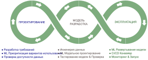
Цикл MLOps охватывает всю жизнь модели — от требований до редизайна. Внутри своего этапа эксплуатации (operations) вторая и гораздо более быстрая итерация из пяти шагов выполняется для каждой модели в продакшене, пока она обслуживает трафик. Этот цикл — контур эксплуатации. Он обнаруживает изменение во входах, выходах или результатах; диагностирует, какой слой системы его вызвал; решает, стоит ли дообучение, откат или ожидание своих затрат; выпускает замену под контролируемым экспонированием; и возвращается к заведомо исправной версии, когда релиз ведёт себя плохо. Каждый шаг — это элемент контроля, который команда должна построить и оплачивать, и каждый потребляет конкретный машинный ресурс: байты телеметрии для обнаружения, залогированные запросы для диагностики, часы ускорителей для запуска дообучения и вторую резидентную копию модели для безопасного релиза. Шаг «решить» тратит эти часы ускорителей, одобряя запуск, а шаг «восстановить» использует ту же резидентную копию, поскольку откат мгновенен лишь пока предыдущая версия остаётся загруженной.
Контур эксплуатации работает на базовой операционной единице — ML-узле, полной системе, включающей конвейеры данных, вычисление признаков, обучение модели, инфраструктуру обслуживания и мониторинг для одного приложения машинного обучения. Операции платформы в большем масштабе (управление сотнями моделей, межмодельные зависимости, координация между регионами и платформенная инженерия ML на уровне организации) составляют продвинутые темы, которые строятся на этих основах одиночной модели.
Поддержание корректности одного ML-узла раскладывается на три интерфейса, которые следуют за артефактом от загрузки данных до живого трафика и обратно. В начале конвейера интерфейс «данные — модель» управляет передачей между инфраструктурой данных и обучением модели, где цель — согласованность признаков, чтобы конвейеры обучения и обслуживания вычисляли признаки одинаково. Когда контрольная точка обучена, интерфейс «модель — инфраструктура» переносит веса в масштабируемый сервис. Его вызов — паритет окружений, поскольку модель, работающая в ноутбуке, может отказать в продакшене, когда версии, зависимости или среды исполнения различаются. Замыкая контур, интерфейс «продакшен — мониторинг» возвращает статистическую телеметрию1 из живого обслуживания обратно в обучение, обеспечивая самокоррекцию, когда сдвиг распределения снижает точность, не приводя сервис к краху.
Эти три интерфейса определяют, как операционная инфраструктура распределяет ответственность по жизненному циклу. Хранилища признаков стабилизируют вычисление признаков на границе «данные — модель», а реестры моделей (версионируемые хранилища обученных моделей) и конвейеры развёртывания сохраняют передачу «модель — инфраструктура». Мониторы дрейфа, триггеры дообучения и политики управления (governance) соединяют производственные свидетельства с контролируемым откликом, сокращая окно, в котором деградация остаётся незамеченной.
Главу несут два из маячных рабочих нагрузок книги (Маяковые модели вводят «железный закон» в практику), по одной на каждый конец спектра развёртывания. Облачная половина следует за сервисом ранжирования на основе DLRM — рекомендательной модели, которую Обслуживание моделей противопоставил сервису ResNet-50, ограниченному вычислениями. Доменный режим DLRM — ограничение по ёмкости. Его 100 GB таблиц эмбеддингов превышают 80 GB одного H100, так что даже самое маленькое развёртывание занимает два ускорителя, прежде чем пропускная способность вообще войдёт в расчёт. Каждый элемент контроля, которому нужна вторая копия модели, оплачивает её памятью. Ранжирующая модель — также рабочая нагрузка с самым быстрым меняющимся миром: интересы пользователей и каталог товаров меняются ежедневно, метки кликов приходят в течение часов, а собственные ранги модели формируют клики, на которых она потом обучается.
Половина периферии следует за детектором ключевых слов, чей доменный режим — ограничение по мощности. Его INT8-модель объёмом 200 KB непрерывно слушает на микроконтроллере с флеш-памятью 4 MB, где каждая радиопередача и запись во флеш расходуют малый энергетический бюджет. Операционное здоровье данных оставил этот детектор через шесть месяцев после запуска с уровнем обнаружения на четыре процентных пункта ниже цели, и периферийные разделы этой главы разбирают это падение. До устройства нельзя добраться вручную, его аудио не может его покинуть, а неудачное обновление не должно его отключать.
Задача второй недели приобретает конкретную форму на сервисе ранжирования в иллюстративном сценарии. Начальные измерения показывают точность предсказания кликов 94 percent, задержку p99 внутри бюджета сервиса и сильные результаты по всем тестовым сегментам. К четвёртой неделе точность падает до 88 percent, но инфраструктурные метрики не показывают ничего ненормального. К восьмой неделе продуктовый менеджер замечает, что рекомендованные товары плохо конвертируются; расследование выясняет, что модель не адаптировалась к новой промоакции конкурента, сместившей клики пользователей. Модели требовалось расследование шесть недель назад, но никакая система не наблюдала за этой деградацией. MLOps даёт каркас, чтобы обнаруживать такие изменения, оценивать, решает ли их дообучение, и валидировать модели-замены, ограничивая влияние на пользователей.
Глава строит контур эксплуатации в порядке, нужном команде (Таблица 1). Технический долг объясняет, почему ML-системы накапливают скрытую связанность, делающую тихий отказ вероятным. Инфраструктура разработки строит конвейер, способный точно пересобрать и отследить любую модель, а релиз моделей выводит кандидата на живой трафик с проверенным путём назад. Производственный мониторинг затем наблюдает за развёрнутой моделью, собирая свидетельства, на которых работает контур, а решения о дообучении превращают эти свидетельства в выбор: дообучать, откатывать или ждать. Реагирование на инциденты и governance разбирают сбои, которые вскрывает мониторинг, операционная зрелость решает, какой элемент контроля добавить следующим, а два кейс-стади несут контур на периферию и в клинику.
| Раздел | Шаг контура | Какой вопрос отвечает | Машинная цена на сервисе ранжирования |
|---|---|---|---|
| Технический долг | Почему контур существует | Где накапливается скрытая связанность | Клеевой код и неиспользуемые признаки, которые всё ещё двигают байты |
| Инфраструктура разработки | Релиз (подготовка) | Как модель точно пересобирается и отслеживается | Версионированные копии данных, признаков и 100 GB таблиц |
| Релиз моделей | Релиз, восстановление | Как кандидат попадает на трафик и как он отзывается | Вторая резидентная копия таблиц для каждого элемента контроля релиза |
| Производственный мониторинг | Обнаружение | Верны ли ещё предсказания | Байты телеметрии в секунду и их хранение |
| Решения о дообучении | Решение | Стоит ли новая модель своего запуска | Часы ускорителей, конкурирующие с обслуживанием |
| Реагирование на инциденты и governance | Диагностика, восстановление | Какой слой отказал и кто действует | Запросы на воспроизведение и срезовые запросы по залогированным запросам |
| Операционная зрелость | Все шаги | Какой элемент контроля добавить следующим | Операционные расходы, согласованные с ценностью модели |
| Кейс-стади | Все шаги | Как контур меняется на периферии и в клинике | Флеш-банки, энергия радио и время обзора врача |
Работа этого пути обратной связи требует добавления статистических элементов контроля в практики релизов и надёжности DevOps. Технический долг накапливается везде, где эродирует одна из трёх границ интерфейсов. Хранилища признаков, версионирование и конвейеры CI/CD восстанавливают воспроизводимость, нужную для локализации сбоя на этих границах, а мониторинг, обнаружение дрейфа и поэтапное развёртывание (staged rollout) защищают предсказательное качество, когда входы начинают смещаться. Небольшой набор основополагающих принципов решает, какие из этих элементов контроля нужны данной модели и когда каждый должен действовать.
14.1.1 Пять операционных принципов
Без чётких правил эксплуатации команда не может определить, произошла ли потеря точности из-за незаписанного изменения данных, рассогласованного признака обслуживания или просроченного запуска дообучения. Пять операционных принципов предотвращают эти слепые зоны, привязывая каждую границу ML-узла к измеримой величине — от полного хеша артефакта для воспроизводимости до чистой ценности дообучения для автоматизации (Таблица 2). Следующие разделы строят элементы контроля, которые их обеспечивают.
| Принцип | Ключевая идея | Ключевая метрика |
|---|---|---|
| Воспроизводимость | Версионировать все артефакты | Полный хеш артефакта |
| Разделение ответственности | Независимая эволюция слоёв | Слои, затронутые изменением |
| Согласованность | Обучение равно обслуживанию | Уровень рассогласования признаков (skew) |
| Наблюдаемая деградация | Делать отказы видимыми | Время до обнаружения |
| Автоматизация с учётом стоимости | Оптимизировать полную стоимость | Чистая ценность дообучения |
Воспроизводимость
Воспроизводимость требует, чтобы каждый артефакт2, влияющий на поведение модели, был версионирован и отслеживаем. Этот принцип выходит за рамки репозиториев кода и охватывает входные наборы данных, схемы признаков, конфигурации гиперпараметров и среды исполнения. Уравнение 1 выражает эту зависимость формально:
Фиксация случайных зёрен (например, torch.manual_seed(42)) всё же не гарантирует побитовой воспроизводимости между запусками обучения на аппаратуре ускорителей. Корень причины — арифметика конечной точности. В точной арифметике сложение ассоциативно, так что
↩︎ Форматы чисел с плавающей запятой, их динамические диапазоны и то, где в обучении накапливается ошибка округления, рассматриваются в Обучение в смешанной точности.
Разделение ответственности
Разделение ответственности разбивает MLOps-системы на отдельные функциональные слои, которые могут эволюционировать независимо. Поскольку схемы данных, алгоритмы обучения, шаблоны трафика и бизнес-правила меняются по разным графикам, изоляция каждого слоя позволяет команде обновлять один слой, не перестраивая остальные, как резюмирует Таблица 3:
| Слой | Ответственность | Стабильность |
|---|---|---|
| Слой данных | Вычисление признаков, хранение, обслуживание | Меняется вместе с эволюцией схемы данных |
| Слой обучения | Разработка моделей, оптимизация гиперпараметров | Меняется вместе с исследованиями алгоритмов |
| Слой обслуживания | Инференс, масштабирование, управление задержкой | Меняется вместе с шаблонами трафика |
| Слой мониторинга | Обнаружение дрейфа, отслеживание производительности | Меняется вместе с бизнес-требованиями |
Императив согласованности
Архитектурные границы в Таблица 3 позволяют командам обновлять среды обслуживания без переобучения моделей, корректировать пороги оповещений без повторного развёртывания и изменять конвейеры приёма данных, сохраняя интерфейсные контракты. Эта архитектурная независимость остаётся безопасной лишь тогда, когда среды обучения и обслуживания обрабатывают признаки идентично, что устанавливает паритет обучения и обслуживания как императив согласованности из Согласованность обучения и обслуживания. Нарушение этого паритета — перекос обучения и обслуживания. Диагностика перекоса обучения и обслуживания (принцип «Диагностика перекоса обучения-обслуживания») обнаруживает его, не дожидаясь меток, сравнивая, что вычисляют пути кода обучения и обслуживания — от признаков до оценок модели, — на одних и тех же входных данных. Финансовое следствие этого расхождения отражено в Уравнение 2:
Для системы, обслуживающей 1,000,000 queries/day с вызываемыми перекосом ошибками в 1 percent случаев ценой $0.10 каждая, Уравнение 2 даёт дневной убыток, а за 365 дней года этот убыток достигает $365,000. Убыток повторяется каждый год, пока механизмы согласованности не устранят его причину. Общие хранилища признаков, единые библиотеки извлечения признаков на C++ или Rust, вызываемые одинаково при офлайн-обучении и онлайн-обслуживании, и автоматизированные тесты валидации схемы обеспечивают согласованность на системной границе; тесты на совпадающих входных данных по-прежнему должны проверять значения и семантику признаков.
Наблюдаемая деградация
Наблюдаемая деградация требует, чтобы системы машинного обучения делали скрытые отказы видимыми посредством непрерывных измерений. Точность модели деградирует вдоль непрерывного статистического спектра, а не отказывает дискретным бинарным сбоем. Временной профиль наблюдаемого отказа (резкое падение, постепенный дрейф или локализованный распад когорты) определяет и механизм обнаружения, и операционную реакцию. Четырёхнедельное снижение рейтингового сервиса с 94 до 88 percent было постепенным профилем — именно тот вид, который улавливает анализ трендов точности и которого не увидит ни одно оповещение о доступности или задержке. Сделать деградацию наблюдаемой, следовательно, означает сопоставить каждому профилю отказа ту телеметрию, которая его видит, и ту контрмеру, которую он требует, как намечено в Таблица 4.
| Тип деградации | Механизм обнаружения | Стратегия реакции |
|---|---|---|
| Резкое падение точности | Оповещения по порогам | Диагностика; откат, если связано с релизом |
| Постепенный дрейф | Анализ трендов | Диагностика, затем дообучение при целесообразности |
| Деградация подгруппы | Мониторинг когорт | Целевой сбор данных |
| Рост задержки | Отслеживание перцентилей | Масштабирование инфраструктуры |
Автоматизация с учётом затрат
Автоматизация с учётом затрат балансирует вычислительные затраты и прирост точности. Пусть
Неравенство выступает операционным критерием принятия решения, а не ничем не ограниченным триггером. Автоматизированный конвейер должен инициировать дообучение только тогда, когда эмпирические данные указывают, что ожидаемый прирост точности превосходит стоимость исполнения и риск выката. Этот экономический компромисс управляет триггерами дообучения, порогами валидации и критериями выката; Глава 14.6 формализует эту модель для расчёта оптимальных ритмов дообучения. Разница, на которую левая часть Уравнение 3 превышает правую, — это чистая ценность дообучения, величина, которую должен проверять триггер дообучения.
Как эти принципы проявляются на практике, зависит от рабочей нагрузки. Рейтинговый сервис дрейфует ежедневно по мере изменения пользовательских предпочтений, тогда как детектор ключевых слов может работать без изменений месяцами между обновлениями по воздуху (OTA), которые доставляются на устройства по радио. Стратегия мониторинга должна соответствовать режиму рабочей нагрузки и, что решительнее, меткам, которые может наблюдать её развёртывание.
Опорный пример 14.1: Стратегия мониторинга по архетипам
Доминирующие режимы отказа и приоритеты мониторинга различаются между архетипами рабочих нагрузок. Таблица 5 сравнивает четыре репрезентативных архетипа по шаблону дрейфа, метрике мониторинга и примеру триггера дообучения:
| Архетип | Доминирующий шаблон дрейфа | Основная метрика мониторинга | Пример триггера дообучения |
|---|---|---|---|
| Ограничен вычислениями (ResNet-50) | Сдвиг визуального распределения (освещение, камера, новые классы объектов) | Точность на отложенной выборке (есть эталонные метки) | Точность падает > 2% от базовой линии ( |
| Ограничен пропускной способностью (GPT-2) | Дрейф словаря, смена тем, новые сущности | Перплексия на живом трафике (эталонные метки не нужны) | Перплексия растёт > 10%; обнаружен новый словарь ( |
| Ограничен ёмкостью (DLRM) | Сдвиг пользовательского поведения, оборот каталога товаров, холодный старт | Дельта CTR/CVR против исторических когорт | Вовлечённость падает > 5%; обновление каталога ( |
| Ограничен энергопотреблением (KWS DS-CNN) | Изменение акустической среды (сдвиг уровня шума) | Скважность (пробуждений/час) + доля ложных срабатываний | Доля ложных пробуждений > 1%; расход батареи превышает спецификацию ( |
Системный инсайт: Доступность эталонных меток определяет дизайн мониторинга. Ограничивающий режим рабочей нагрузки задаёт её стоимость и ёмкость, но не определяет, какой сигнал качества наблюдаем. Зрительные задачи с метками (ResNet-50) отслеживают точность на отложенной выборке. Языковые и рекомендательные сервисы (GPT-2, DLRM) полагаются на сигналы, не требующие разметки. Перплексия измеряет, насколько плохо модель предсказывает каждое следующее слово живого текста, а сам текст поставляет эти слова. Показатель кликабельности (CTR) и конверсии (CVR) считают долю показанных позиций, которые пользователи кликают или покупают. Модели микроконтроллеров без меток (DS-CNN детектора ключевых слов) мониторят скважность, тогда как оценка доли ложных пробуждений требует эталонного сигнала или проверенных примеров. Ритм дообучения ограничен задержкой меток, доступом к развёртыванию, стоимостью валидации и скоростью наблюдаемых изменений.
↩︎ Перплексия как стандартная мера качества языковых моделей установлена в Бенчмарки больших языковых моделей.
Эти принципы отвечают на три повторяющихся операционных отказа: концептуальный дрейф3 (изменение того, как входные данные соотносятся с их корректными выходами), дефекты качества данных (Schelter и др. 2018 г.) и скрытую постразвёртывательную деградацию. Их устранение меняет то, что версионирует и мониторит команда, и кто должен координироваться. Версионирование данных,4 версионирование моделей и непрерывный статистический мониторинг выходят за рамки традиционной программной инженерии. Рассмотрение наборов данных и состояния конвейера как полноценных версионируемых артефактов наряду с исходным кодом превращает развёртывание из линейного релизного конвейера в непрерывный, основанный на доказательствах контур обратной связи.
Контрольная точка 14.1: Цикл MLOps
Цикл MLOps возвращает производственные доказательства обратно в дизайн.
Цикл обратной связи
Артефакты
Каждая итерация операционного цикла привносит зависимости данных, взаимодействия моделей и состояние конфигурации, невидимые для традиционной компиляции и тестирования. Без управления эти скрытые зависимости накапливаются в системный технический долг, который замедляет релизы и снижает предсказательную точность. Понимание архитектурных паттернов этого долга — предпосылка для проектирования инфраструктуры, которая его погасит.
14.2 Технический долг
В традиционных программных системах технический долг5 означает будущую переделку, возникающую тогда, когда быстрые, но недальновидные решения заменяют дисциплинированную архитектуру (Cunningham 1992 г.). В системах машинного обучения этот долг нарастает по всему операционному контуру за счёт статистической связанности и зависимостей от данных, которые не выявляют ни ревью кода, ни модульные тесты (Sculley и др. 2015 г.). Команда, выкатывающая модель путём копирования скриптов признаков, пропуска проверок схемы и прямого встраивания предсказаний в нижележащие сервисы, быстро добирается до продакшена — и затем год тратит на отладку тихих регрессий, когда внешние распределения сдвигаются, а устаревшие параметры ломают потребителей ниже по потоку. Измерение и погашение этого долга, формализуемое рубрикой ML Test Score (Breck и др. 2017 г.) в Глава 14.8.1, начинается с выявления повторяющихся структурных механизмов его накопления.
Определение 14.2: Технический долг в ML
Технический долг в машинном обучении — это накапливающиеся затраты на сопровождение и изменения, порождаемые неявными зависимостями от данных, переплетёнными признаками и необъявленными потребителями в МЛ-системах, причём возникающие обязательства могут проявляться и как незаметная деградация точности.
- Значимость: согласно анализу продакшен-систем ML в Google, код модели — лишь малая часть окружающей системы; более крупная операционная поверхность включает сбор данных, извлечение признаков, конфигурацию, инфраструктуру обслуживания, мониторинг и управление процессами (Sculley и др. 2015 г.). Это усугубляют специфичные для ML драйверы долга. Изменение одного входного признака может незаметно сдвинуть выученное представление всех остальных признаков (переплетённость). Модель, обученная исправлять ошибки другой модели, создаёт хрупкую цепочку зависимостей (каскады исправлений). Нижележащие системы, потребляющие выходы модели без явных контрактов, становятся необъявленными потребителями и молча ломаются при обновлении модели.
- Отличие: технический долг в ML включает зависимости уровня системы и данных, которые ревью кода и обычные тесты, сфокусированные на коде, могут пропустить. Он способен замедлять разработку и ухудшать качество предсказаний даже при здоровых метриках доступности.
- Типичная ошибка: распространено заблуждение, что «более хороший код» решает проблему технического долга в ML. На деле это задача системной архитектуры: долг накапливается тогда, когда предположения обучающего распределения (диапазоны признаков, смысл меток, свежесть данных) не закреплены как контракты среды исполнения на границе системы.
Расчёт точки безубыточности делает динамику затрат технического долга осязаемой. Команды часто сопротивляются вложениям в автоматизацию, потому что ручные процессы на ранних этапах разработки кажутся быстрее, но это преимущество исчезает, как только регулярные ручные вмешательства перевешивают разовую стоимость автоматизации.
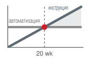
Накопленный ручной труд превышает разовое вложение в автоматизацию около 20-й недели.
Инженерный расчёт 14.1: Совокупная стоимость ручных операций
Задача: Зачем строить автоматизированные конвейеры, если ручное переобучение быстрее?
Physics: Ручной труд накапливается со временем.
- Ручное переобучение: 4 hours инженерной работы в неделю.
- Построение конвейера: 80 инженерных часов (разово).
Расчёт:
- Результат: 80 инженерных часов
4 hours в неделю = 20 weeks. - Допущение: В этом упрощённом расчёте сопровождение конвейера принято равным нулю, поэтому автоматизация полностью устраняет еженедельную задачу.
- Upkeep: Реальным конвейерам нужны поддержка и новые функции. Тогда каждая неделя окупает лишь разницу между ручной нагрузкой и затратами на сопровождение, что отодвигает точку безубыточности. Автоматизация всё равно окупается, пока её еженедельное сопровождение ниже заменяемого ручного труда.
- Consequence: Через 1 year команды с ручным процессом по-прежнему тратят 4 hours в неделю на сопровождение, тогда как команды с конвейером несут только затраты на его поддержку (0 регулярных часов при допущении этого расчёта).
Контекст: За время жизни системы затраты на её сопровождение могут превысить затраты на её создание. В ML технический долг часто обусловлен данными, а не кодом, потому что корректный код всё равно может дать сбой, когда сдвигаются обрабатываемые данные. Без телеметрии команда не может понять, сокращает ли работа по сопровождению долг или лишь прячет его.
Системный вывод: Команда, переобучающая модели вручную, в итоге остаётся без времени на выпуск новых моделей — при условии, что затраты на сопровождение автоматизации ниже снимаемой ручной нагрузки. Без мониторинга, делающего скрытые отказы видимыми, команда также накапливает долг в системе, управлять которой становится всё труднее.
Долг больше, чем один ручной переобучающий процесс, потому что код моделирования составляет лишь малую долю реального развёртывания. Основной код моделирования — один компонент из десяти вокруг МЛ-системы, наряду с девятью вспомогательными подсистемами, охватывающими проверку данных, извлечение признаков, конфигурацию и управление машинными ресурсами (Рисунок 3). Их присутствие расширяет поверхность сопровождения; диаграмма не измеряет стоимость каждого компонента.
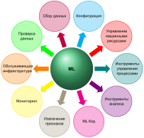
Хотя автоматизация снимает регулярные операционные накладные расходы ручного переобучения, она не способна предотвратить архитектурную деградацию. Развёрнутые системы накапливают скрытую сложность через системные режимы отказов, порождаемые статистической связанностью, а не детерминированной логикой. Паттерны группируются по месту, где прячется связанность: в размытых границах и порождаемых ими каскадах исправлений, в зависимостях на интерфейсах, которые не объявляет ни один import, в накапливающейся по мере эволюции системы обратной связи и конфигурации, а также в коде и архитектуре вокруг модели.
14.2.1 Размывание границ
Статистическое ПО теряет модульные границы легче, чем обычное, потому что поведение компонентов зависит от распределения входных данных, а не только от сигнатур типов. В обычном ПО модульная инкапсуляция и типизированные API делают зависимости явными, хотя изменения всё же могут нарушать поведенческие контракты. В системах машинного обучения, когда верхний конвейер меняет способ заполнения пропущенных возрастов или пересчитывает масштаб колонки цен, все синтаксические проверки и модульные тесты в репозитории могут пройти, в то время как сдвинувшееся распределение признака незаметно ухудшает точность нижележащей модели. Эта неявная связанность через конвейеры данных создаёт никем не отслеживаемые зависимости между инженерией признаков, обучающими конвейерами и конечными точками инференса.
Эта эрозия порождает переплетённость, при которой зависимости между признаками и компонентами переплетаются настолько, что локальные изменения требуют глобальной координации. Возникающий режим отказа отражает принцип CACE: Change Anything Changes Everything — измени что угодно, и изменится всё. Когда у систем нет строгих статистических проверок на границах, корректировка кодирования признака или порога фильтрации данных может при переобучении сдвинуть выученные веса по всей модели. При замороженных весах то же изменение не трогает выученные параметры, но меняет входы, которые видит модель, и потенциально её предсказания. Например, изменение стратегии разбиения непрерывного признака на бины сдвигает его дисперсию и ковариационную структуру, из-за чего ранее откалиброванная модель начинает работать хуже и приходится перекалибровывать зависимые сервисы.
Защита от эрозии границ требует архитектурной модульности, закреплённой в среде исполнения. Компонентам нужны явные контракты данных, задающие статистические инварианты: допустимые диапазоны признаков, допуски на пропуски и пороги дрейфа. Разделение загрузки данных, генерации признаков и логики инференса создаёт границы проверки, на которых распределения данных можно валидировать до того, как они достигнут весов модели. Поскольку эрозия границ молчит на этапе прототипирования, контракты схемы и проверки инвариантов — самая ранняя точка, где статистическую связанность можно обнаружить и взять под контроль.
14.2.2 Каскады исправлений
Когда эрозия границ не устраняется, инженерные исправления часто запускают каскад исправлений: латание конкретного дефекта модели вспомогательным пост-фильтром вносит вторичные ошибки в других местах, требующие дальнейших заплаток, дестабилизирующих весь конвейер. В МЛ-системах такие каскады особенно тяжелы, потому что изменения распространяются через статистические зависимости, а не детерминированные ветвления кода. Переобучение модели для исправления конкретного кластера ложных срабатываний может ухудшить точность на ранее стабильных когортах. Добавление вспомогательной модели для переопределения предсказаний на граничных случаях вносит некалиброванные оценки, сбивающие с толку потребителей ниже по потоку. Повторяющиеся зависимые заплатки могут требовать согласованной ревалидации, и затраты на сопровождение могут превысить затраты на переработку базовой модели.
Рисунок 4 прослеживает это распространение отказов по четырёхзвенной цепочке зависимостей (модели A–D), где каждый нижележащий компонент компенсирует остаточные ошибки предшественника. Когда верхняя заплатка меняет модель A, пунктирные красные дуги отмечают все нижележащие исправления, требующие ревалидации и, возможно, переобучения.
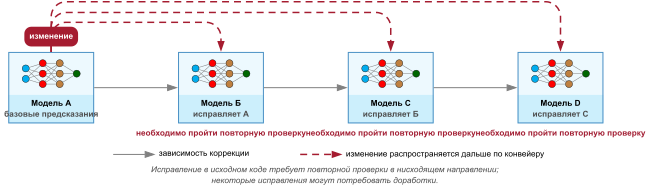
Отправной точкой такой цепочки часто служит повторное использование модели. Каскад требует зависимых моделей-исправлений, поэтому дообучение или переиспользование устоявшейся модели само по себе его не создаёт. Однако переиспользование наследует представления и предположения исходной задачи, и их нужно проверять на новой задаче. Там, где они ей плохо соответствуют, есть риск, что ошибки будут лататься ниже по потоку вместо исправления в базовой модели. Со временем эти унаследованные свойства превращаются в жёсткие архитектурные ограничения, усложняющие будущие обновления.
Например, дообучение существующей модели оттока клиентов под новую продуктовую линию наследует кодировки признаков и пороги калибровки базовой модели. Если у нового продукта иные паттерны вовлечённости пользователей, латание ошибок предсказаний вспомогательными правилами пост-обработки создаёт хрупкий многоступенчатый конвейер. Когда точность падает, инженерные команды обнаруживают, что корень отказа лежит на несколько слоёв выше — в исходных соглашениях о разметке базовой модели, например в том, что её обучающие данные считали ушедшим клиентом.
Смягчение каскадов исправлений требует баланса между повторным использованием компонентов и переработкой. Пока дообучение снижает начальные затраты на вычисления и сбор данных, обучение новой базовой модели может снять зависимости от цепочки вспомогательных исправлений, хотя предположения о данных и разметке всё равно требуют проверки. Архитектурное решение зависит от схожести задач, выравнивания ковариат (насколько близко входы новой задачи совпадают с теми, на которых училась базовая модель) и регулярной стоимости сопровождения цепочки моделей. Там, где зависимые модели неизбежны, систему нужно развязывать через артефакты моделей с фиксированными версиями и замороженные промежуточные представления.
14.2.3 Необъявленные потребители и зависимости от данных
И эрозия границ, и каскады исправлений проистекают из зависимостей на уровне интерфейсов, которые обходят формальные программные контракты. В традиционном программном обеспечении зависимости объявляются через инструкции импорта, пакетные менеджеры и RPC-схемы, что позволяет статическим анализаторам строить графы зависимостей. В системах машинного обучения, напротив, когда Модель A записывает свои предсказания в общую таблицу хранилища, а Модель B позднее читает этот столбец как признак для обучения, графы импорта ни одного из репозиториев не фиксируют эту связь, потому что зависимость спрятана внутри общего потока данных.
Скрытая связность часто проявляется в виде необъявленных потребителей — сервисов, которые используют предсказания модели без формальной регистрации или соглашений об уровне обслуживания. Когда вышестоящая модель переобучается или её выходное распределение сдвигается, эти неучтённые потребители выходят из строя незаметно. Например, автоматизированная маркетинговая система, которая читает кредитный рейтинг и выбирает всех заявителей ниже фиксированного порога, продолжает применять тот же порог после того, как переобученная модель пересчитала шкалу рейтингов, — ведь никто не сообщил её владельцам, что то же число теперь означает иной уровень риска. Тот же потребитель может замкнуть петлю: изменяя состав пулов заявителей, он возвращает смещённые распределения обратно в будущие запуски обучения, так что модель всё больше обучается на тех заявителях, которых её собственные рейтинги выдвинули вперёд. Такие петли обратной связи образуют ещё один вид скрытого долга.
Необъявленных потребителей усугубляет долг зависимостей от данных, который накапливается, когда ML-конвейеры поглощают неверсионированные таблицы, нестабильные вышестоящие признаки или сигналы с изменчивыми распределениями. Устранить этот долг интерфейсов требует инфраструктурно закреплённых границ: строгой аутентификации и регистрации конечных точек предсказаний моделей, машиночитаемых контрактных схем для хранилищ признаков и автоматизированного отслеживания происхождения данных, регистрирующего потребителей до предоставления им доступа на чтение.
14.2.4 Петли обратной связи и разрастание конфигураций
По мере эволюции ML-системы — даже при документированных интерфейсах — самой опасной динамикой становится петля обратной связи, в которой развёрнутая модель формирует распределение данных, обучающее её преемников. В сервисе ранжирования предложенный контент определяет поведение пользователей, клики порождают последующие обучающие выборки, а модель подкрепляет собственные исторические выборки, лишая невыбранный контент показов. В эксплуатации этот режим отказа часто проявляется как растущий разрыв качества между демографическими когортами. Недостаточно представленные группы получают худшие рекомендации, которые порождают скудные журналы вовлечённости, ещё больше ослабляющие представленность когорты в последующих циклах переобучения. Ответственная инженерия возвращается к этой самоусиливающейся петле в модели смещения через обратную связь (принцип «Модель обратной связи по смещению»). Обнаружение петель обратной связи требует когортно-стратифицированного мониторинга, который отслеживает распределения ошибок по сегментам пользователей, а не опирается на агрегированные валидационные метрики.
↪ Разобранный пример, который укладывается в фактор смещения через обратную связь по результатам двух аудитов и трактует справедливость как свойство устойчивости цикла переобучения, развит в Эксплуатация: справедливость как устойчивость контура.
Эволюция также деградирует рабочие процессы вокруг модели. За повторяющиеся циклы развёртывания в них накапливается долг конвейеров и конфигураций, разрастающийся в громоздкие коллекции кустарных склеивающих скриптов и расходящихся файлов гиперпараметров. Когда у конвейеров нет модульных интерфейсов, команды копируют существующие скрипты вместо того, чтобы рефакторить хрупкие загрузчики данных, порождая избыточные конвейеры, обрабатывающие одни и те же сырые данные с малозаметными расхождениями. Вдобавок к этому быстрое прототипирование часто встраивает бизнес-логику непосредственно в скрипты подготовки признаков. Контроль эволюции конвейеров требует оркестраторов рабочих процессов с неизменяемыми определениями направленного ациклического графа (DAG), строгой валидации параметров и версионирования конфигураций под тем же контролем исходного кода, что и код моделей.
14.2.5 Долг кода и архитектуры
Производственные ML-репозитории редко бывают заполнены определениями моделей; вместо этого они заполняются склеивающим кодом — обёртками интеграции, написанными для перемещения тензоров и записей между универсальными ML-фреймворками, конвейерами признаков и движками обслуживания с низкой задержкой (Sculley и др. 2015 г.). Авторы Sculley и др. (2015 г.) отмечают, что зрелая система может в итоге содержать не более 5 процентов кода машинного обучения и не менее 95 процентов склеивающего кода. Пропорция варьируется от системы к системе, но эта асимметрия объясняет, почему поверхность сопровождения доминирует интеграционный код, а не модель. Возникающая плотная связность с API конкретных фреймворков — бремя сопровождения: незначительные обновления вышестоящего фреймворка вынуждают обширно переписывать окружающий интеграционный каркас. Изоляция сторонних библиотек за стабильными внутренними интерфейсами не даёт внешней нестабильности API распространяться по всему стеку обслуживания.
Быстрое экспериментирование дополнительно перегружает кодовую базу мёртвыми экспериментальными путями выполнения. Исследовательские итерации оставляют после себя устаревшие ветки, альтернативные преобразования признаков и заброшенную логику скоринга. В отличие от традиционного мёртвого кода, который помечают статические анализаторы и вычищают компиляторы, экспериментальные ML-пути часто остаются исполняемыми в рантайме, потому что они охраняются динамическими флагами конфигурации. Эти дремлющие ветки расширяют матрицу тестирования, усложняют проверку на регрессии и затуманивают точный граф выполнения, работающий в эксплуатации. Внедрение графиков устаревания и вычистка выведенных флагов признаков не позволяют экспериментальному остатку дестабилизировать среду исполнения обслуживания. Тот же остаток накапливается и в данных, а не только в коде: выведенный из употребления признак может продолжать течь по конвейеру долгое время после того, как все забыли, зачем он существует.
Системный взгляд 14.1: Признаки-зомби
Долго живущие производственные модели часто накапливают признаки, чьи первоначальные владельцы, семантика или предполагаемое использование стёрлись в памяти. Признак может быть признан устаревшим в коде приложения, но при этом продолжать течь через хранилище признаков, обучающую выборку или сериализованный контракт входных данных модели. Модель может научиться его игнорировать, разделить сигнал с дубликатом или зависеть от артефакта предобработки, владельца которого больше нет. Поэтому удаление такого признака — уже не локальная чистка. Это изменение совместимости, способное затронуть переобучение, обслуживание, мониторинг и последующий анализ.
Признаки в ML-системах не исчезают лишь оттого, что владельцы кода перестали о них думать. Каждый байт неиспользуемого признака по-прежнему увеличивает объём данных
В основе обоих паттернов лежит долг абстракций. Традиционная программная инженерия опирается на зрелые абстракции — объекты, интерфейсы и модули, — тогда как в ML-инженерии нет универсальных абстракций для таких понятий, как признак, срез обучающей выборки или состояние жизненного цикла модели. Без стандартизированных примитивов команды часто изобретают собственные абстракции заново или вовсе отказываются от инкапсуляции. Инфраструктурные компоненты — хранилища признаков, реестры моделей и стандартизированные сервисы предсказаний — смягчают этот долг, предоставляя единообразные абстракции для преобразования признаков, происхождения артефактов и маршрутизации инференса.
Авторы Sculley и др. (2015 г.) также перечисляют признаки нарастающего долга, называемые «запахами системы» (system smells): передача невалидированных сырых значений вместо доменных типов, сшивание нескольких языков через границу обучения и обслуживания, продвижение одноразовых исследовательских ноутбуков непосредственно в эксплуатацию. Отношение к погашению долга как к рутинной операционной дисциплине, а не как к экстренному вмешательству, не даёт этим запахам накапливаться.
14.2.6 Технический долг на практике
Оценка стоимости, напрямую задающая предложения о покупке жилья, или рейтинговая модель, чьи рекомендации формируют завтрашние журналы кликов, могут пройти все модульные тесты репозитория, накапливая при этом сотни миллионов долларов рисков. Когда статистические зависимости, необъявленные потребители и неверсионированные конфигурации остаются бесконтрольными в эксплуатации, они проявляются не как предупреждения компилятора, а как коммерческие потери и операционные инциденты, которые тестирование на уровне кода в одиночку сдержать не может.
Паттерны производственного долга
Четыре документированных случая показывают эти паттерны в эксплуатации. Первая пара демонстрирует связность через поведение модели. Рекомендательная система YouTube обучается на зашумлённых сигналах пользовательского поведения, поэтому её цели ранжирования, весовые коэффициенты по пользователям и оперативная A/B-оценка являются частью дизайна системы, а не офлайн-деталями (Covington и др. 2016 г.). Её собственные ранжирования формируют то, что смотрят пользователи, из-за чего сегодняшние рекомендации становятся завтрашним обучающим сигналом — та петля обратной связи, которую оценка на фиксированных исторических журналах может пропустить. Проект Zillow iBuying являет собой вариант каскада в форме связанности решений, где прогноз управляет покупками, которые нельзя отменить, когда прогноз позднее исправляется (war story 14.1).
Практический случай 14.1: Сворачивание Zillow Offers (2021)
Контекст: Zillow, маркетплейс недвижимости, вела Zillow Offers — бизнес iBuying, покупавший дома напрямую на основе прогнозов цен на жильё и экономики перепродажи (Zillow Group 2021 г.).
Механизм: Прогноз стоимости не оставался всего лишь предсказанием. Он задавал цены закупки, закупки превращались в товарный запас, а запас переносил ошибку прогноза на баланс. Zillow сообщала, что покупала дома по ценам выше её пересмотренных оценок будущих цен продажи, тогда как ограничения пропускной способности перепродажи задерживали часть сделок (Zillow Group 2021 г.). Исправление прогноза скорректировало взгляд модели на рынок, но не могло отменить обязательства, принятые на основе прежнего взгляда, поэтому исправление распространялось вниз по цепочке как убытки, а не как починка.
Воздействие: В ноябре 2021 года Zillow объявила о сворачивании Zillow Offers, отразила списание товарного запаса на 304 миллиона долларов за третий квартал и сократила около 25 процентов штата (Zillow Group 2021 г.).
Реакция: Более безопасный дизайн ограничивает объём рисков по товарному запасу, который может породить один прогноз, сохраняет ручное вмешательство между предсказанием и покупкой и устанавливает предохранители, останавливающие закупки, когда неопределённость прогноза превышает принятый бюджет риска.
Урок для систем: Этот случай не показывает цепочку моделей остаточного исправления, и одно лишь переобучение не устранило бы бизнес-риск. Он демонстрирует опасность, общую для каскадов исправлений: исправление, применённое на одном этапе, не может отменить состояние, которое нижестоящие этапы уже построили на его прежнем выходе. Когда предсказания запускают необратимые действия, цепочка зависимостей проходит через физический мир, и операционные средства контроля должны находиться именно на этой цепочке.
Вторая пара раскрывает связность через владение и конфигурацию. В системах критичной по безопасности автомобильной автоматизации выходы автоматического управления, ожидания водителя и зоны ответственности подсистем, не специфицированные достаточно ясно, позволяют операционным отказам пересекать границы компонентов вместо того, чтобы оставаться локальными (National Transportation Safety Board 2017 г.). В аварии 2016 года, расследованной Национальным советом по безопасности на транспорте, система помощи водителю использовалась на дороге со встречным пересечением движения, для которого она не была предназначена, при этом водитель полагался на неё, а отказ произошёл в зазоре между тем, что делало ПО, и тем, чего ожидал его человеческий потребитель. Итерации Facebook News Feed показывают конфигурационный вариант той же проблемы, когда быстрые изменения ранжирования без прослеживаемых настроек и явных целей становятся трудно поддающимися аудиту после развёртывания (Engineering 2016 г.; Mosseri 2018 г.).
Во всех случаях средство противодействия носит структурный характер. Смягчение технического долга требует сквозной MLOps-инфраструктуры: реестров признаков, закрепляющих схемы в рантайме, хранилищ метаданных, отслеживающих происхождение связи «модель — данные», автоматизированных CI/CD-конвейеров, валидирующих статистические свойства, и платформ наблюдаемости, обнаруживающих сдвиг распределения до того, как незаметные ошибки распространятся вниз по цепочке.
Незаметное разложение интерфейсов, неучтённые потребители и неверсионированные зависимости конвейеров — каждый из этих факторов может сделать модель небезопасной для обслуживания, пока её офлайн-валидационные метрики выглядят приемлемо. Таблица Таблица 6 собирает паттерны долга этого раздела с их первопричинами, симптомами отказов и стратегиями смягчения — каталог режимов отказа, который должна обнаруживать рубрика готовности к эксплуатации.
| Паттерн долга | Основная причина | Ключевые симптомы | Стратегии смягчения |
|---|---|---|---|
| Эрозия границ | Плотно связанные компоненты, неясные интерфейсы | Изменения каскадно распространяются непредсказуемо, нарушения принципа CACE | Принуждение модульных интерфейсов, проектирование ради инкапсуляции |
| Каскады исправлений | Последовательные зависимости моделей, унаследованные допущения | Исправления наверху ломают нижестоящие системы, нарастающие ревизии | Тщательные компромиссы «переиспользование vs. переработка», ясное версионирование |
| Необъявленные потребители | Неформальный обмен выходами, неучтённые зависимости | Незаметные поломки от обновлений моделей, скрытые петли обратной связи | Строгий контроль доступа, формальные контракты интерфейсов, мониторинг использования |
| Долг зависимостей от данных | Нестабильные или недоиспользованные входные данные | Отказы моделей из-за изменений данных, хрупкие конвейеры признаков | Версионирование данных, отслеживание происхождения, анализ leave-one-out |
| Петли обратной связи | Выходы модели влияют на будущие обучающие данные | Самоусиливающееся поведение, скрытая деградация качества | Когортный мониторинг, канареечные развёртывания, архитектурная изоляция |
| Долг конвейеров | Кустарные рабочие процессы, отсутствие стандартных интерфейсов | Хрупкое исполнение, дублирование, бремя сопровождения | Модульный дизайн, инструменты оркестрации, общие библиотеки |
| Долг конфигураций | Раздробленные настройки, слабое версионирование | Невоспроизводимые результаты, незаметные отказы, непрозрачность настройки | Контроль версий, валидация, структурированные форматы, автоматизация |
| Долг прототипов | Стремительное прототипирование, плотная связность кода и логики | Негибкость при масштабировании, трудности командного сотрудничества | Гибкие основания, осознанное отслеживание долга, запланированный рефакторинг |
Эти паттерны можно читать и через призму интерфейсов, поскольку большинство из них накапливается на одном из трёх интерфейсов узла ML. Эрозия границ, каскады исправлений и долг зависимостей от данных обычно формируются на интерфейсе «данные — модель», где выход одного компонента становится входом модели. Склеивающий код, долг конвейеров и конфигураций, необъявленные потребители обычно формируются на интерфейсе «модель — инфраструктура», где обученная модель встречается с системами, которые её запускают и читают её предсказания. Петли обратной связи обычно формируются на интерфейсе «эксплуатация — мониторинг», где живое поведение возвращается в обучение. Инженер, способный назвать разрушенный интерфейс, знает, какие средства контроля проверять первыми.
Столбец смягчения читается как список требований к остальной части главы. Общие определения признаков, версионируемые артефакты и автоматизированные конвейеры — это инфраструктура разработки. Когортный мониторинг относится к мониторингу в эксплуатации. Рубрика, оценивающая систему по всему каталогу — ML Test Score, — рассматривается в контексте операционной зрелости (Глава 14.8.1), после того как средства контроля, которые она аудирует, построены. Инфраструктура разработки идёт первой, потому что отказ нельзя проследить к границе, которая никогда не была версионируема.
14.3 Инфраструктура разработки
Когда производственная модель не проходит проверку точности, инженер, который не может восстановить точный обучающий датасет, код преобразования признаков и образ контейнера, породившие её, остаётся лишь гадать, какой вход изменился. Инфраструктура разработки превращает диагностированные в Глава 14.2 шаблоны технического долга в конкретные точки принудительного контроля. Схему признаков, дрейфовавшую на верхнем уровне, нельзя починить одним лишь дашбордом; ей нужен общий контракт, версионируемый артефакт и путь развёртывания, отклоняющий несовместимые изменения до того, как они попадут в производство. Таблица 7 сопоставляет каждый компонент напрямую с основополагающим принципом (Глава 14.1.1) и конкретным шаблоном сбоя. Конвейеры CI/CD также переносят версионируемые артефакты, но таблица относит их к экономически осознанной автоматизации, поскольку именно в конвейере фактически проверяются критерии переобучения и продвижения из Уравнение 3 — автоматизируются только изменения, им удовлетворяющие.
| Компонент инфраструктуры | Реализуемый принцип | Прорабатываемый шаблон долга |
|---|---|---|
| Хранилища признаков | Согласованность | Долг зависимостей данных, перекос обучения и обслуживания |
| Системы версионирования | Воспроизводимость | Долг конфигурации, каскады исправлений |
| Конвейеры CI/CD | Экономически осознанная автоматизация | Долг конвейера, эрозия границ |
| Системы мониторинга | Наблюдаемая деградация | Петли обратной связи, тихие отказы |
Эти операционные компоненты расположены между фреймворком и аппаратным обеспечением и отслеживают то, что не отслеживает ни тот, ни другой: происхождение данных и состояние кластера. MLOps занимает средние уровни технологического стека на Рисунок 5 — между моделями и фреймворками с одной стороны и аппаратным обеспечением с другой. Оркестрация моделей, простирающаяся от управления данными до обслуживания, и операционная инфраструктура, простирающаяся от планирования задач до мониторинга, вместе соединяют математические фреймворки с физическими кластерами ускорителей и обеспечивают выполнение мер из Таблица 7. Уровни говорят о том, где компонент находится в стеке реализации, тогда как четыре слоя из Таблица 3 говорят о том, кто владеет операционной ответственностью; остальная часть главы рассуждает в терминах слоёв и трёх интерфейсов.
Внутри ярусов оркестрации и инфраструктуры четыре архитектурных механизма исполняют эти операционные обязанности. На границе данных слой хранения и извлечения признаков обслуживает единую схему для двух совершенно разных шаблонов доступа. Офлайн-обучение использует аналитические сканирования с высокой пропускной способностью по неизменяемым колоночным файлам, а онлайн-обслуживание — точечные запросы с низкой задержкой к key-value хранилищам (Глава 14.3.1.1). Чтобы каждое преобразование и контрольная точка оставались прослеживаемыми, хранилище артефактов и происхождения записывает хэши, адресуемые по содержимому, для снимков датасетов, коммитов кода, образов контейнеров и весов моделей. Тогда любое живое предсказание можно проследить до его точных обучающих входов (Глава 14.3.1.2). Оркестрация рабочих процессов далее упорядочивает стадии конвейера — от загрузки и валидации до обучения и оценки — в виде объявленных графов зависимостей с семантикой повторных попыток и автоматическими триггерами (Глава 14.3.2.1). Вычислительная среда исполнения под ними распределяет аппаратуру ускорителей, память хоста и процессорные ядра между обучающими задачами и конечными точками обслуживания при строгой изоляции ресурсов (Глава 14.3.2.2). Конкретные фреймворки реализуют части этой декомпозиции, но лежащие в её основе механизмы и границы интерфейсов переживут любой отдельный инструмент.
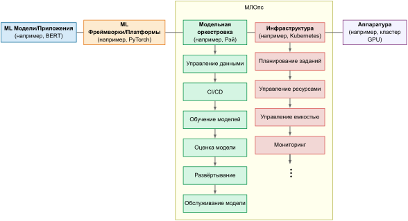
14.3.1 Инфраструктура данных и подготовка
Поскольку неверсионируемые датасеты размывают границы системы, несогласованное вычисление признаков запускает каскады исправлений, а недокументированные зависимости данных создают скрытых downstream-потребителей, погашение долга машинного обучения начинается на границе данных. Если офлайн-конвейер обучения читает дополненную задним числом таблицу хранилища, а путь онлайн-обслуживания читает живой поток событий с иными значениями по умолчанию для null, развёрнутая модель оценивает входы, на которых она никогда не училась работать. Инженерия данных построила конвейеры сбора, предобработки и преобразования признаков вместе с валидацией и версионированием датасетов, делающими один конвейер корректным и воспроизводимым. Операции превращают эти конвейеры в версионируемые интерфейсы, которые принудительно применяются ко всем конвейерам, затрагивающим модель. Там где инженерия данных оптимизирует корректность отдельного конвейера и пропускную способность загрузки, управление данными в MLOps регулирует согласованность между конвейерами, гарантируя, что офлайн-обучение и онлайн-обслуживание вычисляют идентичные признаки.
↩︎ Конвейеры сбора, предобработки и преобразования признаков, которые формализует MLOps, вводятся в 04_data_engineering.
Операции предъявляют этим интерфейсам три свойства: согласованность, свежесть и качество. Согласованность требует, чтобы каждый артефакт, влияющий на поведение модели — от сырых записей до инженерных таблиц признаков, — оставался адресуемым по версии, так что контрольная точка прослеживается до снимка датасета, который её породил (Глава 14.3.1.2). Она также требует, чтобы обучение и обслуживание использовали одно определение признака (Глава 14.3.1.1). Инструменты версионирования датасетов с адресацией по содержимому, такие как DVC (Iterative 2024 г.), обеспечивают первую половину этого требования. Поскольку согласованность определений всё равно деградирует, если входы приходят с опозданием, свежесть требует, чтобы планировщики-конвейеры, объявленные в оркестраторах рабочих процессов вроде Apache Airflow (Apache Software Foundation 2024 г.), доставляли актуальные данные с известной периодичностью. Тогда запоздавший запуск становится видимой ошибкой, а не устаревшим признаком. Даже своевременные и версионируемые конвейеры могут загружать испорченные значения, поэтому качество требует, чтобы проверки валидации из Качество через валидацию и мониторинг выполнялись как автоматические проверки, отклоняющие испорченный батч до того, как он попадёт в обучение или обслуживание. Платформы разметки вроде Label Studio (HumanSignal 2024 г.) ведут историю правок меток под контролем версий.
На сервисе ранжирования эти три свойства действуют согласованно. События кликов и сессий загружаются и соединяются с каталогом товаров через запланированный конвейер (свежесть). Полученные признаки, такие как длина сессии и скользящие частоты кликов, сохраняются в хранилище признаков как для офлайн-дообучения, так и для низколатентного онлайн-доступа (согласованность). Валидация схем, проверки диапазонов, тесты на пропуски и аудит меток отклоняют испорченные записи событий до их попадания в обучающий набор (качество), а версионирование датасетов и интеграция с реестром моделей поддерживают прослеживаемость от сырых журналов событий до развёрнутых предсказаний.
Хранилища признаков
Поддерживать согласованность признаков ранжирования между офлайн-обучением и онлайн-обслуживанием не удаётся всякий раз, когда два пути используют отдельный код признаков — это первопричина долга зависимостей данных из Глава 14.2. Без единого слоя признаков определения признаков обычно реализуются дважды. На сервисе ранжирования дата-сайентист пишет user_session_length на Python по историческим батч-логам, а системный инженер переимплементирует тот же расчёт на Java или C++, чтобы уложиться в миллисекундные задержки обслуживания. Любое расхождение в том, как две реализации ограничивают сессию или обрабатывают пропущенные события, обучает модель на одном признаке, а обслуживает её другим, тихо снижая точность в производстве. Хранилища признаков6 устраняют это расхождение, предоставляя слой абстракции между инженерией данных и машинным обучением и реализуя императив согласованности через единый источник истины для преобразований признаков. В конвейерах без этой абстракции дублированная логика признаков в разных средах порождает перекос обучения и обслуживания, утечки данных по времени и дрейф распределений.
↩︎ Перекос обучения и обслуживания, нарушение императива согласованности, вводится в Согласованность обучения и обслуживания.
Хранилища признаков разрешают противоречие между пропускной способностью батчей и онлайн-задержкой, удерживая два синхронизированных уровня хранения за одним API: офлайн-хранилище для обучающих сканирований с высокой пропускной способностью и онлайн-хранилище для точечных запросов в рамках целевого уровня обслуживания (SLO) по хвостовой задержке. Их as-of join также даёт каждому обучающему примеру только те значения признаков, которые существовали в момент наблюдения (Хранилища признаков). Операции полагаются на эту гарантию, потому что модель ранжирования, обученная на утёкших признаках, отлично выглядит офлайн и проваливается на живом трафике.
Помимо согласованности, хранилища признаков поддерживают версионирование, управление метаданными и повторное использование признаков между моделями. Модель ранжирования и модель обнаружения мошенничества, построенные на одной и той же активности пользователей, часто зависят от пересекающихся признаков, которые можно централизованно поддерживать, валидировать и разделять. Интеграция с конвейерами данных и реестрами моделей сохраняет происхождение. Когда определение признака на верхнем уровне обновляется или объявляется устаревшим, зависимые модели могут быть автоматически опознаны и поставлены в очередь на переобучение.
Перекос обучения и обслуживания: диагностика и предотвращение
Перекос обучения и обслуживания проявляется операционно через несогласованности хранилищ признаков и расхождения конвейеров. Таблица 8 суммирует распространённые причины и методы их обнаружения:
| Тип перекоса | Пример | Метод обнаружения |
|---|---|---|
| Предобработка признаков | Нормализация использует разные статистики | Повтор одного входа и сравнение значений |
| Обработка пропущенных данных | Обучение заполняет NaN средним; обслуживание — нулём | Валидация схемы с явной обработкой null |
| Признаки, зависящие от времени | Признаки вычисляются с разными временными границами | Валидация временных меток в конвейерах признаков |
| Дрейф версий библиотек | Различия версий NumPy или Pandas | Сравнение хэшей окружения |
Кейс перекоса обучения и обслуживания
Двух реализаций user_session_length достаточно, чтобы сломать модель, в код которой никто не вносил изменений. После очередного релиза пути обслуживания сервиса ранжирования модель теряет 8 процентов точности при нулевых изменениях кода модели или весов. Сравнение распределений признаков показывает, что user_session_length имеет эмпирическое среднее 45 минут в обучающем наборе, но лишь 12 минут в онлайн-инференсе. Это различие запускает расследование: разные популяции пользователей могли бы его породить даже при идентичной логике признаков. Повторение тех же записанных сессий через версионируемые преобразования обучения и обслуживания — с теми же доступными событиями и границей отсечения — выявляет разные длительности для одних и тех же запросов. Изучение этих артефактов затем указывает на перекос определения признака. Офлайн-конвейер обучения вычислял продолжительность по настенным часам от первого события сессии до последнего, тогда как путь онлайн-обслуживания считал только время активного переднего плана после фильтрации периодов простоя. Модель выучила границы решений против распределения признака, которое инфраструктура обслуживания никогда не доставляет.
Хранилища признаков (feature stores) устраняют это расхождение, централизуя логику признаков в едином версионированном определении и расширяя вышележащие конвейеры данных. В Список 1 обучение материализует исторические признаки с корректностью на момент события (point-in-time correctness), обслуживание выполняет поиск по точкам в реальном времени, а оба конвейера ссылаются на идентичный версионированный хэш определения, а не на независимые ветки кода.
feature_definitions = registry.load(version="2026-06-01")
training_features = feature_definitions.materialize_historical(
entities=training_entities,
at_event_time=True,
names=["user.session_length", "user.purchase_history"],
)
serving_features = feature_definitions.lookup_online(
entities=[{"user_id": 12345}],
names=["user.session_length", "user.purchase_history"],
)
assert training_features.schema == serving_features.schema
assert (
training_features.definition_hash
== serving_features.definition_hash
)Централизуя определение session_length, офлайн- и онлайн-конвейеры выполняют идентичную логику преобразования, хотя автоматические интеграционные тесты всё равно должны проверять совпадение значений. Централизованные реестры также записывают метаданные и происхождение (lineage), что позволяет быстро ставить диагноз при эволюции определений признаков (Hermann и Del Balso 2017 г.; Gojek и Google 2019 г.).
Императив согласованности (Глава 14.1.1.3) оценивал цену этой ошибки для каждого запроса, а расхождение user_session_length выше показывает, как один признак, вычисленный двумя способами, порождает такие ошибки ценой 8 процентов точности модели. Централизованные хранилища признаков распределяют инженерные затраты на эту инфраструктуру между несколькими моделями и сервисами, превращая архитектурную согласованность в измеримую операционную экономию.
Выявление рассогласования в CI/CD
Конвейеры непрерывной интеграции должны проверять согласованность признаков до развёртывания. Тест на соответствие (parity test) пропускает записанные входные данные через версионированные преобразования обучения и обслуживания, сопоставляет результаты по идентификатору запроса и сравнивает каждый признак с учётом его заявленной семантики и числового допуска. Оба пути должны получать ровно тот снимок событий, который был доступен на момент отсечки предсказания. Иначе офлайн-путь, читающий дозаполненную таблицу хранилища, включит события, поступившие после запроса, и смешает различия кода с различиями в доступной информации. Для признака-длительности контракт задаёт единицу времени и учитываются ли периоды простоя. Категориальные значения и пропуски должны совпадать точно, а значения с плавающей точкой могут использовать специфичный для признака допуск.
Небольшой контрпример показывает, почему распределения не могут заменить эту проверку. Пусть преобразование обучения возвращает длительности сессий 12 и 45 минут для запросов A и B соответственно, а обслуживание возвращает 45 и 12 минут для тех же запросов. Маргинальные распределения — значения признака, взятые сами по себе безотносительно того, какой запрос породил каждое из них, — идентичны, поэтому сравнение Колмогорова–Смирнова (KS), которое видит лишь два набора значений, не находит различий, но сравнение по ключу запроса выявляет оба несоответствия. И наоборот, новая популяция более коротких сессий может сдвинуть маргинальное распределение, хотя оба пути по-прежнему согласуются для каждого воспроизведённого запроса. Корректность на момент события остаётся отдельным требованием: два пути воспроизведения, получившие один и тот же журнал без окон, согласуются друг с другом, при этом оба утекают будущие события, которых не существовало на момент предсказания.
Список 2 дополняет картину распределительным скринингом с помощью двухвыборочного теста KS, который конвейер данных уже использует для отслеживания дрейфа (Качество через валидацию и мониторинг). Статистика KS — это наибольший вертикальный зазор между эмпирическими кумулятивными функциями распределения (eCDF) выборок обучения и обслуживания. Порог
def screen_feature_distributions(
training_features, serving_features, threshold=0.1
):
"""Pause promotion for review if distributions diverge."""
for feature in training_features.columns:
ks_stat = ks_2samp(
training_features[feature], serving_features[feature]
)
if ks_stat.statistic > threshold:
raise DistributionReviewRequired(
f"{feature}: KS={ks_stat.statistic:.3f}"
)Версионирование и происхождение
Воспроизведение записанных запросов для изоляции рассогласования или приостановка продвижения на распределительном скрининге работают только тогда, когда команда может восстановить точные определения признаков, снимок датасета и контрольную точку модели, которые были задействованы. Отслеживание происхождения (lineage tracking) и версионирование дают такую запись, реализуя принцип воспроизводимости, формализованный в Глава 14.1.1. Происхождение программных артефактов уже зависит от исходного кода, инструментов сборки, зависимостей и конфигурации. В системах машинного обучения поведение модели — совместный продукт кода, конфигурации гиперпараметров и снимка обучающего датасета. Изменение любой одной зависимости порождает совершенно иной артефакт модели. Каждый артефакт получает хэш содержимого, так что любую модель можно проследить до её входов.
↩︎ Версионирование датасетов по содержимому, при котором каждый выпуск датасета записывается своим хэшем, описано в Версионирование данных для воспроизводимости ML.
Версионирование данных решает проблему изменчивости датасетов, сохраняя снимки сырых данных и промежуточные таблицы признаков под хэшами с адресацией по содержимому, так что записанные входы исторических запусков остаются доступными. Хэши идентифицируют артефакты, но не могут восстановить утраченное содержимое или устранить недетерминизм исполнения. Версионирование моделей регистрирует обученные веса как неизменяемые артефакты вместе с гиперпараметрами обучения, метриками оценки и манифестами зависимостей окружения. Реестр моделей (model registry)7 — это хранилище, которое содержит эти неизменяемые артефакты в состояниях жизненного цикла (например, staging, production или retired) и предоставляет графы происхождения, прослеживающие полную цепочку зависимостей от сырых загруженных записей до развёрнутых конечных точек предсказания (MLflow Project 2026 г.; Google Cloud 2024 г.).
Реестр — это также то, что позволяет механизмам релиза продвигать, задерживать или откатывать ровно тот артефакт, который был оценён. Он хранит неизменяемые теги версий, связывает метрики оценки с хэшами артефактов и определяет, какую контрольную точку использует каждый уровень обслуживания (Google Cloud 2024 г.). Это отличает реестр от исследовательского каталога моделей, который индексирует архитектуры-кандидаты для экспериментов; модель попадает в реестр, лишь когда становится версионированным кандидатом на развёртывание. Фреймворки отслеживания экспериментов, такие как MLflow8 (Databricks 2024 г.), и унифицированные распределённые среды исполнения, такие как Ray9, записывают окружающее состояние исполнения, параметры обучения и происхождение. Вместе управление реестром и отслеживание происхождения превращают экспериментальную валидацию в контролируемый релиз, так что протестированный кандидат может быть продвинут в продакшн, наблюдаться под живым трафиком и быть откатан без потери данных о происхождении.
Эти механизмы строят граф происхождения системы машинного обучения. Этот граф создаёт аудиторский след, необходимый для диагностики продакшн-отказов: определить, разошлось ли входящее распределение запросов с обучающими базовыми линиями, изменились ли вышележащие вычисления признаков или загрузила ли среда обслуживания невалидированную контрольную точку весов. Записывая происхождение как обязательный, запрашиваемый артефакт, системная инженерия даёт разбору инцидентов проверяемую запись, с которой можно соотносить гипотезы о первопричине.
14.3.2 Непрерывные конвейеры и автоматизация
Хранилища признаков и системы версионирования закрепляют согласованность данных и артефактов в отдельный момент времени. Однако продакшн-модели должны повторять препроцессинг, обучение, оценку и релиз без инженера, вручную запускающего скрипты и рискующего пропустить проверку валидации или указать несовпадающий путь к датасету. Непрерывная автоматизация соединяет эти статические средства контроля в интегрированные рабочие процессы, реагирующие на новые данные, меняющиеся цели и операционные ограничения (Orr и др. 2021 г.; Google Cloud 2026 г.).
Конвейеры CI/CD
Конвейеры CI/CD переносят эту согласованность со стороны данных на сторону процесса, гарантируя, что изменения проходят через валидированные стадии, а не через подручные развёртывания. Конвейеры CI/CD для ML должны обрабатывать сложность, отсутствующую в традиционном ПО: зависимости данных, рабочие процессы обучения модели и версионирование артефактов, связывающие изменения кода со статистическими изменениями поведения.
Типичный конвейер ML CI/CD состоит из скоординированных стадий: получение обновлённого кода, препроцессинг входных данных, обучение модели-кандидата, валидация производительности, упаковка модели и развёртывание в среду обслуживания. В некоторых случаях конвейеры также включают триггеры автоматического дообучения по дрейфу данных или деградации производительности. Кодифицируя эти шаги, конвейеры CI/CD10 сокращают ручное вмешательство, навязывают проверки качества и поддерживают непрерывное улучшение развёрнутых систем.
ML CI/CD добавляет второй уровень инструментов, потому что универсальный оркестратор управляет кодом, но не данными и моделями. Универсальный оркестратор CI/CD (например, GitHub Actions (GitHub, Inc. 2024 г.b)) управляет событиями системы контроля версий и логикой исполнения, но ML-слой должен дополнительно версионировать данные, блокировать продвижение по метрикам модели и запускать дообучение. Поэтому команды добавляют ML-платформу или оркестратор рабочих процессов (например, Kubeflow (Authors 2024 г.)), предоставляющий абстракции более высокого уровня для этих задач.
Без такой автоматизации развёртывание модели деградирует в ручной, подверженный ошибкам процесс, где инженер дообучает модель локально, копирует артефакты на staging-сервер и продвигает в продакшн без гарантии, что данные, код или гиперпараметры соответствуют валидированным. Цена таких подручных рабочих процессов растёт с размером команды и частотой развёртываний, порождая дрейф конфигурации и молчаливые регрессии, которые проявляются лишь после того, как модель выдала неверные предсказания.
Конвейер непрерывного обучения проходит семь последовательных стадий — от загрузки датасета, валидации данных и преобразования данных до обучения, оценки, валидации и продвижения в реестр (Рисунок 6). Движимый выделенными движками обработки, обучения и оценки под конвейером, рабочий процесс координируется с окружающими репозиториями датасетов, моделей и метаданных всякий раз, когда внешний триггер инициирует дообучение.
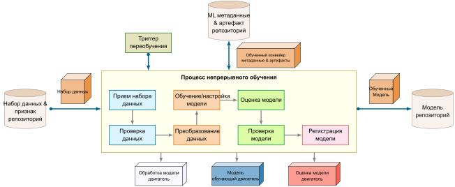
Рассмотрим модель ранжирования в активной разработке. Когда разработчик вносит изменения в код, конвейер CI извлекает указанную версию набора данных, выполняет предобработку признаков и запускает обучение модели. Эксперименты отслеживаются с помощью системы учёта экспериментов, такой как MLflow (Databricks 2024 г.), которая записывает кривые функции потерь, а также регистрирует артефакты моделей. После успешного прохождения автоматизированной офлайн-валидации модель помещается в контейнер и разворачивается на стейджинг-кластер. Если кандидат проходит стейджинг-валидацию, конвейер выполняет канареечное развёртывание (Глава 14.4.3), постепенно переводя производственный трафик запросов на новую модель и отслеживая задержку инференса и частоту ошибок. При обнаружении регрессии качества трафик автоматически откатывается к предыдущей контрольной точке модели.
CI/CD становится основополагающим, когда системы выпускают модели повторно или несут существенный производственный риск, превращая спонтанное экспериментирование в структурированное, воспроизводимое развёртывание. Масштабирование за пределы одного конвейера требует повторно используемых компонентов и явно заданных схем артефактов.
Пример 14.1: Промышленные конвейеры машинного обучения Google TFX
Сценарий: производственный опыт Google привёл к созданию TensorFlow Extended (TFX) — набора повторно используемых компонентов для производственных ML-конвейеров (Baylor и др. 2017 г.). По мере умножения конвейеров спонтанная передача задач между командами затрудняет валидацию, отслеживание происхождения и воспроизводимость.
Диагноз: каждому этапу нужна явная валидация и метаданные, чтобы развёрнутую модель можно было проследить к данным, преобразованиям, коду и оценке, породившим её.
Системный урок: оркестрация в виде направленного ациклического графа сама по себе не обеспечивает воспроизводимость. Стандартизированные компоненты и ML Metadata (MLMD) — хранилище, фиксирующее входы и выходы каждого запуска компонента конвейера, — сохраняют происхождение благодаря записанным входам и преобразованиям.
Конвейеры обучения
Конвейеры CI/CD оркестрируют общий рабочий процесс, но само обучение требует специализированной вычислительной инфраструктуры. Обучение модели строится на примитивах одноузлового параллельного исполнения, которые уже предоставляют системы обучения. В рамках MLOps учебная деятельность становится компонентами воспроизводимого конвейера, поддерживающего непрерывное экспериментирование и производственное развёртывание.
↩︎ Одноузловой параллелизм по данным и по модели, который планируют конвейеры обучения, описан в Обучение на одном узле с несколькими GPU.
Фреймворки, такие как TensorFlow (Abadi и др. 2016 г.), PyTorch (Paszke и др. 2019 г.) и Keras (Chollet и др. 2024 г.), предоставляют модульные компоненты для архитектур моделей и процедур оптимизации. Операционная дисциплина определяет, какие исследовательские обучающие процедуры превращаются в версионированные, протестированные задания переобучения и по каким триггерам исполнения.
↩︎ Критерии выбора фреймворка изложены в Критерии выбора фреймворка.
Обучающие скрипты и конфигурации окружений версионируются с помощью Git (Torvalds и Hamano 2024 г.) и размещаются на GitHub (GitHub, Inc. 2024 г.a). Интерактивные блокноты Jupyter (Project Jupyter 2024 г.) ускоряют прототипирование, связывая код, встроенные визуализации и состояние исполнения, но их запуск в неизменном виде в производственных конвейерах влечёт серьёзные операционные издержки.
Блокноты в продакшене
Автоматизированные конвейеры CI/CD предполагают детерминированное и воспроизводимое исполнение кода, но блокноты Jupyter нарушают это предположение за счёт персистентного состояния ядра. В интерактивной сессии ячейки могут выполняться вне линейного порядка, создавая скрытые зависимости по памяти, которые невозможно воспроизвести при чистом перезапуске интерпретатора. Типичный производственный сбой возникает, когда разработка опирается на ячейки, выполненные в порядке 1-3-2: запланированный батч-раннер, исполняющий ячейки сверху вниз (1-2-3), падает из-за неопределённых переменных или изменённых промежуточных тензоров.
Трудности с тестированием усугубляют эту уязвимость, связанную с состоянием. Стандартные каркасы модульного тестирования и фреймворки мокирования плохо стыкуются с интерактивными документами-блокнотами. Утверждения на уровне ячеек редко параметризуются или подключаются к тестовым раннерам, из-за чего блокноты тестируются значительно хуже модульного Python-кода.
Обе издержки сокращаются, когда блокнот запускается как скрипт. Автономное (headless) исполнение с внедрёнными параметрами (Papermill (Papermill Project 2026 г.)) выполняет ячейки сверху вниз как дискретные этапы конвейера, а экспорт в обычный скрипт (nbconvert (Project Jupyter 2026 г.)) открывает код для линтеров и тестовых раннеров CI. Командам всё равно предстоит отобрать или отрефакторить исследовательские ячейки и убедиться в чистом, упорядоченном исполнении.
Извлечение кода из блокнотов в протестированные модули требует затрат на рефакторинг, но это предотвращает превращение скрытых предположений о состоянии в расхождение обучения и обслуживания (training-serving skew) в продакшене. Такое расхождение — «молчаливый» отказ, чья цена растёт с каждым днём необнаруженности, как показывает расчёт стоимости молчаливых отказов в обсуждении мониторинга (notebook 14.3).
Модульная логика обучения также позволяет конвейеру планировать повторяемые эксперименты в рамках бюджета ресурсов узла. Параллельные запуски конкурируют за память ускорителей, мощность препроцессинга на хосте и пропускную способность хранилища; принудительное применение лимитов ресурсов, зафиксированных вместе с конфигурацией каждого запуска, удерживает эксперименты в пределах зарезервированной для них ёмкости. Если исполнение может быть прервано, контрольные точки с возобновлением (Состояние обучения и контрольные точки) сохраняют уже выполненную работу по обучению без необходимости перезапускать весь запуск с нуля.
Как часто запускать этот конвейер, зависит от данных, которые даёт только производственный мониторинг, поэтому Глава 14.6 рассматривает это решение после мониторинга. Конвейер, способный запускаться по требованию, всё равно производит лишь кандидатов, а валидация решает, кто из них может выйти в релиз.
Валидация модели
Конвейеры обучения производят кандидатов в модели; валидация модели определяет, какие кандидаты заслуживают производственного развёртывания. В отличие от исследовательской оценки, где модель, превзошедшая бенчмарк на статической тестовой выборке, может считаться успешной, производственная валидация должна оценивать операционную готовность в представительных условиях и устанавливать средства мониторинга и отката, необходимые после изменения распределения. Здесь MLOps управляет разрывом верификации (принцип «Разрыв верификации») — расстоянием между тем, что может верифицировать конечный тестовый набор, и тем, с чем модель сталкивается при развёртывании, — а не закрывает его. Ни один набор тестов не покрывает производственную популяцию, поэтому валидация продолжает переоценивать качество по мере её изменения.
↩︎ Валидация модели как проверка на основе свидетельств, решающая, выйдет ли модель в релиз, изложена в Этап 4: Оценка и валидация.
Процесс оценки начинается с тестирования качества на отложенной тестовой выборке, отобранной так, чтобы представлять текущую производственную популяцию, и обновляемой по мере её изменения. Ключевые метрики, такие как accuracy, AUC, precision, recall и F1 (Rainio и др. 2024 г.), вычисляются и отслеживаются во времени для выявления деградации из-за дрейфа данных (IBM 2024 г.). Глава 14.5.2 показывает, как такой дрейф проявляется в живой телеметрии.
Помимо статической оценки, производственные конвейеры демонстрируют веса кандидатов живому трафику в контролируемых стадиях (теневое, канареечное и сине-зелёное развёртывание), ограничивая радиус поражения; каждый из этих способов разбирается в Глава 14.4.3. Валидация определяет свидетельства, которые каждая стадия обязана дать, прежде чем кандидат продвинется дальше. Оценка кандидатов в одинаковых операционных условиях — предпосылка обоснованного решения о продвижении. Кандидат, показывающий кажущийся прирост метрик лишь потому, что он оценивался на отличающемся срезе трафика или временном окне, смешивает качество модели с вариативностью данных. Облачные ML-платформы поддерживают контролируемую оценку с помощью воспроизведения запросов, теневого обслуживания и синтетического нагрузочного тестирования. Сравнение также должно быть зафиксировано. Системы учёта экспериментов, такие как Weights & Biases (Weights & Biases, Inc. 2024 г.), логируют срез данных, временное окно, конфигурацию и метрики, использованные для каждого кандидата, так что решение о продвижении можно проверить и повторить в тех же условиях.
Пока автоматизированные проверки валидации защищают от регрессий по основным агрегированным метрикам, производственная валидация требует также аудита срезов и поведения «длинного хвоста». Автоматизированные наборы тестов часто маскируют серьёзные падения качества на недопредставленных подпопуляциях или критически важных для безопасности граничных случаях. Производственные архитектуры сочетают автоматизированные проверки с экспертными обзорами политик, особенно для моделей, развёрнутых в регулируемых областях. Эта многоступенчатая дисциплина валидации связывает офлайн-оценку с живым производственным мониторингом, гарантируя, что модели-кандидаты удовлетворяют инвариантам точности, задержки и безопасности, прежде чем получить неограниченный обслуживающий трафик.
14.3.3 Интеграция инфраструктуры
Версионированная контрольная точка модели всё ещё небезопасно разворачивать, если обслуживающий кластер использует иное определение признака или не имеет проверенного пути отката к предыдущим весам. Инфраструктура разработки связывает эти элементы через два из трёх системных интерфейсов. Хранилища признаков и версионирование данных снижают несогласованность на интерфейсе данных и модели, централизуя и отслеживая доступ к признакам при обучении и обслуживании. Конвейеры CI/CD, реестры моделей и проверки валидации стабилизируют интерфейс модели и инфраструктуры, автоматизируя переход от обученных весов к контейнеризованным сервисам с возможностью отката. Вместе эти средства управления готовят артефакт к релизу. Третий интерфейс — производственный мониторинг — замыкает операционный контур, отслеживая, сохраняется ли предсказательное качество при изменении входных данных и условий эксплуатации, хотя сначала должен состояться релиз.
14.4 Выпуск моделей
Модель, прошедшая все офлайн-проверки, ещё не приняла ни одного продакшн-решения. Между проверенной контрольной точкой и первым предсказанием, увиденным пользователем, лежат упаковка, преобразование в среду исполнения для обслуживания (serving runtime), поэтапный допуск к живому трафику и путь назад, если новая версия поведёт себя плохо. На каждом шаге артефакт, который видят пользователи, может отличаться от артефакта, который оценивался. Развёртывание превращает статическую контрольную точку в версионированный, воспроизводимый исполняемый артефакт. Обслуживание затем распределяет память ускорителей, формирует входные батчи и планирует вычислительные ядра так, чтобы удовлетворять SLO по задержке при динамических нагрузках от запросов. За шаги release и recover цикла эксплуатации отвечают швы между этими двумя этапами: доказательство того, что отправляется именно то, что было проверено, ограничение того, какую долю трафика может получить плохая версия, и поддержание скорости отката, достаточной для его реального применения. В сервисе ранжирования каждый из этих швов стоит ещё и памяти, потому что любой механизм, удерживающий две версии живыми, должен хранить две копии таблиц эмбеддингов.
14.4.1 Инфраструктура как код
Удержание двух копий таблиц ранжирования на протяжении поэтапного релиза работает только если staging и продакшн выделяют одно и то же аппаратное обеспечение ускорителей, лимиты памяти и квоты масштабирования. Когда команды управляют кластерами вручную или через тикеты вместо кода, среды расходятся. Модель, прошедшая staging, падает в продакшне, потому что оператор выделил другой тип GPU. Задача обучения падает, потому что чей-то эксперимент исчерпал общую память. Сервис инференса не масштабируется, потому что его ресурсные квоты были заданы шесть месяцев назад в неформальном сообщении.
Инфраструктура как код (Infrastructure as code, IaC) относится к конфигурации инфраструктуры как к программному обеспечению (с контролем версий, ревью, тестами и автоматическим исполнением), а не как к чему-то, настраиваемому через графические интерфейсы или утилиты командной строки. Изменения отслеживаются, конфигурации можно тестировать до развёртывания, а среды можно надёжно воспроизводить.
Конкретный инструмент важнее меньше, чем свойство, которое он обеспечивает. Инструменты инфраструктуры как кода, такие как Terraform (HashiCorp 2014 г.), хранят определения инфраструктуры вместе с кодом приложения. Команда может затем воспроизвести тип ускорителя, сетевые политики, права доступа к хранилищу и лимиты масштабирования обучающей или обслуживающей среды у любого облачного провайдера или на собственном оборудовании, а также аудировать и тестировать эти определения в тех же CI/CD-конвейерах, что и модель. Контейнеризация даёт такую же границу воспроизводимости для зависимостей среды исполнения. Docker (Merkel 2014 г.) упаковывает модель, библиотеки и код обслуживания в изолированный блок, а системы оркестрации, такие как Kubernetes (Cloud Native Computing Foundation 2024 г.a), разворачивают этот блок многократно, сохраняя явное распределение ресурсов, масштабирование и управление состоянием здоровья.
Чтобы поглощать пики во время подбора гиперпараметров и всплески трафика предсказаний, команды используют автомасштабирование11 (Amazon Web Services 2024 г.), которое подстраивает вычислительную мощность по метрикам использования, балансируя производительность и стоимость. Те же определения инфраструктуры должны охватывать и on-premises-среды, и периферийные устройства (edge), когда задержка, приватность или регулирование удерживают часть развёртывания вне облака.
Инфраструктура как код решает, как воспроизводимо выделять ресурсы, но операторам всё ещё нужно решать, когда и сколько мощности выделять. Рабочие нагрузки ML ломают допущения обычного веб-провижининга. Задачи обучения требуют всплесков высокой параллельности в распределённых топологиях ускорителей, создавая трение между эффективностью утилизации кластера и временем получения решения. Сервисы инференса требуют устойчивых базовых аллокаций с быстрым эластичным масштабированием наружу, чтобы поглощать всплески запросов при строгих SLO на хвостовую задержку — баланса, который количественно описывают целевые показатели утилизации из Глава 14.5.1.1. Воспроизводимое провижининг кластеров и контейнеров фиксирует среду вокруг модели, однако сам бинарный файл модели, загружаемый в этот контейнер, перед обслуживанием подвергается преобразованиям.
14.4.2 Валидация обслуживающего артефакта
Совпадение кластера и контейнера между staging и продакшном всё же не гарантирует, что модель внутри контейнера вычисляет те же предсказания, что и при оценивании, потому что артефакт, попадающий на обслуживающий флот, редко является сырой контрольной точкой обучения. Перед развёртыванием модель обычно компилируется из кода фреймворка в eager-режиме в статический граф для конкретной среды исполнения и часто понижается в точности. Каждое преобразование обменивает переносимость на скорость, и каждое может изменить то, что модель вычисляет, поэтому операционная обязанность — доказать, что преобразованный артефакт всё ещё ведёт себя как проверенная модель.
↩︎ Среды исполнения инференса и выбираемые ими варианты точности для обслуживания закреплены в Выбор среды исполнения инференса.
Это доказательство должно охватывать режимы отказа, которые преобразование вносит незаметно. Рассмотрим команду, разворачивающую модель с квантизацией INT8 после проверки только роста пропускной способности. Точность классификации падает на редких, но ценных краевых случаях, и деградация остаётся незамеченной неделями, потому что агрегированные метрики удерживаются в пределах SLO. Первый слой валидации — численная эквивалентность: сравнение выходов оптимизированной модели с исходной на репрезентативном тестовом наборе с порогами расхождения, специфичными для приложения. Эта проверка необходима, но недостаточна, потому что статический калибровочный срез (фиксированная выборка входов, использованная для установки масштабов квантизации) — это не живой трафик. Редкие входы, out-of-distribution-примеры и случаи, специфичные для подгрупп, могут выявить артефакты квантизации, скрытые агрегированными тестовыми метриками, поэтому сравнение должно быть дезагрегировано по тем же когортам, которые отслеживает продакшн-мониторинг (Глава 14.5).
↩︎ Калибровка по диапазону, устанавливающая масштабы квантизации по выборке входов, закреплена в Калибровка диапазона.
Второй слой — операционная валидация. Занимаемый объём памяти должен измеряться при пиковой утилизации в среде исполнения, включая динамические аллокации во время инференса, поскольку некоторые оптимизации обменивают возросшее потребление памяти на скорость вычислений. Поведение при прогреве различается по средам исполнения: Accelerated Linear Algebra (XLA) может компилировать ядра just-in-time (JIT) при начальном исполнении, тогда как TensorRT строит свой скомпилированный движок до развёртывания. Загрузка этого движка всё же может добавить задержку старта. Совместимость версий среды исполнения замыкает цикл. Конфигурациям развёртывания нужна явная фиксация версий (version pinning), потому что даже минорное обновление среды исполнения может изменить выбор ядер, а вместе с ним и задержку, и численные результаты — в артефакте, чьи веса не менялись. Незафиксированная среда исполнения — неучтённый вход Уравнение 1.
14.4.3 Развёртывание модели
Даже проверенный движок модели с зафиксированной средой исполнения может отказать на первом живом запросе, если инженер скопирует веса на продакшн-сервер, где библиотека извлечения признаков отличается от использованной при оценивании, из-за чего модель ранжирования будет оценивать почти все элементы одинаково. Развёртывание модели — это потому задача релиза системы, а не передачи файлов, поскольку проверенные веса модели, зафиксированная среда обслуживания и конфигурация предобработки должны отправляться как единый развёртываемый блок. Упаковка этого набора в неизменяемый образ контейнера из Глава 14.4.112 обеспечивает паритет сред между разработкой и узлами кластера.
Когда реестр моделей продвигает этот контейнеризованный кандидат (Chen и др. 2020 г.), релизный конвейер сначала разворачивает его в staging- или QA-среду13, чтобы проверить функциональные и статистические инварианты до того, как к нему попадёт какой-либо пользовательский трафик.
Поэтапная раскатка (staged rollout) переносит эту staging-валидацию в живой трафик по шагам, расширяя охват кандидата только после того, как предыдущий шаг не покажет регрессии. Три стратегии релиза воплощают её на практике. Теневые развёртывания (shadow deployments)14 асинхронно дублируют живой продакшн-трафик в модель-кандидата, не возвращая её предсказания пользователям, что позволяет сравнивать задержку и выходы без прямого воздействия на пользователей; для точности всё ещё нужны метки или иной источник эталонной истины. Канареечные развёртывания (canary deployments)15 направляют небольшую долю пользовательского трафика к кандидату и продолжают наращивать эту долю до полного трафика, пока под живой нагрузкой не появляется регрессий. Сине-зелёные развёртывания (blue-green deployments)16 поддерживают параллельные среды для переключения на уровне роутера и быстрого отката. Каждая стратегия снижает свой риск релиза, но ни одна не отменяет необходимости проверенных процедур отката и продакшн-мониторинга.
↩︎ Поэтапная раскатка как последний шаг валидации жизненного цикла, распространяющая офлайн-оценивание на живой трафик, закреплена в Офлайн- и онлайн-оценка.
При канареечном релизе роутер открывает кандидату начальный срез живого трафика (Fowler 2014 г.), а телеметрические конвейеры следят за задержкой инференса, стабильностью системы и распределениями предсказаний. В сервисе ранжирования кандидат получает 5 процентов живых запросов, пока команда сравнивает click-through rate, p99-задержку и дрейф предсказаний с базовой моделью. Только после того, как кандидат демонстрирует статистическую стабильность без регрессий задержки, он продвигается к обслуживанию полного продакшн-трафика.
Практический случай 14.2: Ошибка Knight Capital (2012)
Контекст: Knight Capital Group была крупным маркет-мейкером на американских акциях, чья торговля составляла около 10 процентов всей торговли листингованными американскими акциями. В августе 2012 года операционное развёртывание обновило SMARS — автоматизированное программное обеспечение маршрутизации ордеров фирмы — на семи из восьми продакшн-серверов, но пропустило восьмой (U.S. Securities and Exchange Commission 2013 г.).
Механизм: Развёртывание переиспользовало бинарный feature flag, который на необновлённом восьмом сервере активировал Power Peg — устаревшую процедуру обработки ордеров, оставленную в коде. На устаревшем сервере Power Peg больше не считал, сколько акций каждого входящего родительского ордера уже исполнено, и продолжал отправлять всё более мелкие дочерние ордера на торговые площадки без остановки.
Последствия: Примерно за 45 минут 212 родительских ордеров породили миллионы дочерних ордеров и более 4 миллионов исполнений по 154 акциям на более чем 397 миллионов акций, а Knight потеряла более $460 миллионов. Менее чем через год материнская компания Knight объединилась с GETCO Holding Company, образовав KCG Holdings.
Реакция: Инцидент мотивирует проверять, что каждый продакшн-узел исполняет предназначенную версию до получения трафика, явное управление жизненным циклом feature flag и автоматические предохранители (circuit breakers), ограничивающие ущерб, который может причинить неисправный релиз.
Системный урок: Одного сервера с неверной версией оказалось достаточно для убытка в $460 миллионов. Развёртывания ML разделяют эту уязвимость: несовпадение версий в реестре моделей, несинхронизированные схемы признаков или частичная канареечная маршрутизация могут затопить продакшн испорченными запросами инференса раньше, чем сработают телеметрические оповещения.
Knight Capital показывает, почему каждый узел должен быть проверен на исполнение предназначенной версии до того, как к нему попадёт трафик. Поэтому каждый обслуживающий узел сообщает хэш содержимого загруженного им набора, а релизный конвейер сравнивает этот хэш с версией, продвинутой реестром моделей, и держит любой расходящийся узел вне ротации. Поэтапные раскатки добавляют дополнительную защиту, ограничивая долю трафика, которую видит плохая версия, но они же могут выявлять поведение, зависящее от нагрузки.
Когда канареечные развёртывания обнаруживают аномалии при повышенных долях трафика (например, исчерпание памяти, переливы очередей или рост p99 хвостовой задержки, появляющиеся при 30 процентах трафика, но незаметные при 5 процентах), изоляция требует систематической отладки по всему стеку. Эффективная диагностика требует сопоставления множества сигналов: метрик бенчмаркинга производительности, анализа распределений данных для обнаружения дрейфа и сдвигов важности признаков, которые могут объяснить деградацию. Команды ведут для этой работы отладочные наборы инструментов, включая анализ A/B-тестов (Глава 14.4.3.2), атрибуцию признаков (Глава 14.7.1.2.3) и анализаторы срезов, выявляющие подгруппы с ухудшившейся производительностью (Глава 14.7.1.2.2). Этот диагностический цикл должен быть напрямую связан с релизным конвейером, потому что интеграция CI/CD автоматизирует развёртывание и откат лишь тогда, когда откат спроектирован как часть механизма раскатки, а не считается аварийным скриптом.
Стратегии отката и механизмы безопасности
Без надёжной возможности отката17 команды начинают избегать развёртываний и замедляют итерации, поэтому эффективный дизайн отката планирует три различных сценария. Самый быстрый уровень — немедленный откат — предназначен для критических сбоев, обнаруженных сразу после развёртывания: ошибок обслуживания, скачков задержки или очевидных ошибок предсказаний; предыдущая версия модели при этом держится загруженной и «прогретой», чтобы переключить трафик без задержки на холодный старт. Быстрый откат обрабатывает деградацию производительности, обнаруженную по канареечным метрикам вскоре после развёртывания, и опирается на интеграцию с реестром моделей, чтобы развернуть предыдущие версии с минимальными изменениями конфигурации. Когда релиз уже выведен на полный трафик, отложенный откат устраняет более тонкие регрессии, проявляющиеся позже в бизнес-метриках или отзывах пользователей. Откат в этом случае должен также учитывать зависящие от модели данные — например, состояние персонализации или кэшированные эмбеддинги, накопленные под новой версией. Таблица 9 суммирует шаблоны реализации для каждого типа отката:
| Тип отката | Триггер | Реализация | Обработка состояния |
|---|---|---|---|
| Немедленный | Ошибки обслуживания, сбои | Горячий резерв с быстрым переключением маршрутизации | Проверка совместимости состояния |
| Быстрый | Деградация канареечных метрик | Развёртывание на основе реестра | Очистка кэшей, перезапуск сессий |
| Отложенный | Падение бизнес-метрик | Полное повторное развёртывание с миграцией | Миграция состояния, повторное воспроизведение при необходимости |
Тестирование отката
Процедуры отката, которые ни разу не отрабатывались, часто дают сбой во время активного инцидента, когда когнитивная нагрузка и нехватка времени максимальны: зависимости конфигурации, несовместимое состояние или неясное владение компонентами проявляются только при реальной попытке отката. Регулярные учебные откаты заранее вскрывают эти пробелы, а пошаговые runbook гарантируют, что дежурный инженер сможет выполнить откат, не участвовав в проектировании развёртывания. Автоматические триггеры отката ещё сильнее сокращают время реакции — при условии, что их пороги откалиброваны под конкретный сервис и защищены от «дребезга» (когда метрика колеблется у порога и сервис раз за разом откатывается то назад, то вперёд), а восстановленная модель проверяется на согласованность с живыми кэшами, а не выдаёт предсказания, искажённые несовместимым состоянием признаков.
Откат для систем с состоянием и без состояния
ML-системы различаются по степени наличия состояния (statefulness), что напрямую определяет сложность отката. Для рабочих нагрузок без состояния, таких как классификация табличных данных и статическая регрессия, откат сводится к замене весов модели или возврату трафика на предыдущий контейнер, поскольку отдельные инференсы не разделяют контекст исполнения. Напротив, модели с состоянием (включая последовательные рекомендательные системы, ранжировщики поиска по сессиям и диалоговые системы) накапливают переходное пользовательское состояние. Откат таких нагрузок может требовать сброса сессий, шимов схемы для кэшированных векторов контекста или явной миграции состояния. Фиксация версионированных контрольных точек на границах развёртываний смягчает это трение, но чистое восстановление остаётся архитектурным свойством, требующим эмпирической проверки, а не допущения.
Ранжирующий сервис — это случай системы с состоянием. Он заранее вычисляет плотные эмбеддинги пользователей и объектов и хранит их в кэшах с низкой задержкой, поэтому если версия 2 поворачивает латентное векторное пространство или меняет размерность эмбеддингов, кэшированные векторы становятся бессмысленными для откаченной версии 1. Следовательно, откат для системы с состоянием должен развертывать веса вместе либо с атомарной инвалидацией кэша, либо с переключением пространства имён, при котором кэшированные векторы каждой версии живут под собственным версионированным префиксом ключа (пространством имён), а откат направляет запросы обратно к префиксу версии 1 — так ни один запрос не оценивается в несовместимом векторном пространстве. В системах с петлями обратной связи возникает наиболее сложный режим отказа: плохие предсказания загрязняют нижележащие журналы признаков или обучающие наборы кликстрима в период деградации. Тогда откат серверного бинарника оставляет загрязнённые данные в корпусе для переобучения, и эти данные должны быть удалены или помещены в карантин до восстановления прежнего поведения.
Совместимая единица отката больше, чем веса. Рисунок 7 разделяет бандл, выбираемый для нового запроса, и бандл, удерживаемый запросом, уже находящимся в обработке.
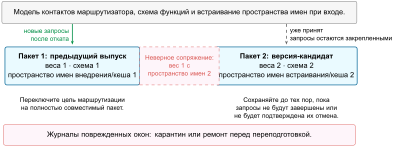
Маршрутизатор должен выбирать совместимые модель, схему и пространство имён одним решением при приёме запроса. Переключение меняет это решение для последующих запросов; оно не переносит более ранние запросы в другое векторное пространство. Одиночный запрос на ранжирование завершается за миллисекунды, так что для него перекрытие короткое, но сессия в сессионном ранжировщике или диалоговой системе может оставаться закреплённой за одним бандлом минуты. Удержание бандла кандидата до завершения таких запросов или подтверждения их отмены сохраняет контракт в период сосуществования, а карантин журналов решает отдельную задачу восстановления.
A/B-тестирование для валидации моделей
Откат сдерживает релиз, ухудшающий здоровье сервиса, а канареечная маршрутизация проверяет, что кандидат работает без ошибок и скачков задержки, но ни одна из этих проверок не доказывает, что кандидат улучшает пользовательские результаты по сравнению с действующей моделью. A/B-тестирование даёт статистическую основу для решения о выводе модели, сравнивая версии модели на живом трафике в контролируемых условиях и измеряя, улучшает ли новая модель бизнес-метрики со статистической уверенностью.
Постановка эксперимента и правила принятия решений
Корректный A/B-тест устанавливает четыре элемента контроля, чтобы решения о развёртывании оставались статистически обоснованными. Во-первых, единица рандомизации определяет, делится ли трафик по ID пользователя или по отдельному запросу. Хэширование на уровне пользователя сохраняет согласованность между сессиями ценой большего требуемого объёма выборки, тогда как разбиение на уровне запросов максимизирует пропускную способность выборки, но рискует показать одному пользователю чередующиеся варианты модели. Во-вторых, требуемый объём трафика следует из двух вероятностей, которые команда фиксирует заранее. Доверительный уровень — это вероятность того, что тест не сообщит о различии, когда его нет, а статистическая мощность — вероятность обнаружить реальное различие выбранного размера. При нормальной аппроксимации с общей дисперсией, где средний результат каждого варианта считается нормально распределённым с одинаковой дисперсией, пусть
Для относительного подъёма 2 percent при базовой конверсии 5 percent (от 5 percent до 5.1 percent) и мощности 80 percent эксперимент требует примерно 745,644 пользователей на вариант. Если трафик ограничивает тест 25,000 пользователей на вариант, решение Уравнение 4 относительно
В-третьих, защитные метрики (guardrail metrics) задают операционные и поведенческие границы, которые не должны деградировать, даже если основная метрика улучшается. Рекомендательная модель, повышающая CTR на 10 процентов и при этом увеличивающая задержку ответа p99 на 500 ms, нарушает защитные границы системы и рискует каскадными тайм-аутами в нижележащих сервисах. В-четвёртых, фиксированный горизонт оценки означает, что тест длится до достижения заранее зарегистрированного размера выборки и минимальной длительности, покрывающей недельную сезонность. Остановка в момент первого появления значимости завышает долю ложных срабатываний из-за многократных «подглядываний»; последовательные схемы допускают раннюю остановку, но требуют специализированного анализа.
Эти элементы контроля задают статистическую рамку, однако ML-системы добавляют режимы отказа, которые обычные веб-эксперименты могут скрывать. События конверсии могут приходить спустя дни после предсказания, создавая отложенную обратную связь: рекомендация, показанная в понедельник, может привести к покупке в пятницу, поэтому окно атрибуции должно быть частью дизайна теста. Эффекты новизны также могут завышать раннюю производительность, поскольку пользователи активно взаимодействуют со свежими рекомендациями, — потому зрелые эксперименты включают период прогрева перед измерением. Ранжирующие системы добавляют эффекты интерференции: показ объекта одному пользователю может изменить то, что останется доступным другому, нарушая предположение о независимости, лежащее в основе стандартного A/B-анализа. Неоднородность сегментов создаёт ещё одну проблему, когда общий нейтральный результат скрывает противоположные эффекты в разных когортах. Поэтому защитные метрики, анализ сегментов и заранее зарегистрированные решения принадлежат дизайну эксперимента, а Таблица 10 превращает эти ограничения в решение о развёртывании:
| Основная метрика | Защитные метрики | Решение |
|---|---|---|
| Значимое улучшение | Все пройдены | Выпускать новую модель |
| Значимое улучшение | Часть не пройдена | Исследовать компромиссы, возможно, нужна новая итерация модели |
| Нет значимых изменений | Все пройдены | Доказательства неубедительны; сохранить текущую модель, если заранее заданный тест эквивалентности или нехудшего качества не поддерживает изменение |
| Значимая деградация | Н/Д | Не выпускать; искать первопричину |
Строка «без существенных изменений» требует осторожности, поскольку неспособность обнаружить различие не доказывает его отсутствия. Этот пробел напрямую закрывают два теста, каждый из которых проводится против заранее фиксированной границы. Тест нехудшести проверяет, не хуже ли кандидат действующего решения более чем на эту границу, а тест эквивалентности — остаётся ли различие в любом направлении внутри неё.
↩︎ Правило, согласно которому отсутствие статистической значимости никогда не доказывает эквивалентности, установлено в Статистические и методологические проблемы.
Матрица решений надёжна лишь тогда, когда методология оценки preregistered, то есть зафиксирована до запуска: ожидаемые размеры эффекта, единица рандомизации, окна атрибуции, пороговые значения защитных метрик (guardrail) и минимальные длительности прогонов устанавливаются до наблюдения производственного трафика. Техники снижения дисперсии (Deng и др. 2013 г.) позволяют сократить эксперимент без потери статистической мощности. Автоматизированные аналитические конвейеры защищают границу принятия решения от ручных ошибок в вычислениях, а архивирование отрицательных результатов отбивает охоту повторять непродуктивные архитектуры. Решение о развёртывании по схеме A/B действенно лишь тогда, когда механизм релизов может вывести в промоушен, удержать или откатить именно тот артефакт, который был оценён, — это гарантия, которую обеспечивает реестр моделей из Глава 14.3.1.2.
14.4.4 Развёртывание Edge AI
Детектору ключевых слов нужны те же две эксплуатационные гарантии — контролируемый выкат и быстрый откат — на устройствах с ограниченной энергией, памятью и связностью. Рассмотрим его после падения качества обнаружения. Когда модель деградирует, инженер не может подключиться к устройству по SSH, откатиться на предыдущую версию и перезапустить его. Устройство стоит в чьём-то доме на нестабильном Wi-Fi, и его модель 200 KB делит 4 MB флеш-памяти с прошивкой, на которой она исполняется. Каждое эксплуатационное допущение из облачного MLOps (мгновенный откат, централизованное логирование, мониторинг в реальном времени) приходится переосмысливать заново.
Edge AI исполняет инференс машинного обучения в источнике данных или рядом с ним, а не в централизованной облачной инфраструктуре (Reddi и др. 2019 г.), и его эксплуатация наследует лимиты памяти и энергопотребления, разделяющие уровни развёртывания (TinyML: повсеместное сенсорное оснащение). Модель попадает на периферийное устройство уже квантизованной, прореженной или дистиллированной под эти лимиты (Warden и Situnayake 2020 г.; David и др. 2021 г.), а на микроконтроллерах (TinyML) она исполняется на специализированных движках вроде TensorFlow Lite Micro и CMSIS-NN (Lai и др. 2018 г.). Энергетические бюджеты периферийных устройств охватывают около четырёх порядков величины: от милливатт у датчиков через ватты у шлюзов до десятков ватт в автомобильных системах. Развёртывание само распределяет работу по трём уровням — от устройства до облака: микроконтроллеры сенсорного уровня на 1–100 мВт фильтруют и обнаруживают, шлюзы на 1–10 Вт исполняют более тяжёлый инференс, а облако распространяет модели и переобучает их. Критичные к задержке решения остаются локально, а дорогостоящая работа уходит наверх.
Каждый эксплуатационный механизм должен умещаться внутри того уровня, который его исполняет. Обновление делит флеш-память с работающей моделью, телеметрия конкурирует с энергетическим бюджетом радиомодуля, а неудавшийся релиз должен восстанавливаться без участия техника. Требования безопасности и реального времени добавляют к критериям релиза анализ наихудшего времени выполнения (WCET), ограничивающий максимальную длительность одиночного инференса, поскольку троттлинг из-за нагрева (thermal throttling) и конкуренция за память могут вывести инференс за дедлайн, который средняя задержка никогда не показывает.
↩︎ Техники квантизации, прореживания и дистилляции знаний, на которые опирается периферийное развёртывание, установлены в Сжатие моделей.
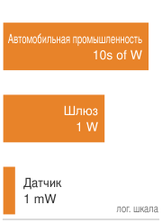
Энергетические бюджеты трёх периферийных уровней охватывают около четырёх порядков величины.
OTA-обновления моделей — это способ эксплуатации достигать физически недоступных устройств. OTA-конвейерам требуется защищённое распространение моделей, верификация артефактов и механизмы отката; дельта- или разностные обновления позволяют сократить объём передачи, когда устройство не обязано получать полный артефакт модели. Отказобезопасный дизайн OTA у детектора ключевых слов использует двухбанковую флеш-память — паттерн, распространённый на микроконтроллерных и встраиваемых платформах. Устройство продолжает работать из банка A, пока кандидатная модель и среда исполнения записываются в банк B. После переключения на банк B первыми инференсами управляют аппаратный сторожевой таймер и самотест после обновления. Если новая модель вызывает ошибки памяти, зависания или нарушает бюджеты задержки, загрузчик автоматически возвращает исполнение в банк A, не давая физически недоступным устройствам превратиться в кирпич. Планирование обновлений должно учитывать паттерны связности устройства, наличие энергии и операционную критичность.
Мониторинг и координация уровней должны умещаться в те же бюджеты энергии и пропускной способности. Поскольку непрерывный поток данных разрядил бы батарею, лёгкая телеметрия сообщает компактные эксплуатационные счётчики (задержку инференса, потребление энергии и индикаторы точности) вместе с сигналами здоровья уровня устройства (термический статус, уровень батареи и качество связности), которые предсказывают потребность в обслуживании до отказа узла. При изменении локальной нагрузки или качества канала координация «периферия–облако» может выгрузить более тяжёлый инференс на шлюз, где кэширование признаков избавляет от избыточных вычислений. Федеративное обучение позволяет периферийным устройствам передавать обновления модели, а не сырые обучающие записи, а Технические методы защиты приватности развивает меры защиты приватности, которые таким обновлениям всё равно нужны.
Плавная деградация — ключевой эксплуатационный паттерн Edge AI. Когда термические лимиты или разряд батареи ограничивают ёмкость аппаратуры, периферийные среды исполнения должны динамически сбрасывать нагрузку (понижая частоту дискретизации входных сэмплов, пропуская необязательные стадии обработки или откатываясь к неглубоким эвристическим моделям) в рамках политики отката, валидированной под требования приложения к безопасности и качеству. Каждый из этих механизмов — на устройстве и в облаке — резервирует ресурсы под версию, обслуживающую мало или совсем никакого трафика, и размер этого резерва зависит от режима рабочей нагрузки.
14.4.5 Память и вычисления механизмов контроля релизов
Каждый механизм в этом разделе удерживает вторую версию модели живой, и для модели, ограниченной ёмкостью, именно эта вторая версия, а не дополнительная арифметика, становится доминирующей статьёй затрат (Таблица 11). Теневое развёртывание оценивает каждый запрос дважды. Канареечное развёртывание, A/B-тест и переключение blue-green не добавляют работу, а перенаправляют трафик, тем не менее каждый из них обязан держать полные таблицы эмбеддингов кандидата в памяти ускорителей, какую бы долю трафика он ни обслуживал, поскольку любой запрос из этой доли может обратиться к любой строке этих таблиц. Горячий резерв для немедленного отката держит предыдущую версию по той же причине. Канареечный релиз ранжирующего сервиса с долей 5 percent поэтому удваивает ускорители, удерживающие таблицы, — с 2 до 4, — обслуживая при этом лишь одну двадцатую запросов. Сервис на основе ResNet-50, ограниченный вычислениями, платит наоборот. Его 51.1 MB весов FP16 умещаются рядом с обслуживающей копией на одном ускорителе, так что его канарейка почти ничего не стоит по памяти и несёт лишь свою долю вычислений. Двухбанковое обновление детектора ключевых слов стоит флеш-памяти, а не памяти ускорителей: второй банк 200 KB, доводящий долю модели в 4 MB флеш-памяти устройства до 400 KB.
| Механизм контроля релизов | Дополнительная резидентная память | Дополнительная работа по инференсу | Что это даёт |
|---|---|---|---|
| Теневое развёртывание | Вторая копия таблиц (100 GB); 2 |
Каждый запрос оценивается дважды | Сравнение выходов и задержки без экспозиции для пользователей |
| Канареечное развёртывание (5% трафика) | Вторая копия; 2 |
Нет; доля запросов перенаправляется | Живые свидетельства качества на ограниченной доле пользователей |
| A/B-тест | Вторая копия; 2 |
Нет; трафик делится между вариантами | Статистически валидное сравнение исходов |
| Переключение blue-green | Полная вторая среда; 2 |
Дублированная провижиненная ёмкость на время переключения | Откат единственным изменением маршрутизации |
| Горячий резерв | Прежняя версия в резидентной памяти; 2 |
Нет до самого отката | Немедленный откат без холодного старта |
| Двухбанковое обновление KWS | Второй флеш-банк (200 KB в 4 MB флеш-памяти) | Нет | Автоматический возврат после неудавшегося обновления |
Контрольная точка 14.2: Свидетельства готовности к выпуску
Доставить модель в продакшен и вернуть её обратно — лишь половина эксплуатационной задачи. Успешно выпущенная модель всё ещё может деградировать из-за сдвига распределения или испорченных признаков на входе, не порождая ошибок во время исполнения, и ни один из описанных выше механизмов этого не заметит. Производственный мониторинг поставляет свидетельства, которые сообщают команде, что релиз, откат или запуск переобучения вообще необходимы.
14.5 Мониторинг в промышленной эксплуатации
Новая выведенная в продакшн ранжирующая модель может пройти канареечную проверку в понедельник и потерять пять пунктов точности к четвергу, когда миграция каталога у апстрим-поставщика или промоакция конкурента изменит живой пользовательский трафик, при том что все датчики HTTP и GPU остаются зелёными. Развёрнутая модель теряет точность с такой скоростью, которую нужно измерять, а не предполагать. Каждое решение, оставленное в операционном цикле (переобучить, откатить или подождать), опирается на свидетельства, которые может дать только мониторинг в продакшне, — включая скорость деградации, под которую должны подстраиваться экономика переобучения из Глава 14.6. Сервис машинного обучения корректен лишь до тех пор, пока его живые входные данные напоминают те, на которых он обучался; по мере их изменения (тихая деградация из Когда МЛ-системы выходят из строя незаметно) предсказательное качество может снижаться. Мониторинг — это шаг обнаружения в операционном цикле и работающий интерфейс мониторинга продакшна, и он делает этот риск наблюдаемым. В паре с поэтапным развёртыванием мониторинг входов и результатов позволяет командам расследовать сбойную версию и ограничить её влияние, пока свидетельства накапливаются.
14.5.1 Телеметрия инфраструктуры и загрузка аппаратного обеспечения
Когда дежурному инженеру приходит алерт о скачке p99-задержки на сервисе ранжирования, единственный датчик занятости GPU не может сказать, чем занят ускоритель. Он может быть насыщен вычислениями, буксовать на выборках из памяти таблицы эмбеддингов, сбрасывать частоты из-за нагрева или простаивать, пока хостовый поток ждёт хранилище признаков. В продакшне сбои обслуживания охватывают как немедленные аппаратные узкие места или узкие места на пути запроса, так и постепенный дрейф распределений. Разделить их позволяют два различных слоя телеметрии. Инфраструктурные метрики показывают, упирается ли система обслуживания в вычисления, память или ввод-вывод, а статистические метрики и метрики результатов отслеживают, остаются ли предсказания точными.
Первый слой — мониторинг уровня инфраструктуры — отслеживает активность CPU и GPU, пропускную способность памяти, потребление диска, сетевую задержку и доступность сервиса. Поскольку одиночный счётчик утилизации не может отделить арифметическое насыщение от заторов в памяти или хостовом конвейере, операторы сопоставляют времена исполнения ядер с утилизацией пропускной способности памяти и глубинами очередей входного конвейера по узлу.
Метрики энергоэффективности (например, инференсы на джоуль или FLOP/s/W в зависимости от рабочей нагрузки) добавляют нормированный по затратам взгляд, позволяющий планировать смешанные нагрузки. Мониторинг температур также информирует операционное планирование, особенно под длительной высокой нагрузкой, когда троттлинг из-за нагрева (thermal throttling) заставляет аппаратные частоты снижаться, порождая всплески хвостовой задержки, нарушающие SLO. Телеметрический конвейер MLOps включает метрики запаса по температуре, чтобы направлять трафик по доступным ускорителям до наступления троттлинга. Движки временных рядов, такие как Prometheus18 (Cloud Native Computing Foundation 2024 г.b), Grafana (Labs 2024 г.) и Elastic (Elastic NV 2024 г.), собирают и визуализируют эти операционные метрики по всему парку обслуживания.
Аппаратные счётчики локализуют узкое место внутри ускорителя, но регрессия задержки часто возникает в другом месте на пути запроса. Планирование запросов, формирование батчей и выбор среды исполнения относятся к системе обслуживания, и Бюджет задержки показывает, что инференс модели — лишь один срез сквозной задержки, причём часто не самый большой (принцип «Принцип бюджета задержки»). Эксплуатация использует эту декомпозицию как диагностический инструмент. Когда p99 деградирует, поэтапные тайминги — сеть, извлечение признаков, парсинг, инференс и сериализация — говорят дежурному инженеру, какой этап сдвинулся, а значит, какой фикс и какой команде нужен этот инцидент. Без трассировки по этапам всякая регрессия задержки выглядит как проблема модели, а рефлекторные ответы — откат или дальнейшая квантизация — не могут вернуть время, потерянное в хранилище признаков или сетевом хопе (принцип «Закон Амдала»).
Сервировочная конечная точка вносит два из этих этапов — парсинг и сериализацию — и её модель ёмкости добавляет третий при масштабировании до нуля. Затраты на протокол и сериализацию развиваются в Интерфейсные протоколы и сериализация, а холодный старт, который ёмкость scale-to-zero оплачивает после каждого простоя, — в Холодный старт и динамика инициализации. Эксплуатация наследует оба как этапы для трассировки, чтобы регрессия в любом из них не была принята за проблему модели.
Характер загрузки аппаратного обеспечения
Стандартные административные метрики утилизации GPU, такие как показание nvidia-smi, сообщают долю времени, когда ядро исполняется, а не долю достигнутой пиковой арифметической пропускной способности. Выявление узких мест проводит это различие между временем занятости и утилизацией FLOP модели (MFU). Поэтому выборки несмежных эмбеддинг-векторов в сервисе ранжирования могут держать высокое показание утилизации, при том что все резидентные варпы буксуют на памяти, и зелёный датчик на операционной панели ничего не говорит об эффективности вычислений.
↩︎ Аналитическая модель, разделяющая вычислительно-ограниченное исполнение и насыщение пропускной способности памяти по арифметическим интенсивностям, изложена в Границы производительности.
Различить вычислительное исполнение и заторы в памяти или конвейере позволяет измерение достигнутой арифметической пропускной способности наряду с утилизацией пропускной способности памяти и насыщением ввода-вывода. Таблица 12 даёт иллюстративные скрининговые паттерны. Здесь утилизация GPU — это время активности ядра; для проверки предполагаемого узкого места нужны измеренная скорость FLOP, трассы исполнения и соответствующие счётчики заторов:
| Паттерн | Утилизация GPU | Утилизация пропускной способности памяти | Стратегия оптимизации |
|---|---|---|---|
| Возможный предел вычислений | >85% | <70% | Проверить достигнутую скорость FLOP; рассмотреть более быстрые ядра или вычислительную ёмкость |
| Возможный предел пропускной способности | 50–85% | >85% | Проверить трафик и заторы; рассмотреть квантизацию или доступ к памяти |
| Возможный предел входа | <50% | <50% | Трассировать голодание по входу, прежде чем менять prefetch или хранилище |
| Голодный батч | Переменная (пики) | Переменная | Динамическое формирование батчей, очереди запросов на одном сервере |
Каждый кандидат соотносится с членом железного закона систем машинного обучения (принцип «Железный закон ML-систем»), который записывает время исполнения как член памяти, член вычислений и фиксированные накладные расходы на задержку. Сигнатура вычислительной ограниченности указывает на член вычислений
Цели утилизации различаются по рабочим нагрузкам. Батчевое обучение и батчевый (статический) инференс, допускающий очереди и офлайн-планирование, может работать выше 80–85 процентов времени активности ядра, пока команда измеряет полезную пропускную способность. Онлайн-инференс вместо этого нацелен на 50–70 процентов измеренной устойчивой ёмкости при медианной нагрузке, удерживая запас, чтобы всплески не каскадировались в таймауты p99 (Теория очередей). Эти цифры — диагностические отправные точки, а не пороги, потому что время активности ядра и спрос относительно ёмкости имеют разные знаменатели. Для обслуживания больших языковых моделей (LLM) утилизация KV-кэша на каждом узле — хранилища прошлого состояния внимания по каждому запросу — столь же важный сигнал планирования ёмкости. Это важно потому, что у предела планировщик вынужден ставить запросы в очередь или отклонять их, ужимать батчи или сокращать допустимый контекст (Память и KV-кэш оценивает размер кэша и планирует его).
Телеметрия утилизации и памяти также питает число, которое видит бизнес. Стоимость инференса — почасовой счёт за ускорители, делённый на устойчивую пропускную способность, — определяется и вычисляется в Стоимость инференса на разном оборудовании. Эксплуатационно она принадлежит той же панели, что и сигнатуры утилизации из Таблица 12, потому что растущая стоимость тысячи инференсов при постоянном тарифе часто является первым видимым симптомом эрозии эффективности (меньшие эффективные батчи, сдвиг в смеси трафика или регрессия, остающаяся внутри SLO по задержке).
Алерты превращают эти сигналы во вмешательство до того, как тихая деградация достигнет потребителей ниже по потоку. Инфраструктурные алерты сигнализируют о насыщении памяти, троттлинге из-за нагрева или деградации пропускной способности сети, а устойчивое падение качества модели запускает расследование дрейфа. Задержка этих алертов определяет окно необнаруженного сбоя, и каждый алерт должен фиксировать версию модели, затронутую подгруппу входов и запустившее окно агрегации, чтобы реагирующие могли изолировать и воспроизвести состояние сбоя. Однако даже когда все датчики оборудования и задержки остаются зелёными, сами предсказания всё ещё могут деградировать.
Пример 14.2: Мониторинг рекомендаций в масштабе
Сценарий: Рассмотрим сервис ранжирования при высокой пропускной способности: задержка в пределах SLO, а качество рекомендаций снизилось по мере изменения поведения пользователей.
Диагноз: Традиционные инфраструктурные метрики (утилизация CPU, частоты HTTP-ошибок) оставались зелёными, тогда как CTR на уровне когорт падал. CTR считает, как часто пользователи кликают на показанное им, тогда как точность предсказания кликов сервиса ранжирования оценивает каждое предсказание по тому, был ли его элемент реально кликнут. Поэтому снижение вовлечённости мотивирует расследование трафика, конвейеров признаков и поведения ранжирования; оно не устанавливает потерю точности классификации.
Системный урок: Одна лишь инфраструктурная телеметрия не может установить качество рекомендаций. Отслеживание результатов на уровне когорт выявляет локализованные изменения вовлечённости, тогда как для оценки изменений предсказательного качества и их причин нужны согласованные сравнения и зрелые метки.
14.5.2 Статистический мониторинг и обнаружение дрейфа
Даже когда утилизация GPU, пропускная способность памяти и поэтапная задержка комфортно сидят в своих рабочих диапазонах, модель всё ещё может систематически возвращать неверные предсказания, потому что живые пользовательские входы могут дрейфовать от обучающего распределения. Встречается и обратная ошибка — когда неполные данные о результатах делают здоровую модель выглядящей неверной. Инфраструктурная телеметрия показывает, как ведёт себя аппаратура обслуживания; статистический мониторинг показывает, остаются ли предсказания модели корректными, отслеживая метрики оценки, такие как точность, полнота, precision и сдвиги матрицы ошибок (изменения того, как часто каждый истинный класс предсказывается как каждый другой класс) (scikit-learn developers 2024 г.) по живым потокам предсказаний. Юнит-тесты могут проверять детерминированные компоненты, но сами по себе не могут установить популяционное предсказательное качество, которое должно оцениваться статистически. Мониторинг реализует наблюдаемую деградацию (Глава 14.1.1), превращая это теоретическое ограничение в операционную практику. Без непрерывного статистического мониторинга и более глубокой наблюдаемости, которую он даёт (способности выводить внутреннее состояние из выходов), командам не хватает свидетельств, чтобы отличить здоровую модель от незамеченной регрессии.
Этим метрикам качества требуется соединение предсказаний с результатами при фиксированном горизонте оценки. Рассмотрим конверсионную модель, чей лог предсказаний записывает идентификатор запроса, время предсказания, оценку и неизменяемую версию, реально обслужившую запрос. Лог результатов записывает тот же идентификатор, время события и время наблюдения. Для старого запроса, обслужившегося предыдущей версией, событие покупки в пределах горизонта даёт положительную метку после наблюдения; завершённое окно наблюдения без покупки даёт отрицательную метку — при условии полноты сбора результатов. Недавний запрос, обслужившейся кандидатом без записанной покупки, остаётся ожидающим, пока не истекут его горизонт и допустимая задержка отчётности. Отсутствие записи о покупке, пока это окно открыто, — это неизвестное состояние, а не отрицательный результат. Соединение по идентификатору и сохранение атрибутов обслужившей версии атрибутирует каждый завершённый результат модели, сделавшей предсказание, а не той, что развёрнута в момент прихода метки.
Сравнение качества группирует предсказания по периоду обслуживания и версии, затем оценивает когорты, чьи окна результатов созрели, при одном и том же горизонте и политике отчётности и сопоставимых условиях трафика. Каждая метрика и срез должны сообщать покрытие метками — долю подходящих предсказаний с разрешёнными результатами. Видимое падение, вызванное сравнением ожидающих результатов кандидата с завершёнными результатами предыдущей версии, не оправдывает переобучение; оно требует завершить окно или починить сбор результатов. Даже зрелое окно может содержать селективные метки — результаты, существующие только для случаев, на которых система решила действовать: клики записываются только для показанных рекомендаций, вердикты о мошенничестве — только для проверенных транзакций. Проверки покрытия и политики сбора должны сопровождать оценки неопределённости, прежде чем регрессия качества поддержит диагноз и решение о переобучении.
Зрелая, хорошо покрытая метрика качества всё ещё может скрывать медленное снижение, потому что постепенная долгосрочная деградация ускользает от грубых порогов обнаружения. Малые день за днём изменения метрики качества складываются в существенную деградацию за год, не сработав ни разу для месячных алертов. Сезонные паттерны усугубляют эту сложность; модель, обученная летом, может хорошо работать всю осень, но отказать в зимних условиях, которых она никогда не видела. Обнаружение такой постепенной деградации требует мониторинга на нескольких временных масштабах: базовые линии производительности по нескольким горизонтам (день, неделя, квартал), сравнения скользящих окон, выявляющие медленные тренды, и сезонные профили, учитывающие циклические вариации.
Статистический мониторинг должен разделять две оси сдвига распределения,19 потому что они различаются тем, что монитор может наблюдать без ground-truth-меток. Три вида сдвига, определённые для конвейера данных в Обнаружение дрейфа данных и реакция на него, где проработанным случаем является смена микрофона споттера ключевых слов, ложатся на эти две оси. Первая ось — дрейф данных, объединяющий ковариатный сдвиг и сдвиг меток. Ковариатный сдвиг20 меняет распределение входов
Concept drift — изменение связи между входами и метками
Эксплуатация добавляет одно различие, которое сами определения не проводят. Деградация модели — это наблюдаемое со временем снижение качества предсказаний при неизменном коде модели, и дрейф данных — лишь одна из её возможных причин наряду с concept drift и изменениями окружающего конвейера. Мониторинг только выходов модели может пропустить дрейф входов или принять безобидное изменение выходов за потерю качества, поэтому эксплуатация отслеживает также статистику входных признаков, стоящую за расхождением
Сигнатура дрейфа данных в живой телеметрии — это распределение признака, движущееся синхронно с метрикой качества, и три синхронизированных уровня телеметрии, выровненных по времени, показывают, как ковариативный сдвиг подтачивает качество модели (Рисунок 8). В верхней панели дискретные выборки запросов переходят от преимущественно зелёных (онлайн-продажи) к оранжевым (продажи в магазинах). Метки «online store» и «offline store» на рисунке обозначают каналы продаж, а не уровни хранилища признаков (feature store) из Глава 14.3.1.1. Средняя панель отражает этот сдвиг как расширяющуюся офлайн-область в распределении признака sales_channel, что напрямую соответствует резкому падению кривой точности модели в нижней панели. Эта временная согласованность мотивирует сопоставление распределений входных признаков с метриками исходов; их совместное движение даёт диагностическую гипотезу, но само по себе не устанавливает причину.
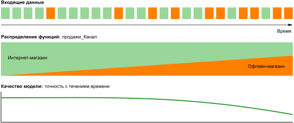
Задержка обнаружения дрейфа — то, насколько быстро статистический тест может подтвердить снижение предсказательного качества, — ограничивает возможности статистического мониторинга. Скорость подтверждения определяется скоростью поступления выборок и требованиями статистической мощности. Сервисы с низким трафиком могут ждать дни или недели, чтобы накопить достаточно размеченных исходов и отличить действительное снижение качества от стохастического шума. Ни один инструмент не устраняет этот разрыв, потому что изменение не может быть подтверждено быстрее, чем поступают размеченные примеры. Поэтому архитектуры мониторинга должны держать две оси раздельно. Дрейф данных можно оценить по достаточному количеству неразмеченных выборок, тогда как concept drift, как правило, требует размеченных исходов. Ни одна статистическая оценка не даётся мгновенно.
Скорость обнаружения дрейфа ограничена скоростью поступления выборок.
Инженерный расчёт 14.2: Задержка обнаружения дрейфа
Задача: модель с точностью 95 percent может упасть на 5 percentage-point. Политика мониторинга закладывает бюджет в 1,000 размеченных примеров. Расчёт статистической мощности того же вида, что и Уравнение 4, задаёт минимум, необходимый такому тесту. Бюджет — это выбор политики сверх этого нижнего предела, добавляющий запас на шум меток, зависимость между исходами и проверки по отдельным срезам. Вычислите длительность набора данных для сценариев с высокой и низкой скоростью поступления.
Расчёт:
- Бюджет свидетельств: 1,000 размеченных примеров.
- Случай высокой скорости: при 1 размеченного исхода в секунду сбор занимает 1,000 seconds ≈ 16.7 minutes.
- Случай низкой скорости: при 100 размеченных исходов в день сбор занимает 10 days.
Системный вывод: обнаружение ограничено скоростью поступления размеченных исходов, которая может сильно отставать от трафика. Домены с низким объёмом данных или запаздывающими метками могут требовать дни или недели, поэтому системы с высокой ценой ошибки дополняют статистический мониторинг проактивным аудитом модели.
Задержка обнаружения имеет прямую стоимость. Когда тихий отказ сохраняется до следующей проверки, каждый день задержки — это потерянная выручка, что и составляет экономический аргумент в пользу автоматического обнаружения дрейфа.
Инженерный расчёт 14.3: Стоимость тихих отказов
Задача: стоит ли инженерных усилий создание системы автоматического обнаружения дрейфа?
Сценарий: рассмотрим движок рекомендаций товаров, приносящий $50M годовой выручки. Модель отказа: ошибка развёртывания вызывает расхождение обучения и обслуживания (training-serving skew), снижая качество рекомендаций на 5 percent. Это пропорционально ухудшает конверсию.
Допущения: инцидент начинается сразу после плановой проверки, остаётся обнаружимым к следующей проверке и завершается эффективным исправлением сразу после обнаружения. Поэтому расчёт сравнивает почти полные задержки интервала проверки, а не ожидаемые времена обнаружения инцидентов, возникающих в течение интервала. Не учитываются задержка меток, а также время диагностики и восстановления.
Анализ стоимости:
- Ручная эксплуатация (ежемесячная проверка):
- Время обнаружения: ~4 weeks (28 days).
- Потеря выручки: $50M
0.05 28 days/365 days ≈ $191,781.
- Автоматизированный MLOps (ежедневные проверки):
- Время обнаружения: 1 day.
- Потеря выручки: $50M
0.05 1 day/365 days ≈ $6,849.
Системный вывод: при этих допущениях о времени и восстановлении один тихий отказ при ежемесячной проверке обходится на $184,932 дороже. За 4 incidents/year этого сценария ежедневные проверки позволяют избежать почти $739,726 годовых потерь. Операционный бюджет должен вместо этого опираться на измеренное время от начала инцидента до эффективного восстановления, включая сбор свидетельств, диагностику и смягчение последствий. Более раннее оповещение экономит деньги лишь тогда, когда оно позволяет раньше снизить вред.
Мониторинг качества данных
Ожидание меток — не единственный вариант, потому что многие тихие отказы начинаются как дефекты самих входов и могут быть перехвачены на входной границе до того, как будет выполнено предсказание. Статистика дрейфа выявляет смещённые входы, а метрики исходов устанавливают, снизилось ли качество предсказаний, однако к тому времени, когда деградируют нижестоящие бизнес-метрики, порча данных выше по потоку может сохраняться уже дни или недели. Мониторинг качества данных выявляет эти входные дефекты до того, как произойдёт инференс, тогда как мониторинг выходов и исходов подтверждает, ухудшают ли сдвиги распределений точность предсказаний. Первый входной защитный барьер — исполняемая валидация: Список 3 иллюстрирует схемные ожидания, отвергающие некорректные батчи до инференса, превращая неявные допущения о данных в принудительно проверяемые правила.
schema.require_column("user_id")
schema.require_type("timestamp", "datetime")
schema.require_non_null("feature_a")
schema.require_range("age", min_value=0, max_value=120)
schema.require_mean_between(
"purchase_amount", min_value=10, max_value=1000
)Валидация входных данных
Валидация по схеме21 выявляет структурные дефекты на этапе приёма данных. Такие проверки контролируют наличие столбцов, строгую типизацию данных, ограничения на null-значения и инварианты числовых границ.
Мониторинг распределений признаков
Валидация по схеме обнаруживает структурную порчу данных (отсутствующие столбцы, неверные типы, null-значения), но не способна заметить более тонкий режим отказа, когда данные приходят в корректном формате, но со смещённого распределения. Признак, отражающий возраст пользователя, может пройти все проверки схемы, в то время как его среднее значение за три месяца незаметно сместится с 32 до 45 из-за того, что маркетинг привлекает более старшую аудиторию. Такой сдвиг распределения может изменить точность модели, не порождая структурной аномалии; чтобы определить его эффект, нужны размеченные исходы.
Статистические меры расстояния количественно оценивают такое расхождение, сравнивая распределения на этапе обслуживания (serving) с базовыми распределениями обучающей выборки; распространены четыре из них. Индекс стабильности популяции (PSI)22 подходит для категориальных и биннированных признаков, а статистика Колмогорова — Смирнова (KS) из экрана проверки распределений CI/CD — для непрерывных. Дивергенция Йенсена — Шеннона даёт симметричное ограниченное сравнение вероятностных распределений, а расстояние Вассерштейна, также называемое дистанцией землеройной машины, измеряет, какая масса вероятности и на какое расстояние должна переместиться, чтобы одно распределение превратилось в другое. Для каждой меры нужен порог срабатывания оповещения, и выбор этого порога сложнее, чем кажется.
Попарные сравнения признаков могут пропустить изменения в том, как признаки встречаются совместно. Рассмотрим два бинарных датчика-флага. В обучающей популяции равные группы имеют оба флага выключенными или оба включенными; в популяции обслуживания равные группы имеют один флаг включенным, а другой выключенным. Каждый флаг по отдельности включен и выключен одинаково часто, так что его индивидуальная гистограмма не изменилась, но связь между флагами инвертировалась. Даже идеальный паритет признаков между обучением и обслуживанием не выявил бы это изменение популяции. Мониторинг избранных комбинаций признаков, релевантных когорт или статистики совместного распределения дополняет маржинальные экраны; для определения того, вредит ли изменение предсказаниям, по-прежнему нужны размеченные исходы.
В высоконагруженном производственном мониторинге одна лишь статистическая значимость — неадекватная политика оповещений. На больших выборках тесты вроде двухвыборочного теста Колмогорова — Смирнова или критерия хи-квадрат (стандартного теста различий категориальных частот) способны обнаруживать малые подлинные различия, не имеющие операционного значения. Механизм — член размера выборки в критическом значении теста. Критическое значение KS
Поэтому производственный мониторинг сочетает меры расстояния между распределениями с учётом неопределённости и операционными порогами. Индекс стабильности популяции, определённый для конвейера данных в Обнаружение дрейфа данных и реакция на него, — симметричный вариант дивергенции Кульбака — Лейблера, вычисляемый по
: ниже порога предупреждения этой политики; продолжать мониторинг исходов и критических срезов. : диапазон предупреждения; исследовать изменения популяции и поведение восходящего конвейера. : диапазон эскалации; уведомить ответственную команду согласно калиброванной политике критичности сервиса. Диагностика определяет, требуется ли вмешательство.
Производственным мониторам необходима документированная политика нулевых бинов, например сглаживание Лапласа (добавление малого счётчика в каждый бин), потому что любой пустой бин в знаменателе даёт неопределённый логарифм, и они должны сохранять фиксированные границы бинов между периодами сравнения. PSI — сигнал дрейфа, а не автоматический триггер дообучения, поскольку само по себе расхождение не доказывает, что точность изменилась (принцип «Диагностика статистического дрейфа»). Каждый порог — будь то диапазон PSI или отсечка KS — должен калиброваться для каждого признака с учётом размера выборки и стоимости пропущенного дрейфа, потому что сдвиг, отчётливо видимый на гистограмме, всё ещё может давать малое агрегированное значение.
Сервис ранжирования мониторит возраст пользователя как входной признак, и сдвиг в сторону более старших когорт даёт побиновую декомпозицию PSI, показанную в Таблица 13:
| Возрастной бин | Обучение | Обслуживание | Разность | ln(Обслуживание/Обучение) | Вклад |
|---|---|---|---|---|---|
| 18–25 | 15% | 12% | -0.03 | -0.223 | 0.0067 |
| 26–35 | 25% | 22% | -0.03 | -0.128 | 0.0038 |
| 36–45 | 20% | 18% | -0.02 | -0.105 | 0.0021 |
| 46–55 | 18% | 20% | +0.02 | +0.105 | 0.0021 |
| 56–65 | 12% | 15% | +0.03 | +0.223 | 0.0067 |
| 66+ | 10% | 13% | +0.03 | +0.262 | 0.0079 |
Сумма шести бинных вкладов даёт суммарный PSI, равный 0.029. Столбец разностей выражен в долях единицы, поэтому сдвиг на 3 percentage-point выглядит как
↪ Дивергенция Кульбака — Лейблера, её асимметрия и разобранный пример дрейфа, вычисляющий и KL-дивергенцию, и PSI, собраны для справки в Измерение дрейфа.
Мониторинг свежести данных
Хранилища признаков и конвейеры данных могут устареть, не вызывая явных ошибок. Мониторинг свежести данных ловит именно этот режим отказа, а Список 4 показывает конфигурацию, которая следит за свежестью признаков и запускает резервное поведение при устаревании данных.
user_purchase_history на предмет устаревания, оповещает команды эксплуатации через PagerDuty и Slack и переключается на значения по умолчанию, когда возраст признака превышает максимально допустимый.
# Example freshness alert configuration
feature: user_purchase_history
max_staleness: 6h
alert_channels: [pagerduty, slack]
on_stale:
action: fallback_to_default
default_value: []Политика свежести превращает устаревание из незаметного дефекта данных в явный резервный сценарий. Та же связка детектора с реакцией должна покрывать каждый уровень стека мониторинга, включая восходящие зависимости, питающие ML-систему: лаг репликации базы данных, водяные знаки приёма данных в хранилище признаков и статус завершения конвейера. В одном иллюстративном инциденте рекомендательный сервис обнаружил существенный сдвиг в признаке user_lifetime_value в течение двух дней и проследил аномалию до миграции базы данных, незаметно изменившей окно агрегации. Без мониторинга распределений на входном слое такая восходящая порча данных деградирует предсказания модели неделями, прежде чем метрики истинных исходов выявят отказ.
14.5.3 Модель стоимости мониторинга
Каждый уровень этого стека стоит денег, и первая статья расходов — сама телеметрия. Сбор этих сигналов в производственном масштабе порождает жёсткие сетевые и дисковые ограничения, потому что захват несжатой телеметрии по каждому запросу способен насытить ту самую сетевой fabric, которая обслуживает модель. Эти накладные расходы вынуждают идти на сознательный компромисс между гранулярностью мониторинга и операционными расходами на инфраструктуру.
Инженерный расчёт 14.4: Экономика наблюдаемости
Компромисс: «измерять всё» экономически неосуществимо в масштабе. Пусть
Таблица 14: Выборка трейсов и стоимость наблюдаемости: Сохранение одного трейса из 60 даёт разницу в объёме данных в 60× при 1M req/s, исходя из 1 KB на запрос. Интервалы батчирования не являются причиной снижения.
Продукт — это операционная ставка расходов, а не разовая стоимость настройки.
Полные и выборочные объёмы данных телеметрии следуют из одной и той же двухшаговой арифметики. При полной детализации телеметрия каждого запроса попадает в поток: 1M req/s
| Выборка (sampling) | Детализация | Объём данных (1M req/s) | Влияние на стоимость |
|---|---|---|---|
| Все трейсы | Микровсплески | ~1 GB/s | Высокое (нужен выделенный кластер) |
| 1 из 60 трейсов | Тренды | ~16.7 MB/s | Ниже (зависит от политики) |
Системный инсайт: Делайте выборку по исходу, а не равномерно. В разобранном случае сохраняется один трейс из 60 независимо от исхода; производственная политика сохраняет 100 percent ошибок и лишь 1 percent успешных запросов, поскольку ошибки редки и несут основную диагностическую ценность. Отслеживайте агрегированные счётчики каждые 1 s и компактные приближённые сводки (sketches) по высококардинальным меткам — то есть тем, у которых много различных значений, например идентификаторы пользователей, — каждые 60 s. Приведённые ниже компоненты стоимости превращают эти решения в месячный бюджет для одного узла.
Одна лишь политика выборки меняет объём телеметрии в 60× раз (ноутбук 14.4), а Уравнение 5 оценивает приём и хранение этого объёма. Полный бюджет должен также учитывать запросы к дашбордам и вычисление правил оповещений, а затем сопоставить итог с инцидентами, которые предотвращает мониторинг.
Компоненты стоимости
Затраты на мониторинг распадаются на четыре категории. Уравнение 6 сохраняет приём и хранение — два слагаемых из Уравнение 5 — отдельными строками и добавляет два новых:
Четыре слагаемых
| Компонент | Иллюстративная удельная стоимость | Множитель масштабирования |
|---|---|---|
| Приём метрик | $0.10–0.50 за миллион точек данных | |
| Хранение логов | $0.50–2.00 за ГБ/месяц | |
| Вычисления запросов | $0.01–0.05 за запрос | |
| Вычисление оповещений | $0.001–0.01 за проверку |
Инженерный расчёт 14.5: Бюджет мониторинга одной модели
Задача: Рассчитать месячную стоимость приёма метрик, хранения временных рядов и вычислений для запросов, необходимую для мониторинга одного ML-узла при производственных предположениях.
Переменные:
- одна модель с 3 вариантами развёртывания (production, canary, staging), каждый из которых публикует 50 метрик
- Метрики снимаются каждые 15 seconds
- Требование к хранению: 30 days
- 2 дашборда (здоровье модели, инфраструктура), 3 члена команды, обновление 5-minute
Приём метрик:
- Точек данных в месяц: 3
50 (4 samples/min 60 24 30 days) = 25.9M - Стоимость при $0.30/million: $7.8/month
Хранение:
- При 8 байтах/точку в сжатом виде: 25.9M
8 байт = 0.2 GB - Стоимость при $1/GB: $0.21/month
Вычисления для запросов:
- Запросов в месяц: 2 дашборда
3 пользователя (12 queries/hour 8 hours/day 22 days) = 12,672 queries/month - Стоимость при $0.02/query: $253.4/month
Итого: ~$261.4/month для одного ML-узла. Вычисление оповещений и накладные расходы платформы исключены.
Системный инсайт: При таких предположениях стоимость линейно масштабируется с числом одинаковых узлов; при масштабе платформы оптимизация стоимости запросов становится всё более важной.
Стратегии оптимизации стоимости
Каждый компонент стоимости в Уравнение 6 соответствует своему инженерному решению. Главный драйвер user_id или request_id умножают число серий в индексах временных рядов, и этот рост перевешивает стоимость сырых вычислений. Удаление ненужных меток или их агрегация в ограниченный набор корзин снижает кардинальность. Хеширование каждого идентификатора в другой различимый идентификатор само по себе число серий не уменьшает. Второй драйвер стоимости хранения — временна́я разрешающая способность. Хранение сырых метрик с интервалом 15-second на протяжении 30 days редко оправдано. Многоуровневая политика хранения (высокодетализированная телеметрия для недавней отладки инцидентов, прореженные агрегаты для анализа исторических трендов) сохраняет диагностическую точность, сокращая хранимый объём. Для
Структура «затраты — выгоды»
Команда обосновывает вложения в мониторинг относительно стоимости инцидентов с помощью соотношения «выгода/затраты» мониторинга в Уравнение 7:
Предположим, что средний инцидент стоит $50,000 (простой, время инженеров и репутация), а мониторинг предотвращает 5 инцидента в год при затратах на мониторинг $50,000:
Эта структура помогает обосновывать вложения в мониторинг и расставлять приоритеты: какие метрики заслуживают детального наблюдения, а какие — грубой выборки.
Самим системам мониторинга также требуется планирование отказоустойчивости, чтобы не допустить операционных «слепых зон». Когда основная инфраструктура мониторинга выходит из строя (Prometheus недоступен или Grafana перестаёт отвечать), команды рискуют действовать вслепую в критические периоды. Поэтому производственные реализации MLOps поддерживают резервные каналы мониторинга, такие как вторичные сборщики метрик, включающиеся при отказе основной системы, и локальное логирование, сохраняющееся при отказе централизованных систем. Надёжные развёртывания следят и за самим наблюдателем. Внешняя сторожевая система проверяет сами конвейеры телеметрии: проверка «сердцебиения» из независимой системы обнаруживает мёртвый конвейер и посылает оповещение по альтернативному каналу уведомлений. Это снижает риск одновременного незамеченного отказа модели и телеметрии — при условии, что альтернативные каналы не разделяют отказавшую зависимость.
Контрольная точка 14.3: Стек мониторинга
Мониторинг ML имеет несколько уровней. Задания этого чек-листа проверяют, можно ли каждый симптом проследить до ответственного уровня.
Многоуровневый мониторинг превращает тихую деградацию в сигналы. Телеметрия инфраструктуры показывает, ограничен ли путь обслуживания вычислениями, памятью или вводом-выводом; проверки входных данных ловят некорректные или устаревшие данные до инференса; статистика дрейфа показывает, что входы сместились; а отложенные метрики исходов подтверждают, стоило ли это смещение точности. Однако сигнал — ещё не отклик. Подтверждение может запаздывать относительно сигнала дрейфа на дни или недели, поэтому каждый сигнал должен достигать именованного владельца с дедлайном на разбирательство, иначе он ждёт на дашборде, пока потери растут. Первое решение, к которому вынуждает сигнал о качестве, — переобучать ли модель: выбор, взвешивающий ценность, которую отнимает дрейф, и стоимость запуска обучения. Оповещения, указывающие на сбой, а не на дрейф, уходят в реагирование на инциденты, которое следует за этим решением.
14.6 Решения о переобучении
Команда, которая переобучает ранжирующую модель при каждом малейшем всплеске PSI, сжигает тысячи долларов времени ускорителей и рискует обучаться на испорченных логах из верхнего контура, тогда как команда, слепо ждущая квартального календарного тика, позволяет точности упасть на 6 пунктов за четыре недели — задолго до наступления следующего тика. Переобучение — самый дорогой ответ, который может выбрать операционный цикл, и при этом самый лёгкий для плохой автоматизации. Мониторинг поставляет два вида свидетельств: расхождение (дивергенцию), которое монитор без меток измеряет непрерывно, и метрики исходов, приходящие позже; шаг decide операционного цикла превращает их в одно из трёх действий: переобучить, откатить или ждать. Решение состоит из трёх частей, рассматриваемых далее по очереди: кандидатные стратегии и проверка того, стоит ли запуск своих затрат прямо сейчас; периодичность, задающая частоту запусков; и сравнение двух политик — фиксированного расписания и триггера, основанного на свидетельствах. В ранжирующем сервисе каждый запуск дополнительно оплачивается часами ускорителей на оборудовании, обслуживающем живой трафик.
Уравнение деградации из Уравнение (1) превращает расхождение в прогноз точности, когда свидетельства исходов это позволяют:
14.6.1 Структура решения о переобучении
Поскольку расхождение распределений предупреждает заранее, не доказывая, сколько точности потеряно, автоматизированный обучающий конвейер всё равно оставляет открытым одно операционное решение: когда запускать. Решение о том, когда переобучать модель, означает балансирование деградации точности против расходов на вычисления и валидацию среди трёх кандидатных политик. Таблица 16 приводит иллюстративные расписания по доменам — от ежедневного переобучения для быстро меняющегося предсказания кликов по рекламе до квартальных обновлений для стабильных приложений медицинской визуализации:
| Домен | Иллюстративное расписание | Обоснование |
|---|---|---|
| Предсказание кликов по рекламе | Ежедневно | Интересы пользователей меняются быстро |
| Выявление мошенничества | Еженедельно | Паттерны атак развиваются непрерывно |
| Прогнозирование спроса | Ежемесячно | Сезонные паттерны меняются медленно |
| Медицинская визуализация | Поквартально | Клинические проявления болезней стабильны |
Такие расписания — стартовые точки, а не неизменные правила. Ранжирующий сервис находится между первыми двумя строками таблицы. Интересы его пользователей меняются ежедневно, однако приведённая ниже экономика помещает его оптимум на несколько дней.
В политике переобучения по расписанию выполнение конвейера идёт по фиксированному календарному ритму (ежедневно, еженедельно или ежемесячно) независимо от входящей телеметрии производительности. Эта стратегия проста в автоматизации и гарантирует периодическое включение свеженакопленных обучающих данных. Однако она сжигает часы ускорителей в спокойные периоды и медленно реагирует, когда сдвиг распределения случается между запланированными интервалами.
Политика переобучения по триггеру инициирует выполнение конвейера, когда системы мониторинга обнаруживают статистический дрейф или деградацию производительности, превышающие заданные пороги. Такой подход может экономить вычисления, реагируя на свидетельства, а не на фиксированное расписание, но он сильно зависит от низколатентных потоков меток или точных прокси-метрик, чтобы избежать запаздывающих реакций или ложных срабатываний переобучения.
Политика непрерывного переобучения обновляет веса модели инкрементально по мере поступления размеченных записей, используя потоковые микро-батчи или алгоритмы онлайн-обучения. Хотя эта стратегия минимизирует задержку устаревания, она усиливает риск валидации, поскольку испорченные, нерепрезентативные или состязательные данные могут отравить параметры модели прежде, чем автоматические детекторы аномалий или инженерные команды успеют вмешаться.
Операционный выбор среди этих стратегий зависит от четырёх физических и операционных ограничений: стоимости вычислений при переобучении, задержки валидационного конвейера, возможности автоматического отката и задержки поступления меток. Переоптимизация модели на многоускорительных узлах влечёт ощутимые энергетические и кластерные затраты. Триггерные политики требуют статистически надёжных прокси-сигналов, когда истинные метки приходят с большой задержкой. Каждый непрерывный развёртывающий конвейер требует надёжных механизмов канареечного развёртывания и отката. Политика должна следовать из этих затрат и задержки меток, а не из привычки.
Экономические и валидационные ограничения становятся исполняемыми в Список 5. Функция решения планирует запуск только тогда, когда оценённая возвращаемая ценность превышает полные затраты запуска (вычисления, валидация, развёртывание и ожидаемая стоимость неудачного раскатывания — четыре слагаемых, которые ниже формализует Уравнение 10). Она также планирует запуск только тогда, когда доступны свежие валидационные данные.
quality_loss = baseline_accuracy - current_accuracy
feature_drift = max(population_stability_index(features))
prediction_shift = distribution_distance(
baseline_predictions, live_predictions
)
benefit = estimate_value_recovered(
quality_loss=quality_loss,
feature_drift=feature_drift,
prediction_shift=prediction_shift,
)
total_cost = (
compute_cost + validation_cost + deployment_cost + rollout_risk
)
if benefit > total_cost and validation_data_is_fresh():
schedule_retraining_run()Правило решения разделяет обнаружение дрейфа и санкционирование переобучения. Дрейф вносит вклад в оценённую выгоду, тогда как свежие валидационные данные и положительное чистое значение определяют, действует ли автоматизация. Чтобы превратить это правило в периодичность, нужно измерить, насколько быстро необучаемая модель теряет ценность.
14.6.2 Количественная экономика переобучения
Чтобы превратить триггерное правило из Список 5 в конкретное расписание, команда должна измерить, насколько быстро необучаемая модель теряет ценность, и взвесить эту скорость потерь против фиксированных затрат запуска. Когда данные исходов позволяют локально экспоненциальную аппроксимацию, подобранная скорость деградации даёт измеримый масштаб времени.23 Его период полураспада,24 — время, за которое подобранная точность падает до половины начального значения, — выражает этот масштаб в интуитивных единицах. Период полураспада ставит развёртывания, деградирующие с разной скоростью, на одну шкалу, но сам по себе не фиксирует экономически оптимальный интервал, который балансирует стоимость устаревания против стоимости запуска. Вывод состоит из трёх шагов: стоимость устаревания, стоимость переобучения и интервал, минимизирующий их сумму на единицу времени.
Функция стоимости устаревания
Точность модели может деградировать со временем, создавая стоимость устаревания. Для экономического планирования команда может аппроксимировать наблюдаемое влияние на стабильном локальном участке экспоненциальным процессом деградации. Здесь
Эта временна́я модель представляет собой представление уравнения деградации (Уравнение (1)) во временной области: она предсказывает точность по расхождению,
Выведенный здесь интервал дообучения использует
Подгонка на более длинном горизонте сходилась бы к нижнему пределу, например к точности на уровне случайного угадывания, а не к нулю. Неподвинутая форма в Уравнение 8 достаточна для интервалов, которые дообучение существует, чтобы соблюдать: режима ранних малых потерь (
Издержки устаревания накапливаются в зависимости от дневного объёма запросов
Интеграл накапливает издержки по времени
Функция стоимости дообучения
Каждое дообучение влечёт фиксированные издержки, включая вычисления, валидацию и накладные расходы на развёртывание. Уравнение 10 раскладывает их на составляющие: total_cost в Список 5.
Оптимальный интервал дообучения
Оптимальный интервал дообучения
При предположении
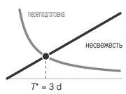
Лучший интервал находится там, где амортизированное дообучение встречается с накопившимся устареванием.
Инженерный расчёт 14.6: Оптимальный интервал переобучения
Постановка задачи: Как часто команде следует дообучать модель, чтобы максимизировать прибыль?
Физика: В этой подогнанной сцене точность модели
: Daily Query Volume (трафик). : финансовая ценность запроса при единичном изменении доли точности. При таком соглашении означает, что 1 процентный пункт точности стоит $0.005 за запрос. Value per Point из Уравнение 3 — та же величина, накопленная за горизонт принятия решения: за запрос, умноженные на число запросов за этот горизонт. : фиксированная стоимость запуска дообучения, включая вычисления и операционные накладные расходы.
Формула: Уравнение 12 даёт интервал
Расчёт: Рассмотрим сервис ранжирования в иллюстративной сцене (
- Трафик
: 1,000,000 запросов ранжирования в день. - Полезность
: $0.50/query при единичном изменении точности. - Стоимость дообучения
: $5,000. - Скорость дрейфа
: 0.24 percent в день.
Системный вывод: Высокий трафик и ценная точность сокращают
С параметрами, собранными в Таблица 17, аппроксимация помещает экономический оптимум около 3 дней. Дрейф сервиса ранжирования — 0.24 percent дневной деградации, подогнанный к наблюдаемому четырёхнедельному спаду, — достаточно медленный, чтобы ежедневный запуск при данной стоимости запуска ещё не окупался. Учетверённый трафик приблизил бы оптимум к 1.5 дней — близко к ежедневному ритму, который Таблица 16 указывает для предсказания кликов по рекламе. Более медленно меняющийся домен или более дорогой запуск сдвинули бы ту же формулу к недельным или месячным строкам таблицы.
| Параметр | Значение | Описание |
|---|---|---|
| 1,000,000 | Запросов ранжирования в день | |
| $0.50/query | Ценность запроса при единичном изменении точности | |
| 0.94 | Начальная точность | |
| 0.0024 | Дневная скорость деградации (0.24% в день) | |
| $5,000 | Полные издержки дообучения |
Анализ чувствительности
В рамках квадратично-корневой аппроксимации
| Изменение | Эффект на |
|---|---|
| 4× стоимости дообучения | 2× длиннее интервал |
| 4× объёма запросов | 2× короче интервал |
| 4× скорости деградации | 2× короче интервал |
Акселераторо-часы и конкуренция за ресурсы
Стоимость запуска
Вместо этого ускорительно-часы имеют значение как ресурс конкуренции. Обслуживающая копия таблиц уже занимает два ускорителя. На узле с восемью ускорителями запуск, который удерживает собственную копию и состояние обучения ещё на четырёх, оставляет место ровно для одной дополнительной копии таблиц на время своего выполнения (Рисунок 9). Эта копия может быть канареечной, теневой или горячим резервом из Таблица 11, но не более чем одной из них. Команда, которая выпускает релизы и переобучает модель на одном и том же узле, должна поэтому планировать эти две задачи так, чтобы запуск переобучения никогда не вытеснял копию, обеспечивающую немедленный откат.
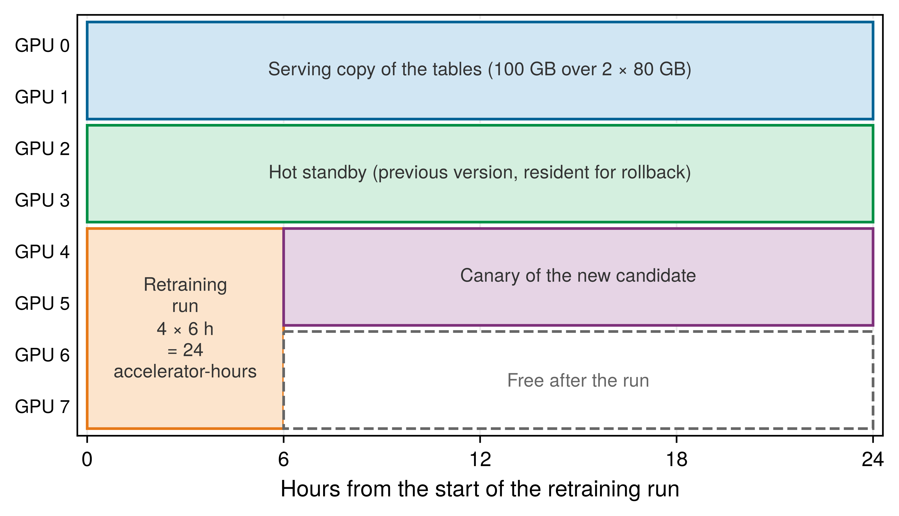
Ограничения модели
Эта замкнутая аналитическая модель даёт приближение первого порядка для операционного планирования, но её полезность зависит от нескольких упрощающих допущений. Во-первых, экспоненциальная формула затухания предполагает постепенный дрейф с постоянной скоростью
14.6.3 Переобучение по расписанию и по триггеру
Интервал, выведенный в Уравнение 12, задаёт календарное расписание на основе среднего дрейфа, тогда как правило принятия решения из Глава 14.6.1 позволяет наблюдаемым данным определять момент запуска. За 365 дней развёртывания рейтингового сервиса две политики вычерчивают разные пилообразные кривые относительно порога дрейфа 0.88 точности (Рисунок 10). При политике по расписанию (оранжевая пила) модель переобучается через жёсткие интервалы 90-day — интервал выбран достаточно большим, чтобы каждый зуб пилы был виден, — и многократно опускается ниже порога качества перед каждым сбросом. Напротив, политика по триггеру (зелёная пила) инициирует переобучение в момент, когда отслеживаемая точность касается порога, иллюстрируя идеализированный мгновенный сброс; на практике триггером часто служит калиброванный по точности сигнал расхождения или прокси-сигнал. Ни один из интервалов не является экономическим оптимумом из Уравнение 12, поэтому рисунок сравнивает, как две политики реагируют на одно и то же затухание, а не рекомендует какой-либо из интервалов. Обе кривые построены по модели временного затухания из Уравнение 8. При развёртывании задержки сбора примеров, поступления разметки, обучения, валидации и выката могут унести точность ниже порога срабатывания до восстановления; политика не гарантирует нижней границы производительности.
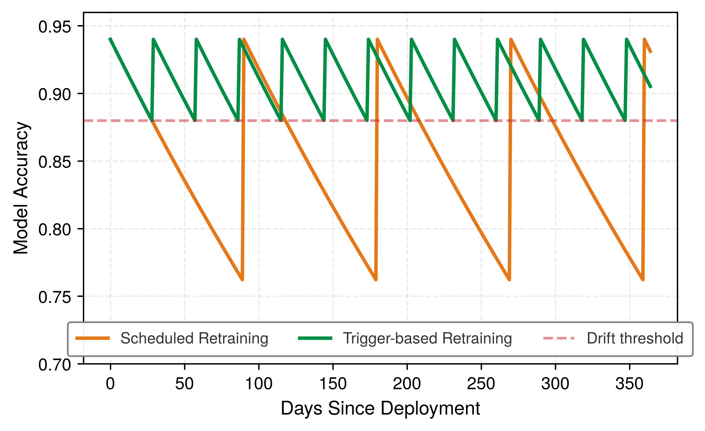
В этой модели с нулевой задержкой политика по расписанию в каждом цикле опускается ниже нижней границы, а политика по триггеру — нет. Переобучение по расписанию легко планировать, но оно может происходить слишком рано или слишком поздно, тогда как переобучение по триггеру требует более сильной телеметрии, но согласует вмешательство с наблюдаемой деградацией. Какая бы политика ни сработала, переобученная замена или откат зависят от происхождения (lineage) в реестре из Глава 14.3.1.2. Это происхождение связывает каждую версию с кодом, данными, гиперпараметрами и весами, из которых она получена, и позволяет дежурному вернуться к известной исправной контрольной точке. Однако происхождение не может гарантировать побитового воспроизведения, если версии драйверов, библиотеки CUDA или недетерминированные ядра редукции различаются между машинами парка.
Переобучение отвечает на постепенный дрейф. Внезапное падение с причиной внутри системы — например, сломанное преобразование признаков, неудачный релиз или повреждённая вышестоящая таблица — требует иного отклика. Отказавший слой должен быть найден и локализован, часто посредством отката, задолго до того, как завершится запуск переобучения, и это работа реагирования на инциденты.
14.7 Реагирование на инциденты и управление
Ранжирующий сервис из начала этой главы привлёк к себе внимание лишь на восьмой неделе, причём заметил это продуктовый менеджер раньше любой системы. Мониторинг дрейфа мог поднять тревогу уже на четвёртой неделе, когда точность упала до 88 percent, но оповещение лишь перемещает проблему. Кому-то затем нужно быстро решить, реален ли сигнал, какая система его вызвала и стоит ли делать откат, а организация уже должна была решить, какие модели разрешено выпускать и кто за них отвечает. Реагирование на инциденты поставляет первый набор решений, управление — второй, а ML Test Score, рассматриваемый вместе с операционной зрелостью (Глава 14.8.1), проверяет, существуют ли оба механизма до того, как сбой испытает их на прочность.
14.7.1 Реагирование на инциденты и операционные практики
Оповещение о дрейфе, за которое никто не отвечает, срабатывающее в пятницу вечером без политики серьёзности, диагностического чек-листа или полномочий на откат, будет лежать в канале Slack до понедельника, пока живой трафик впитывает ущерб. Реагирование на инциденты, отладка и график дежурств образуют человеческую половину операционного цикла — его шаги диагностики и восстановления, превращающие статистический сигнал в инженерное действие за ограниченное время.
Реагирование на инциденты в ML-системах
В два часа ночи дежурный инженер получает оповещение о том, что кликабельность ранжирующего сервиса упала на 12 процентов за последний час. Ни трассировки стека, ни журнала ошибок, ни упавшего процесса — лишь статистический сигнал о том, что что-то изменилось. Отвечающему нужно различить четыре возможные первопричины: сбой вышестоящего конвейера данных, дрейф модели, сезонный характер трафика или статистический шум. Такая неоднозначность типична для ML-инцидентов, симптомы которых могут проявляться как деградация итоговых метрик или метрик предсказательного качества, а не как явные ошибки, поэтому реагирование на инциденты должно учитывать статистическую неопределённость.
Классификация по серьёзности закладывает основу приоритизации реагирования в этой неоднозначной обстановке. Таблица 19 показывает иллюстративную политику одного рекомендательного сервиса со сроками реагирования от 15 минут до 24 часов. Приоритет зависит от затронутого трафика, последствий и потребности в локализации, а не от величины «сырого» сигнала. Поскольку падение CTR само по себе показывает изменение вовлечённости, а не дефект модели, пример P1 дополнительно требует доказательства через воспроизведение (replay) нарушения контракта признака.
| Уровень | Критерии | Время реагирования | Пример |
|---|---|---|---|
| P0 | Сервис недоступен для всего живого трафика | 15 минут | Null-предсказания препятствуют доставке рекомендаций |
| P1 | Широкий вредоносный эффект, требующий локализации | 1 час | CTR падает по всем основным когортам; воспроизведение подтверждает нарушение контракта признака, а отдалённые результаты ещё не получены |
| P2 | Ограниченный эффект при наличии проверенного запасного варианта | 4 часа | Локализованный дефект признака сдержан; владелец исследует оставшуюся зону воздействия и отложенные результаты |
| P3 | Наблюдаемого эффекта или непосредственной опасности нет | 24 часа | Обучение задерживается, тогда как текущий релиз остаётся в пределах измеренных рабочих границ |
После классификации инцидента отвечающие выполняют структурированный рабочий процесс реагирования, при котором срочная локализация может идти параллельно со сбором доказательств, поскольку ущерб продолжает накапливаться, пока причина неизвестна:
- Обнаружение фиксирует, какой сигнал мониторинга, затронутая метрика и порог вызвали оповещение.
- Оценка воздействия количественно определяет долю обслуживающего трафика, пользовательских когорт или нижестоящих сервисов, затронутых инцидентом.
- Сопоставление изменений проверяет недавние развёртывания по весам модели, средам исполнения (runtime) обслуживания, преобразованиям признаков и вышестоящим конвейерам данных.
- Смягчение оценивает и выполняет варианты локализации, включая переброску трафика, включение запасного режима или откат к заведомо исправной контрольной точке.
- Анализ первопричины устанавливает, где возник дефект: в конвейерах данных, представлениях модели или инфраструктуре обслуживания.
Для инцидентов P0 и P1 обязательна документация в формате постмортема. Такие постмортемы разбирают хронологию, первопричины, воздействие на пользователей и меры предотвращения, в частности указывая, какой пробел в мониторинге позволил проблеме добраться до продакшена и какая автоматизированная проверка поймала бы её раньше.
Отладка моделей: от обнаружения к диагнозу
Реагирование на инциденты сортирует и смягчает; отладка моделей находит первопричины. Мониторинг обнаруживает, что что-то не так; отладка определяет, почему. Отладка ML должна учитывать вероятностные и зависящие от данных сбои в дополнение к обычным программным дефектам. Неверное предсказание не выбрасывает исключение и не порождает трассировку стека, поэтому систематическая отладка необходима для эффективного разбора ML-инцидентов.
Дерево решений для отладки
Приведённый выше рабочий процесс реагирования упорядочивает действия при инциденте; дерево решений упорядочивает, где искать причину. Когда производительность модели деградирует, пять его этапов образуют упорядоченный список мест для проверки; недавние изменения и серьёзность инцидента могут менять их приоритет. Подтверждение гипотезы даёт систематическую диагностическую матрицу, сопоставляющую симптомы осям D·A·M (Data · Algorithm · Machine).

Отладка в продакшене начинается на оси данных треугольника D·A·M.
- Целостность конвейера данных: проверить вышестоящие конвейеры данных на изменения схемы, пропущенные значения, ошибки сериализации или сдвиги входных распределений. Целостность данных — эффективная стартовая граница, потому что изменённые входы, повреждённые метки и изменения признаков в вышестоящих системах могут повлиять на все нижестоящие предсказания.
- Расхождение обучения и обслуживания: воспроизвести совпадающие запросы через версионируемые офлайн- и сервисные преобразования и сравнить значения признаков, пропуски, единицы и временные отсечки. KS или PSI по отдельности выявляют расхождение распределений; ни одна из них не проверяет, вычисляют ли два пути одно и то же значение для данного запроса.
- Разрезы по подгруппам: дезагрегировать производительность по операционным измерениям (таким как география, клиентское оборудование или пользовательские когорты). Локализованная деградация выявляет пробелы в покрытии данных и характерный для конкретного разреза шум меток, который скрывают агрегированные метрики.
- Временная динамика деградации: оценить тренды производительности во времени. Резкие падения делают приоритетными недавние артефакты релизов и отказы вышестоящей инфраструктуры, тогда как постепенная деградация указывает на необходимость проверить сезонность и меняющиеся предсказательные зависимости.
- Атрибуция на уровне модели и представлений: после проверки целостности конвейера данных и исключения расхождения обучения и обслуживания оценить режимы отказа на уровне модели через распределения доверия предсказаний, калибровочные кривые и атрибуцию признаков.
Анализ разрезов
Метрики производительности, агрегированные по всему трафику, могут маскировать существенные проблемы в подгруппах. Анализ разрезов вскрывает это маскирование, вычисляя одну и ту же метрику отдельно для каждого сегмента, а Таблица 20 показывает, как здоровая общая точность может скрывать тяжёлую деградацию в одном из них. То же сравнение направляет исследования конвейеров и расхождений обучения и обслуживания, проверяя, сосредоточена ли кажущаяся общесистемная проблема в одной подгруппе.
| Сегмент пользователей | Доля трафика | Точность | Воздействие |
|---|---|---|---|
| Пользователи настольных систем | 45% | 94% | Номинальное |
| Мобильные (iOS) | 30% | 92% | Номинальное |
| Мобильные (Android) | 20% | 88% | Незначительная деградация |
| Пользователи планшетов | 5% | 62% | Сильная, расследовать |
| Итого | 100% | 91% | Маскирует проблему планшетов |
Атрибуция признаков для отладки
↪ Пост-хок методы атрибуции признаков, вычислительная стоимость значений Шэпли и границы интерпретируемости моделей рассматриваются в Требования к объяснимости.
Когда анализ разрезов выявляет проблемный сегмент, методы атрибуции признаков помогают определить, на какие признаки модель опирается в своих неверных предсказаниях. Обычный выбор — значения SHAP, оценки атрибуции признаков, показывающие, насколько каждый входной признак внёс вклад в отдельное предсказание; они вычисляются по неверно предсказанным примерам неисправного разреза и суммируются по ним. Их стоимость и ограничения как объяснений относятся к ответственной инженерии; для отладки одно предостережение управляет их применением. Сводка атрибуции указывает признаки, на которые модель опиралась в неисправном разрезе; она не устанавливает, вызвали ли эти признаки ошибки, поэтому диагностика устаревших признаков, пробелов в покрытии или семантического сдвига требует проверки происхождения признаков (feature lineage) и продакшен-распределений. Атрибуция может также выявить «зомби-признак» (перспектива 14.1) — вход, от которого модели следует больше не зависеть, потому что его никто не поддерживает.
Контрфактический анализ
Для отдельных неверных предсказаний контрфактический анализ находит минимальное изменение, которое перевернуло бы предсказание. Рассмотрим модель оттока, читающую тот же признак user_session_length, что и ранжирующий сервис. Если одно из её предсказаний оттока перевернулось бы в «вовлечён» при росте user_session_length с 12 минут до 45, эта чувствительность указывает на необходимость проверить несовпадение определений, показанное в кейс-стади о расхождении (Глава 14.3.1.1.2). Сравнения на совпадающих входах и происхождение признаков должны установить, есть ли у системы оттока тот же дефект конвейера, прежде чем контрфактический анализ сможет направить исправление. Контрфактические примеры показывают, какие границы признаков определяют решения и имеют ли эти границы семантический смысл, а контрфактические примеры, требующие неправдоподобных изменений («возраст пользователя должен был бы быть −5 лет»), часто указывают на проблемы конструирования признаков. Вместе дерево решений для отладки, анализ разрезов, атрибуция признаков и контрфактический анализ образуют единый набор инструментов отладки, который команды фиксируют в виде повторяемого чек-листа.
Чек-лист отладки
Диагностические линзы указывают места, которые стоит исследовать; чек-лист из шести фаз организует проверку предполагаемой причины. Порядок фаз не случаен: каждая следующая сужает пространство поиска для последующей:
- Воспроизвести: сбой ML, который проявляется на журналируемых входах продакшена, но не воспроизводится на отложенных данных, часто зависит от данных: та же модель корректно обрабатывает свои оценочные входы и отказывает только на том, что сейчас присылает живой трафик. Такая картина перенаправляет исследование на уровень данных таксономии D·A·M.
- Изолировать: после воспроизведения поиск минимального набора входов, вызывающего сбой, превращает расплывчатую жалобу «модель работает неправильно» в конкретное проверяемое условие.
- Разделить пополам (bisect): если сбой коррелирует с недавним развёртыванием, контролируемые сравнения версионированных артефактов модели, преобразований признаков и среды исполнения помогают выделить изменение, которое привнесло регрессию.
- Атрибутировать: атрибуция признаков применяет техники интерпретируемости, чтобы определить, какие входные факторы вызывают ошибочное поведение.
- Проверить: подтверждение того, что устранение гипотетической корневой причины действительно ликвидирует сбой, отличает настоящие исправления от случайных улучшений.
- Предотвратить: преобразование каждого разрешённого инцидента в правило мониторинга или проверку валидации систематически закрывает разрыв между обнаружением и повторением. Такая накопительная закалка со временем может сократить повторяющиеся режимы отказов, поскольку каждый инцидент усиливает инфраструктуру наблюдаемости.
Применительно к дефекту длительности сессии эти фазы завершаются конкретным ограниченным выводом. Предположим, оповещение CTR совпадает с релизом преобразования при обслуживании (serving transform) на одном из хостов ранжирующего сервиса. Веса модели, среда исполнения и офлайн-определение признаков не изменились. Журналы запросов помещают новое преобразование на затронутые сессии, а повторное воспроизведение этих же входов воспроизводит расхождение между фактическим (wall-clock) и активным во время переднего плана временем. Репрезентативные трассы показывают неизменные длительности извлечения признаков и выполнения модели, что ослабляет объяснение через регрессию задержки. Зрелые результаты рекомендации для нового релиза ещё не накопились, поэтому дежурный установил нарушение контракта признаков, а не его итоговый эффект на качество или выручку.
Ответственный инженер возвращает прежнее преобразование обслуживания и совместимое пространство имён кэша признаков: сначала проверяя откат на воспроизведённых запросах, а затем раскрывая его через ограниченную канарейку. Согласованные значения снова сходятся, и оценки на тех же входах возвращаются к выходам прежнего артефакта в пределах заявленного допуска. Эти наблюдения демонстрируют восстановление контракта признаков; последующие сопоставимые зрелые когорты исходов должны установить, восстанавливаются ли пользовательские результаты. Откат только весов оставляет изменённое вычисление признаков на месте, а немедленное переобучение училось бы на дефекте, а не исправляло контракт. Шаг предотвращения добавляет затронутые входы бездействующих сессий в проверку паритетности и записывает версии преобразования, отсечки и кэша, необходимые для будущего воспроизведения.
Дежурные практики для ML-систем
Техники отладки из Глава 14.7.1.2 предполагают, что инженер исследует проблему в рабочие часы. Продакшен-системы отказывают в 3 часа ночи в выходные, и реагирующий человек может не быть тем, кто строил модель. Дежурные практики удерживают доступным и оснащённым человека с нужной экспертизой, а ML добавляет две сложности к обычной дежурной ротации. Её инциденты неоднозначны. Инженер, столкнувшийся с падением качества на 3 процента, должен решить, статистический ли это шум, изменившееся предсказательное отношение или сбой, требующий смягчения, — что требует статистического контекста, а не анализа логов. Воздействие также отсрочено. Ранжирующая модель, начавшая в понедельник выдавать чуть худшие рекомендации, может не отразиться на выручке до пятницы, когда окно лёгкой диагностики уже закрыто, а причина часто лежит в вышестоящей системе данных, принадлежащей другой команде.
Эти сложности мотивируют многоуровневые структуры эскалации, сопоставляющие экспертизу со сложностью инцидента. В одной возможной структуре (Таблица 21) дежурные первого уровня обрабатывают рутинные вопросы по стандартизированным runbook, а пути эскалации соединяют их со специалистами, способными к более глубокому расследованию. Параллельная роль дежурного по данным может сократить время до разрешения, когда корневая причина лежит в вышестоящей системе данных.
| Уровень | Дежурный | Обязанности |
|---|---|---|
| Уровень 1 (первичный) | ML-инженер | Первичный разбор, стандартные runbook, решения об эскалации |
| Уровень 2 (эскалация) | Старший ML-инженер / дата-сайентист | Сложная отладка, межсистемное расследование, специфичные для модели вопросы |
| Уровень 3 (критический) | Лидер ML-платформы | Архитектурные решения, крупные инциденты, эскалация к поставщику |
| Дежурный по данным (параллельно) | Инженер данных | Проблемы конвейеров данных, хранилищ признаков, вышестоящих зависимостей |
Эффективное дежурство зависит от runbook и дисциплины оповещений. Runbook каждой продакшен-модели фиксирует её назначение, владельца и критичность, а также диапазоны задержки, пропускной способности и качества, определяющие здоровое поведение. Он также перечисляет прошлые инциденты и их разрешение, диагностические запросы по недавним предсказаниям, распределениям признаков и оценкам уверенности, а также критерии эскалации и отката, включая случай, когда откат можно выполнить без согласования.
Усталость от оповещений — склонность игнорировать оповещения после слишком большого числа ложных срабатываний — подрывает дисциплину оповещений. Поэтому команды объединяют связанные оповещения в одно уведомление, используют пороги, следующие недельным и сезонным паттернам, выводят из эксплуатации редко действенные оповещения и требуют заведённого тикета-продолжения перед отключением любого оповещения. Структурированная передача смен переносит через ротации активные инциденты, недавние развёртывания, запланированные изменения и заглушённые оповещения. Ограничения на подряд идущие дежурные дни, компенсированное время отдыха после тяжёлых инцидентов и автоматизация, устраняющая рутинный труд, делают ротацию устойчивой на годы эксплуатации. Тем не менее дашборды бесполезны, если никто не отвечает за реакцию на оповещения, а runbook пылятся, если командные структуры не поддерживают их использование. Поэтому эксплуатация продакшен-ML нуждается в организационной инфраструктуре наряду с технической: ясном управлении, определённых ролях и коммуникационных паттернах, обеспечивающих кросс-функциональную координацию.
14.7.2 Управление и командная координация
Дежурные runbook разрешают операционные сбои в реальном времени после того, как модель уже обслуживает трафик. Проактивное управление (governance) задаёт поведенческие, юридические правила и правила владения, которым кандидат должен удовлетворить до того, как дата-сайентист передаст контрольную точку инфраструктурной команде для релиза. Без этих предрелизных проверок модель может попасть в продакшен без подписанного контракта признаков, без проверки честности по подгруппам и без названного владельца, порождая смещённые предсказания или непрозрачные решения, которые ни одна команда не способна распознать из-за отсутствия контекста. Внутри операционного конвейера управление обеспечивает три конкретные цели: прозрачность — через проверяемую родословную обучающих данных и верифицируемые веса модели; честность — через оценку по выбранным и обоснованным критериям приложения; соответствие (compliance) — через следование правилам приватности, хранения и проверяемости. Пока Ответственный инжиниринг детализирует статистические метрики и алгоритмы интерпретируемости, требуемые для этих свойств, MLOps предоставляет инфраструктуру для сбора доказательств и принудительного исполнения заданных проверок на протяжении жизненного цикла развёртывания, наряду с подотчётной политикой и предметным ревью.
Управление ML охватывает полный жизненный цикл артефакта. Автоматизированные конвейеры записывают схемы признаков, происхождение обучающих данных и конфигурации гиперпараметров во время разработки. Предрелизные проверки валидации оценивают устойчивость к out-of-distribution и выбранные критерии честности. Продакшен-мониторы отслеживают изменения метрик по подгруппам наряду с агрегированным качеством. Кодирование проверяемых политик управления в CI/CD-конвейеры делает релизные проверки повторяемыми, тогда как выбор допустимого риска, критериев честности и применимых обязательств всё ещё требует подотчётного ревью.
Конкретно, реестр моделей может удерживать модель в staging, пока у неё не появятся подписанный контракт признаков, записанный хэш родословной обучающих данных, метрики подгрупп выше порогов политики, канареечный SLO с автоматизированными критериями отката и назначенный владелец артефакта. Такая проверка продвижения превращает документированные релизные требования в утверждения, принудительно исполняемые механизмами развёртывания. Прохождение этих утверждений устанавливает лишь, что заданные проверки выполнены, но не то, что каждая обязанность управления удовлетворена.
Политики управления определяют критерии релиза, но операционная надёжность зависит от исполнения через организационные границы. Поскольку системы машинного обучения охватывают инженерию данных, статистическое моделирование и распределённую инфраструктуру обслуживания, передача ролей представляет собой самый отказоопасный интерфейс операционного жизненного цикла. Версионированные хранилища экспериментов и централизованные реестры моделей дают общий субстрат, необходимый для воспроизводимых переходов между исследовательской и продакшен-инженерией. На интерфейсе данных формальные спецификации схем и DAG родословной гарантируют, что дата-сайентисты и платформенные инженеры разделяют идентичные предположения о семантике признаков, обработке значений null по умолчанию и задержке прихода меток.
Названия и границы варьируются между организациями, но одна распространённая декомпозиция использует пять ролей из Таблица 22. Таблица сопоставляет каждой роли основную ответственность, не подразумевая, что каждой организации нужны пять отдельных позиций:
| Роль | Основной фокус | Ключевые результаты | Точки взаимодействия |
|---|---|---|---|
| Дата-сайентист | Разработка моделей, эксперименты, выбор алгоритмов | Обученные модели, результаты экспериментов, бенчмарки качества | Передаёт ML-инженеру для продакшенизации |
| ML-инженер | Продакшен ML-системы, конвейеры обучения, инфраструктура обслуживания | Развёрнутые модели, конвейеры обучения, системы обслуживания | Получает от дата-сайентиста; работает с платформенным инженером над инфраструктурой |
| Инженер данных | Конвейеры данных, инженерия признаков, качество данных | Конвейеры признаков, системы качества данных, хранилища признаков | Поставляет данные дата-сайентисту; поддерживает хранилище признаков для ML-инженера |
| Платформенный инженер | Инфраструктура MLOps, инструментарий, автоматизация | CI/CD-конвейеры, системы мониторинга, вычислительная инфраструктура | Обеспечивает работу ML-инженера; поддерживает общую инфраструктуру |
| DevOps/SRE | Надёжность, реагирование на инциденты, здоровье системы | SLO/SLA, дежурные процедуры, runbook | Поддерживает все роли; отвечает за здоровье продакшена |
Ясные определения ролей важнее всего в точках передачи, где артефакты переходят между специалистами. Самый отказоопасный переход — между дата-сайентистами и ML-инженерами. Исследовательский ноутбук-скрипт часто отказывает в продакшен-средах из-за недокументированных шагов предобработки данных, захардкоженных локальных путей к файлам, скрытых порядков исполнения состояния или незакреплённых зависимостей библиотек. Аналогично передача от ML-инженеров к SRE (Beyer и др. 2016 г.) требует верифицированных дашбордов мониторинга, активных правил оповещения, документированных runbook и проверенных процедур отката. Инженеры данных взаимодействуют со строителями моделей через контракты признаков — формальные спецификации схемы данных, SLO свежести и инвариантов распределения, которые не позволяют модификациям вышестоящего конвейера проявиться недозвучными сбоями нижестоящих предсказаний неделями позже. Команды устраняют эти интерфейсные риски, требуя стандартизированных образов контейнеров, герметичных манифестов сборки и автоматизированных утверждений воспроизводимости до того, как любой артефакт перейдёт на следующую стадию.
Коммуникация со стейкхолдерами
Пока кросс-функциональные передачи управляют внутренней инженерной работой, коммуникация со стейкхолдерами задаёт общие ожидания между техническими командами и организационными принимающими решения. Эти ожидания труднее установить для ML-системы, чем для обычного ПО, потому что поведение модели зависит от её данных и той популяции, которую она обслуживает, обменивает качество против задержки и может дрейфовать. Когда стейкхолдеры учитывают лишь доступность сервиса, может возникнуть рассогласование относительно ожидаемого предсказательного качества, бюджетов задержки и затрат на сопровождение.
Частый сбой коммуникации — ничем не ограниченный запрос «сделать модель точнее». Точность модели нельзя масштабировать независимо от системных издержек. Повышение валидационной точности на два процентных пункта часто требует перехода к заметно более крупной архитектуре модели, что влечёт рост числа FLOP на образец, повышение требований к пропускной способности памяти и нарушение жёстких SLO по задержке инференса. Привязка обсуждения улучшений к границе Парето (принцип «Фронт Парето») заставляет явно принимать решения о балансе между точностью модели, бюджетами задержки инференса, вычислительными затратами на обучение и расходами на пополнение набора данных.
Перевод статистических метрик в операционные последствия требует сопоставления ошибок с их последствиями, которые редко бывают симметричными. Точность, ROC-AUC и F1 трактуют ошибки симметрично. У ошибок сервиса ранжирования различия в стоимости лишь умеренные, поэтому аргумент иллюстрируется отдельным примером с более резкой асимметрией. В автоматизированном конвейере выявления мошенничества ложное срабатывание создаёт трение при оплате, а пропущенное мошенничество приводит к невозвратимой краже. Когда пропущенное мошенничество ($500 за случай) в пять раз дороже блокировки легитимного пользователя ($100), суммарные издержки по порогам классификации достигают минимума вблизи 0.34, заметно левее симметричной базовой точки 0.50 (Рисунок 11).
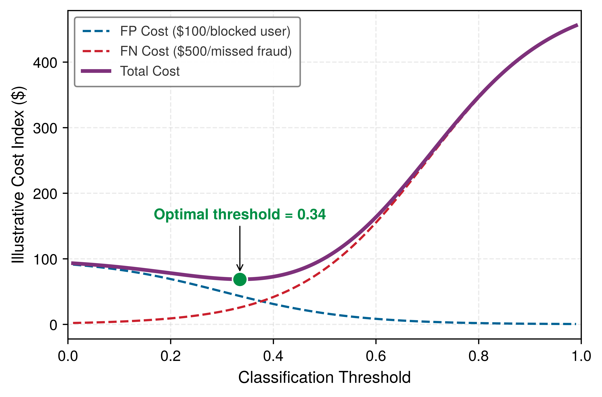
В том же сценарии выявления мошенничества рассмотрим команду, оценивающую предлагаемое обновление модели. Когда заинтересованные стороны запрашивают повышение доли перехваченных мошеннических средств, инженерная команда представляет инициативу как конкретный системный компромисс. Увеличение доли перехваченных мошеннических средств с 92 percent до 94 percent требует интеграции внешних конвейеров признаков, продления обучения на две недели и принятия на 30 percent более высоких затрат на инфраструктуру. Взамен обновление предотвращает, по оценке, $2 million ежегодных потерь от мошенничества, а отдельное допущение о сокращении 20 percent ложных срабатываний убирает 50,000 таких оповещений в месяц. Подача улучшений модели через финансовый эффект, бюджеты задержки и расходы на вычисления связывает управленческие решения с проверяемыми инженерными компромиссами.
Отчёт о состоянии для заинтересованных сторон должен прямо называть доказательства, когда мониторинг обнаруживает дрейф распределения или регрессия инференса вызывает автоматический откат: метрику статистического расхождения, затронутую демографическую или тенантскую когорту, цель канареечного отката и оценочные сроки восстановления. Отмахнуться от аномального распределения выходов как от шума без проверки гипотезы — значит позволить тихому сбою дойти до производственных решений.
Контрольная точка 14.4: От оповещения к подотчётному действию
Реагирование на инциденты, рантбуки отладки и проверки управления завершают операционный контур для отдельной модели, превращая тихие статистические оповещения в закреплённые за исполнителями инженерные действия. Однако развёртывание всех средств этого контура в полной мере в первый день невозможно и нерационально для большинства команд. Чтобы решить, какие пробелы прямо сейчас подвергают развёртывание тихому сбою, а какой инструмент профинансировать следующим, нужна структурированная модель операционной зрелости.
14.8 Эксплуатационная зрелость
Организация, развёртывающая свою первую ML-модель, может полагаться на запуск вручную из Jupyter-ноутбука, cron-задачу по расписанию и минимальный мониторинг. Зрелое предприятие пропускает тысячи моделей через автоматизированные конвейеры с обнаружением дрейфа, канареечными развёртываниями и непрерывной валидацией. Обе занимаются «MLOps», однако кардинально различаются по надёжности, эффективности затрат и скорости развёртывания. Поскольку производственные отказы группируются вокруг зависимостей от данных, границ конвейеров и слепых зон мониторинга, а не вокруг архитектур самих моделей (Paleyes и др. 2022 г.), операционная зрелость даёт системную основу для оценки того, насколько тщательно команда укрепила эти границы по мере перехода от разовых экспериментов к автоматизированной эксплуатации. Определение положения системы на этой шкале лучше направляет распределение ресурсов, чем бездумное внедрение инструментов. Определить положение системы на шкале можно, начав с аудита текущих практик и последовательно задав три вопроса: какая архитектура требуется для следующего уровня, какие организационные и противоаварийные шаблоны удерживают эту архитектуру в рабочем состоянии и сколько стоит этот переход.
14.8.1 Шкала тестирования систем машинного обучения
Аудит шаблонов технического долга из Таблица 6 и созданных для его погашения контролов требует формальной рубрики оценки технического долга, превращающей субъективные споры о готовности в измеримые инженерные критерии. Без сбалансированной рубрика команда может месяцами совершенствовать офлайн-переборы гиперпараметров и модульные тесты модели, не построив производственный мониторинг и проверки схем, — и в итоге получить многонедельный тихий сбой при первом же изменении в вышестоящей базе данных. ML Test Score (Breck и др. 2017 г.) структурирует эту оценку по четырём наборам тестов — данным, модели, инфраструктуре и мониторингу — с семью тестами в каждой из четырёх категорий (всего 28). Задокументированный ручной тест, результаты которого распространяются, получает 0.5 балла, многократно запускаемый автоматизированный тест — 1 балл, невыполненный тест — 0. Вместо усреднения по наборам рубрика устанавливает итоговую оценку равной оценке слабейшей категории:
Три из четырёх наборов разбивают производственный риск по осям D·A·M, а четвёртый наблюдает за всеми тремя. Набор данных (D) проверяет, что распределения признаков соответствуют заявленным схемам, границы приватности не нарушены и каждый признак оправдывает свою задержку (latency) инференса и занимаемый объём памяти. Набор модели (A) подтверждает, что архитектуры и конфигурации гиперпараметров находятся под контролем версий, пределы устаревания соблюдаются, а офлайн-улучшения бенчмарков переходят в прирост живых метрик. Набор инфраструктуры (M) тестирует воспроизводимость обучения при документированных условиях выполнения, паритет обслуживающего пути между конвейерами обучения и инференса и автоматизированные механизмы отката. Набор мониторинга — это слой обратной связи по всем трём осям; он проверяет, что изменения схем, нарушения инвариантов, перекос между обучением и обслуживанием (training-serving skew) и устаревшие веса порождают действенные оповещения, помогающие ограничить влияние на нижестоящие системы. Таблица 23 суммирует репрезентативные тесты по каждой категории:
| Категория | Тест | Пример реализации |
|---|---|---|
| Тесты данных | Ожидания от признаков зафиксированы в схеме | Great Expectations, TFX Data Validation |
| Все признаки полезны (нет неиспользуемых признаков) | Анализ важности признаков, абляционные исследования | |
| Стоимость ни одного признака не превышает его пользу | Анализ компромисса задержка/точность | |
| Конвейер данных имеет надлежащие средства контроля приватности | Обнаружение PII, журналирование доступа | |
| Тесты модели | Спецификация модели проверена и помещена под контроль версий | Конфигурации моделей под управлением Git |
| Офлайн- и онлайн-метрики скоррелированы | A/B-валидация офлайн-улучшений | |
| Все гиперпараметры настроены | Автоматизированный HPO с фиксацией результатов | |
| Устаревание модели измеряется и ограничено | Мониторинг деградации производительности | |
| Тесты инфраструктуры | Обучение воспроизводимо | Фиксированные seed, версионируемые данные, закреплённые зависимости |
| Модель можно откатить к предыдущей версии | Реестр моделей с версионированием | |
| Пути кода обучения и обслуживания протестированы на согласованность | Интеграционные тесты хранилища признаков | |
| Качество модели валидируется перед обслуживанием | Автоматизированные проверки валидации в CI/CD | |
| Тесты мониторинга | Изменения зависимостей приводят к оповещениям | Мониторинг схемы данных |
| Инварианты данных соблюдаются при обучении и обслуживании | Тесты сравнения распределений | |
| Признаки обучения и обслуживания не перекошены | Обнаружение перекоса обучение-обслуживание (training-serving skew) | |
| Устаревание модели отслеживается | Оповещения и пересмотр дообучения на основе доказательств |
Поскольку итоговая оценка ограничена минимальной категорией, аудиты надёжности должны приоритизировать подсистему-узкое место, ограничивающую оценку системы. Расширение набора тестов модели с 5 до 6 баллов при мониторинге на уровне 1 не меняет итоговую оценку, но может улучшить фактическое покрытие. Оценка подсвечивает слабейшую категорию, не квантифицируя каждый выигрыш в надёжности. Регулярные аудиты по этой рубрике выявляют, проистекают ли риски надёжности из невалидированных входных конвейеров, расхождения офлайн- и онлайн-распределений или неинструментированных путей обслуживания, и тем самым направляют рефакторинг на долг, наиболее угрожающий производству. Каждая низкая оценка категории также называет инфраструктуру, погашающую этот долг. Слабая оценка данных требует контрактов схем и общих определений признаков, слабая оценка инфраструктуры — версионируемых и воспроизводимых конвейеров, а слабая оценка мониторинга — производственной телеметрии.
14.8.2 Уровни зрелости
Пока ML Test Score проверяет отдельные проверки верификации, операционная зрелость измеряет, насколько согласованно эти практики сочетаются между конвейерами данных, обучением модели и обслуживающим железом (Zaharia и др. 2018 г.). Внедрение трекера экспериментов вроде MLflow при оставленной в разовых ноутбуках экстракции признаков и выкатке модели копированием файлов вручную повышает количество изолированных тестов, не сокращая производственных сбоев. Хотя операционная зрелость существует как непрерывная шкала, группировка систем по трём отдельным уровням зрелости проясняет, как рабочие процессы эволюционируют от исследовательских прототипов к надёжной производственной инфраструктуре.
На низшем уровне рабочие процессы выполняются ad hoc. Обучение запускается вручную на локальных рабочих станциях, извлечение признаков встроено в эфемерные скрипты, а развёртывание опирается на ручное копирование файлов. С ростом зрелости команды делают рабочие процессы повторяемыми, вводя версионируемые конвейеры, централизованные реестры артефактов и батч-задачи по расписанию. На высшем уровне декларативная инфраструктура как код, конвейеры непрерывной валидации и наблюдаемость в реальном времени делают системы масштабируемыми, отделяя итерации над моделью от производственного обслуживания.
Таблица 24 суммирует эту архитектурную эволюцию от разрозненного исполнения к единому управлению жизненным циклом.
| Уровень зрелости | Характеристики системы | Типичные результаты |
|---|---|---|
| Ad Hoc | Ручная обработка данных, локальное обучение, нет контроля версий, неясная принадлежность | Хрупкие рабочие процессы, трудно воспроизводить и отлаживать |
| Repeatable | Автоматизированные конвейеры обучения, базовый CI/CD, централизованное хранение моделей, частичный мониторинг | Улучшенная воспроизводимость, ограниченная масштабируемость |
| Scalable | Полностью автоматизированные рабочие процессы, интегрированная наблюдаемость, инфраструктура как код, управление | Высокая надёжность, быстрая итерация, производственный ML |
Рассмотрим, как сервис ранжирования эволюционирует по этим уровням зрелости:
- Ad hoc: Специалист по данным обучает модель в Jupyter-ноутбуке, экспортирует её в pickle-файл и передаёт инженеру, который развёртывает её на одном сервере. Когда точность падает, специалист по данным переобучает модель вручную, снова запуская ноутбук на свежих данных. Отладка требует участия исходного специалиста по данным, поскольку никто другой не понимает шаги предобработки.
- Repeatable: Скрипт обучения находится под контролем версий, с запланированной Jenkins-задачей, переобучающей модель ежемесячно. Признаки вычисляются в SQL-скрипте, который инженерия поддерживает отдельно. Модель развёртывается в контейнере с базовым мониторингом точности. При изменении SQL признаков специалист по данным должен вручную проверять, что модель по-прежнему работает.
- Scalable: Обучение и обслуживание используют одно хранилище признаков, снижая перекос. Конвейер CI/CD открывает расследование дрейфа, когда PSI превышает 0.25, дообучает модель, когда есть доказательства, валидирует новую модель против базовой и развёртывает её через канареечный релиз. Мониторинг отслеживает кликабельность (CTR) по когортам, запуская расследование при деградации конкретных сегментов. Вся родословная от сырых данных до производственного предсказания поддаётся аудиту.
ML Test Score и эти уровни отвечают на разные вопросы, и ни один не переводится в другой. Оценка показывает, какая категория проверок слабейшая, а уровень — насколько далеко эти проверки выполняются автоматически и разделяют один конвейер. Команда определяет своё положение, сверяя Таблица 24 со своими практиками, и слабейшая практика — разумный ориентир для этого определения, поэтому сервис с автоматизированным обучением, но вручную проверяемыми признаками относится к уровню repeatable, как сервис ранжирования выше. Слабейшая категория оценки затем называет следующий добавляемый контроль.
Переход между уровнями зрелости требует существенных инженерных вложений, а его отдача — меньшее среднее время восстановления (MTTR) и меньше тихих отказов, что важнее всего для критически важных сервисов. Оценка организации по этой шкале изолирует конкретные архитектурные узкие места (например, ручную передачу данных или неверсионируемую логику предобработки) до того, как они сложатся в производственные сбои.
14.8.3 Следствия для проектирования системы
Описанный выше repeatable-сервис ранжирования уже автоматизировал обучение и развёртывание, однако изменение отдельно поддерживаемого SQL признаков по-прежнему требует ручной валидации. Более частое переобучение увеличило бы нагрузку ручной валидации, не устранив риск рассогласования. Версионируемый контракт признаков и тесты паритета совпадающих запросов решают проблему границы отказа в первую очередь; общее хранилище признаков становится полезным, когда поддержка этого контракта между конвейерами оправдывает дополнительную инфраструктуру. Оценка зрелости, таким образом, подбирает для каждой системы следующий недостающий контроль.
Рисунок 12 даёт карту покрытия для такой оценки. Аптайм сервиса виден на вершине, тогда как отказы здоровья данных и модели могут оставаться скрытыми ниже ватерлинии. Для каждого режима отказа оценка должна определить доказательство, которое его проявляет, и действие, которое его локализует.
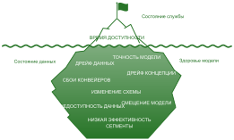
Система, логирующая все три домена здоровья, всё же может не иметь пути реагирования. Если обнаружены устаревшие признаки, но нет валидированного резервного механизма, следующим вложением должна быть локализация. Если исходы качества записываются без версии обслуживаемой модели, атрибуцию нужно починить до того, как автоматическое продвижение сможет на них полагаться. Если канарейка может исчерпать память производственного воркера, изоляция ресурсов важнее ещё одного дашборда. Каждая находка указывает конкретную добавляемую способность и отказ, против которого её нужно тестировать.
14.8.4 Шаблоны проектирования и антишаблоны
Когда оценка зрелости называет недостающий контроль, локализация зависит от владельца, полномочного изменить затронутую систему. Централизованная команда MLOps может поддерживать общие контролы для всех моделей, а федеративная модель помещает инженеров внутрь продуктовых команд под общими архитектурными стандартами. Любая из схем должна разрешить одну и ту же передачу ответственности, определив, кто валидирует резервный механизм, кто может его активировать и кто подтверждает восстановление. Покупка коммерческого хранилища признаков или дашборда дрейфа до урегулирования этой передачи — пример антипаттерна «инструменты прежде всего», оставляющего дежурную команду наблюдать отказ, который она не может локализовать — ни технически, ни по полномочиям.
Когда принадлежность определена явно, остаточный отказ определяет техническую защиту. Сломанные входные данные требуют способа остановить вредоносные предсказания; конкурирующие версии модели требуют изоляции ресурсов. Стоимость этих контролов оправдана содержащейся ими экспозицией, а их эффективность должна проверяться именно против этого отказа.
Автоматический выключатель (circuit breaker) автоматически перенаправляет трафик в обход отказавшего сервиса, когда доля его ошибок превышает порог, а в обслуживании ML ему нужны специфические для ML условия срабатывания. Обычные выключатели срабатывают, когда таймауты RPC или частота ошибок HTTP 5xx превышают установленный порог. В контексте ML-обслуживания выключатели должны также отслеживать инварианты, нарушение которых сигнализирует о сломанных входных данных, а не о постепенном дрейфе: резкие сдвиги границ признаков, доли отсутствующих признаков или коллапс распределения выходов. Постепенные оценки дрейфа, такие как PSI, открывают диагностику, а не приводят к срабатыванию выключателя. При срабатывании выключатель обходит модель и выдаёт прогнозы из детерминированного эвристического запасного варианта, кэшированной таблицы подстановки или более простой базовой модели, не позволяя повреждённым инференсам каскадно распространяться в нижележащие транзакционные системы.
Аналогично паттерны переборки (bulkhead)25 изолируют кандидатные или канареечные модели от основных путей обслуживания. Для сервиса ранжирования переборка должна резервировать полную копию таблиц для канарейки, 100 GB на двух ускорителях (Таблица 11), а не долю, пропорциональную её доле трафика. На мультиарендном аппаратном обеспечении ускорителей ничем не ограниченная экспериментальная модель, столкнувшись с аварийным завершением из-за нехватки памяти, утечкой памяти или исчерпанием пула потоков, может обрушить общий серверный runtime или заблокировать шину PCIe. Лимиты памяти контейнеров, изолированные очереди воркеров и поддерживаемые аппаратные разделы могут локализовать отдельные классы ресурсных отказов. Общая пропускная способность памяти, интерконнекты и отказы на уровне устройств по-прежнему требуют явного анализа и тестирования изоляции.
У избыточности в ML-обслуживании есть жёсткий предел. Реплицирование модели между воркерами защищает от аварийных отказов, но не от неправильных ответов, потому что реплики, обученные на одних и тех же данных с одной и той же архитектурой, разделяют одни и те же слепые зоны и отказывают вместе и молча. Поэтому выключатели, переборки и репликация укрепляют реализацию MLOps только тогда, когда каждый механизм применяется к тому классу отказов, который он действительно способен обнаружить.
Эти паттерны, как и каждая операционная практика в этой главе, должны также адаптироваться к физическим, регуляторным и организационным ограничениям. Стандартный конвейер CI/CD может быть нереализуем без прямого доступа к хосту, мониторинг может требовать косвенных сигналов или обнаружения аномалий на устройстве, а правила конфиденциальности могут ограничивать сбор данных; эти адаптации применяют те же принципы в условиях ограничений. Организации, эксплуатирующие множество ML-узлов, консолидируются в платформенные архитектуры с общей инфраструктурой и централизованным управлением, что порождает задачи, выходящие за рамки одноузловой эксплуатации (распределение ресурсов между моделями, наблюдаемость на уровне системы и отказоустойчивость между взаимозависимыми конвейерами). Надлежащие практики для отдельной модели остаются предпосылкой, поскольку пробелы в мониторинге, тестировании или развёртывании умножаются на всём портфеле моделей, и каждый вводимый контроль для закрытия этих пробелов должен оправдывать свою инженерную и инфраструктурную стоимость.
14.8.5 Экономика инвестиций в MLOps
Эксплуатирует ли организация один ML-узел или общую платформу, операционные контроли окупаются только тогда, когда их стоимость соответствует производственной ценности, находящейся под угрозой. Тратить $100 в год на корпоративное хранилище признаков и автоматизированный конвейер переобучения для внутренней аналитической модели, влияющей на решения на $20, — такая же инженерная ошибка, как и оставление движка ранжирования на $50 без базовых проверок дрейфа.
В предыдущих разделах стоимость каждой операционной контроли оценивалась изолированно: от ежедневных потерь запросов из-за расхождения обучения и обслуживания (Уравнение 2) и горизонта окупаемости автоматизации конвейера (notebook 14.1) до чистой ценности переобучения (Уравнение 3, Уравнение 12), потерь из-за задержки обнаружения (notebook 14.3) и окупаемости мониторинга (Уравнение 7). Превращение этих отдельных показателей в обоснованное инвестиционное решение требует их сведения в рамках единой учётной границы, а не наивного суммирования. Поскольку неустранённое событие расхождения проявляется одновременно как потерянная ценность прогнозов, затянувшийся молчаливый отказ и производственный инцидент, прямое сложение этих оценок учитывало бы один и тот же базовый ущерб несколько раз. Строгий учёт устанавливает общую базовую линию и горизонт оценки, учитывает каждый предотвращённый убыток ровно один раз в основной категории и отделяет экономию рутинного развёртывания от часов экстренного реагирования, уже учтённых в стоимости инцидентов. Для одного ML-узла полученный учёт определяет, оправдывают ли скорость развёртывания, снижение числа инцидентов и покрытие мониторингом операционные расходы; для портфеля та же дисциплина масштабируется для обоснования инвестиций в платформу.
Инвестиции в MLOps для одной модели
Для одной производственной ML-системы первый порог — годовая стоимость того, чтобы сделать узел наблюдаемым, развёртываемым и восстанавливаемым. Таблица 25 обобщает основные категории затрат:
| Компонент | Иллюстративное допущение | Обоснование |
|---|---|---|
| Настройка конвейера CI/CD | $10–30K единовременно | Сокращает время развёртывания с дней до часов |
| Мониторинг и оповещения | $2–10K/год | Сокращает задержки обнаружения и реагирования |
| Хранилище признаков (базовое) | $5–20K/год | Устраняет один источник расхождения обучения и обслуживания |
| Реестр моделей | $0–5K/год | Обеспечивает откат, журналы аудита |
| Инженерное время | 1–2 FTE-месяца настройки | Первоначальная автоматизация и интеграция |
Расчёт ROI для одной модели
Порог окупаемости далее зависит от критичности модели. Модель, влияющая на выручку, может оправдать большие операционные расходы, поскольку предотвращённые инциденты и экономия времени развёртывания имеют измеримую ценность. Уравнение 13 формализует этот одноузловой расчёт, расширяя соотношение выгод/затрат мониторинга из Уравнение 7 вторым членом выгод — инженерным трудом, возвращаемым автоматизацией:
Рассмотрим модель, влияющую на выручку, со следующими годовыми показателями:
- 4 предотвращённых инцидентов/год (по $25K каждый) = $100K сэкономлено
- 20 hours/месяц сэкономленного времени развёртывания (по $150/hr) = $36K сэкономлено
- Инвестиции в MLOps в размере $30K/year
Когда инвестировать больше
Соотношение выгод/затрат 4.53× выполняется потому, что модель достаточно дорога, чтобы предотвращение инцидентов и сокращение развёртываний перевешивали годовые расходы на платформу. Отдача от практик MLOps для отдельной модели растёт, когда команды добавляют новые модели. Переход от эксплуатации нескольких независимых ML-узлов к построению централизованной платформы предполагает совершенно иную экономику, включая амортизацию общей инфраструктуры, накладные расходы платформенной команды и затраты на координацию между моделями.
Для одной модели инвестиции в MLOps должны соответствовать критичности модели. Модель, обеспечивающая $10M годовой выручки, оправдывает большую операционную строгость, чем внутренняя аналитическая модель. Мониторинг, отслеживание происхождения и воспроизводимое развёртывание часто становятся первыми инвестициями. Хранилище признаков оправдывает себя, когда общие определения признаков и согласованность онлайн- и офлайн-вычислений становятся существенной проблемой, а автоматизированное переобучение оправдано только тогда, когда данные подтверждают триггер и цикл валидации способен удержать плохое обновление.
Контрольная точка 14.5: Выбор следующей инвестиции
Согласование операционных расходов с критичностью модели определяет, сколько инфраструктуры может оправдать развёртывание, но физическая и регуляторная среда по-прежнему определяет, что эта инфраструктура может измерять и изменять. Когда операционный контур покидает дата-центр ради микроконтроллера с батарейным питанием или регулируемого клинического процесса (Глава 14.9), бюджеты энергии и человеческий надзор меняют то, как система сохраняет доказательства, валидирует обновления и восстанавливается после отказов.
14.9 Кейс-стади
Поскольку физические характеристики обслуживающего оборудования и последствия неверного прогноза определяют, что развёртывание может наблюдать и изменять, облачный сценарий MLOps немедленно проваливается, если применять его без изменений к голосовому триггеру с батарейным питанием, который не может передавать аудио с устройства, или к клиническому контуру поддержки решений, где непроверенное обновление весов может навредить пациенту. Детектор ключевых слов из этой главы работает в рамках бюджета мощности порядка милливатт, килобайт памяти на устройстве и телеметрии, которая должна покидать устройство в виде агрегатов, а не аудио. Напротив, регулируемые медицинские устройства с ИИ требуют доказательств и контроля изменений, соответствующих их назначению. Руководство FDA по планам предопределённого контроля изменений описывает запланированные модификации, методы валидации и оценку воздействия (U.S. Food and Drug Administration 2025 г.). Эти контрастные среды диктуют, как инженерные команды управляют конвейерами данных, артефактами моделей и аппаратным исполнением на протяжении жизненного цикла. Пограничные архитектуры направляют большую часть инженерных усилий на преодоление разрыва между высокопроизводительными облачными обучающими кластерами и микроконтроллерами, тогда как клинические системы — на отслеживание происхождения, мониторинг когорт и валидационные проверки с участием человека.
Пограничный кейс в Глава 14.9.1 прослеживает детектор ключевых слов от падения метрики обнаружения через развёртывание и мониторинг, повторно используя трёхуровневое разбиение, которое опубликованный дизайн носимого устройства делает конкретным. Клинический кейс, ClinAIOps, помещает клиницистов внутрь операционного контура. Несмотря на контрастные режимы эксплуатации, оба развёртывания должны удовлетворять одним и тем же базовым дисциплинам MLOps. Таблица 26 сопоставляет эти основополагающие принципы в двух средах, показывая, как физические аппаратные ограничения и регуляторные требования меняют механизмы реализации, не меняя сами операционные требования.
| Принцип | Пограничный дизайн детектора ключевых слов | ClinAIOps |
|---|---|---|
| Воспроизводимость | Версионированные аудиодатасеты, DSP-фронтенд и прошивка вместе с весами модели | Журналы аудита, происхождение решений |
| Разделение ответственности | Независимые слои данных, обучения и обслуживания со специфическим для edge OTA-конвейером | Отдельные стадии клинической валидации и развёртывания с изоляцией регуляторного соответствия |
| Согласованность | Одно ядро извлечения признаков, общее для обучения и инференса на устройстве | Стандартизированные клинические конвейеры данных, обеспечивающие согласованность обучения и обслуживания |
| Наблюдаемая деградация | Агрегированные прокси на устройстве (частота срабатываний, отчёты о ложных пробуждениях, рабочий цикл) | Мониторинг по когортам, отслеживание исходов |
| Автоматизация с учётом стоимости | Обновления удерживаются, пока выигрыш в точности не перевесит энергию радиомодуля, износ flash и риск развёртывания | Автоматические обновления модели с ревью с участием человека, балансирующими стоимость обновления и риск для пациента |
14.9.1 Детектирование ключевых слов на периферии
Через шесть месяцев после запуска частота обнаружения детектора ключевых слов упала на четыре процентных пункта ниже целевой из-за трёх молчаливых изменений в Операционное здоровье данных. Это были новая ревизия микрофона с иной частотной характеристикой, пересмотренные метки оценки по новым правилам и необъявленное изменение схемы метаданных устройства. Операции наследуют этот отказ в батарейно-ограниченном кейсе главы. Исправление должно достигать устройств, которых никто не может коснуться, доказательства должны собираться без выгрузки аудио, а плохое обновление должно быть обратимым без отключения устройства.
Контекст и мотивация
Детектирование ключевых слов распределяет вычисления по трём уровням. Микроконтроллер непрерывно выполняет аудио-фронтенд и 200 KB INT8 DS-CNN в своём always-on острове (низкопотребляющем домене чипа, который остаётся активным, пока остальное спит), компаньон-устройство или хаб запускает более тяжёлую модель верификации при срабатывании детектора, а облако агрегирует статистику флота и переобучает.
Это разбиение не уникально для детектирования ключевых слов. Опубликованное носимое устройство для отслеживания сна, Oura Ring, использует те же три уровня, и его опубликованная оценка делает работу каждого уровня конкретной (Altini и Kinnunen 2021 г.). Кольцо захватывает данные акселерометра, оптическую фотоплетизмографию (PPG)26 для пульса и вариабельности сердечного ритма, а также температуру кожи, и его батарея на 15–22 мА·ч исключает непрерывную потоковую передачу через Bluetooth Low Energy (BLE). Предобработка сигналов датчиков и лёгкая классификация активности выполняются в прошивке микроконтроллера кольца, более тяжёлая последовательная модель стадий сна по нескольким датчикам — на телефоне-компаньоне во время периодической синхронизации, а историческая агрегация и переобучение — в облаке. Описанные далее контроли версионирования, телеметрии, обновления по воздуху и жизненного цикла — это дизайн детектора ключевых слов, основанный на этом разбиении, а не отчёт о производственной системе какого-либо вендора.
Разработка и оценка модели
Оценка граничной модели по эталонному стандарту — это тот же шаг, от которого зависит мониторинг детектора ключевых слов. Эталонные метки кольца получены из полисомнографии (PSG),27 лабораторной многоканальной записи физиологических сигналов, используемой как клинический эталон для распределения стадий сна. При оценке кольцо сопоставлялось с одновременной лабораторной PSG для 106 participants и 440 nights данных. При 5-кратной кросс-валидации четырёхстадийная классификация сна достигла точности 57 percent только по движению и 79 percent после добавления признаков пульса и температуры (Altini и Kinnunen 2021 г.) — это то доказательство, которое оправдало более тяжёлую модель телефонного уровня в кольце. Сам эталон несовершенен: люди-расшифровщики PSG согласуются между собой лишь примерно на 82 percent до 83 percent. Прирост в 22 percentage-point закрывает примерно 84.6–88 percent разрыва между базовым уровнем «только движение» и этим человеческим согласием.
Детектор ключевых слов сталкивается с той же задачей оценки, но с более слабым эталоном. Его метки происходят из просмотренных записей, и поскольку устройство загружает аудио только при пробуждении, пропущенное детектором произнесённое кодовое слово вообще не оставляет записи (Обнаружение дрейфа данных и реакция на него). Поэтому измерение ложных отказов, стоящих за падением на четыре пункта, требует отдельного сбора данных с согласия участников, а оценочный набор должен версионалироваться по ревизии микрофона, чтобы изменение аппаратного обеспечения проявлялось как срез, а не усреднялось. Развёртывание переобученной модели по уровням затем добавляет требования, которые не покрывает никакое офлайн-исследование: воспроизводимая квантизация, числовая валидация конвертированной модели на устройстве и бюджет энергии среды исполнения.
Ключевые эксплуатационные выводы
После офлайн-валидации системная задача смещается от статистической точности к безопасности развёртывания и эффективности во время исполнения. Инструментальная цепочка детектора ключевых слов нуждается в автоматизированном конвейере квантизации, конвертирующем веса FP32 в INT8 с калиброванными масштабными коэффициентами, детерминированной кросс-компиляции для прошивки, исполняющей модель, и криптографически подписанных релизных пакетов для каждой аппаратной ревизии. Ей также нужна отказоустойчивая OTA-доставка через схему двух банков из Глава 14.4.4, чьей ценой является второй банк флеш-памяти 200 KB (Таблица 11).
Граничная MLOps работает под физическими ограничениями, отличными от серверных конвейеров. Точность модели должна проектироваться совместно с временем работы от батареи, пропускной способностью радиоканала и объёмом памяти на устройстве, а метки «земля» в реальном времени практически отсутствуют. В строке, ограниченной по энергии, таблицы Таблица 5 мониторинг здоровья опирается на операционные прокси (частоту пробуждений, рабочий цикл, отчёты о ложных пробуждениях и распределения доверия), а не на верифицированные исходы. Восстановление падения детекции на четыре пункта в полевых условиях требует управления конфигурацией по каждому целевому объекту исполнения (ревизия аппаратуры микрофона, DSP-фронтенд, прошивка и квантизованные веса модели), чтобы комбинация каждого развёрнутого устройства была прослеживаемой и получала правильное обновление.
Эти ограничения напрямую ложатся на пять принципов из Таблица 26. Версионированные аудиодатасеты обеспечивают воспроизводимость, связывая каждую развёрнутую модель с записями, правилами разметки и ревизиями микрофонов, на которых она обучалась. Многоуровневая программная архитектура обеспечивает разделение ответственности, изолируя аудиодрайверы и экстрактор признаков устройства от верификационной модели хаба и агрегации в облаке, чтобы прошивка, модель и резервное поведение могли обновляться независимо. Ядро извлечения признаков, общее для обучения и устройства, снижает расхождение реализаций, а тесты паритета проверяют числовое совпадение между конвейером на Python и DSP-подпрограммой устройства по версиям прошивки. Телеметрия с сохранением приватности сохраняет наблюдаемость деградации, отправляя агрегированную диагностику (гистограммы энергии по полосам, счётчики пробуждений, рабочий цикл и расход батареи) без стриминга аудио с устройства. Наконец, экономически осознанная автоматизация применима к обновлению по воздуху, поскольку каждое обновление должно показывать, что выигрыш в точности перевешивает энергию радиоприёма, циклы перезаписи флеш-памяти и риск изменения ПО на устройстве, которое всегда слушает.
Детектор ключевых слов показывает, как милливатты, килобайты и пропускная способность радиоканала диктуют дизайн MLOps. Перенос машинного обучения из потребительских устройств в регулируемое здравоохранение смещает основное ограничение с физики аппаратуры на безопасность пациентов, клиническую валидацию и алгоритмическую подотчётность — операционную область ClinAIOps.
14.9.2 Кейс-стади ClinAIOps
В регулируемой медицинской помощи необзреваемое обновление модели или некалиброванный поток данных датчика в системе мониторинга артериального давления может рекомендовать небезопасную дозу прежде, чем врач увидит карту, смещая определяющее операционное ограничение с физики устройства на безопасность пациента и клиническую ответственность. В непрерывном терапевтическом мониторинге (CTM),28 носимые датчики передают физиологическую телеметрию для направления персонализированных медицинских вмешательств. Универсальные MLOps-фреймворки предоставляют автоматизацию жизненного цикла (оркестрацию конвейеров, отслеживание артефактов и мониторинг доступности). Клиническое применение добавляет требования к доказательствам, надзору и авторизации, специфичным для целевого использования, поскольку прогнозы могут влиять на лечение. Универсальная MLOps может включать шаги человеческого обзора; фреймворк клинических операций делает их ответственность явной. Кейс здесь читается как операционный контур с клиницистами внутри, определяющий, кто может менять модель, на каких доказательствах и как изменение откатывается. Правильны ли цели, которые такая система преследует, и их влияние на пациентов — вопрос ответственности, который развивает Ответственный инжиниринг.
Предложенный фреймворк ClinAIOps (Chen и др. 2023 г.) адаптирует принципы MLOps к этим ограничениям, формализуя границы между алгоритмическим инференсом и клиническим авторитетом. Вместо того чтобы рассматривать человеческий надзор как внешнее препятствие, ClinAIOps встраивает многопартийные контуры обратной связи непосредственно в архитектуру обслуживания. Фреймворк разделяет операционный контроль между тремя участниками (пациенты, клиницисты и инженеры машинного обучения), каждый из которых действует на своём временном масштабе с явными шагами утверждения.
Контуры обратной связи
Три взаимосвязанных контура обратной связи организуют предложенную интеграцию машинного обучения в клиническую практику; их эффективность и безопасность требуют валидации в целевых условиях. Рисунок 13 моделирует эти три взаимосвязанных контура как треугольный протокол между пациентом, клиницистом и разработчиком ИИ. Каждая пара участников обменивается разной информацией в обоих направлениях. Пациент передаёт телеметрию носимых датчиков и получает утверждённые клиницистом терапевтические оповещения. Разработчик ИИ предоставляет сводные данные длительного мониторинга, принимая определённые врачом границы дозирования. Клиницист непосредственно управляет режимами терапии пациента, устанавливая границы безопасности для алгоритмического воздействия. Внешний цикл, соединяющий все три узла, образует всеобъемлющий фреймворк клинического управления.
Каждый контур обратной связи работает на своём временном масштабе, балансируя отзывчивость и клиническую верификацию. Терапевтический контур пациента исполняется непрерывно в реальном времени, собирая телеметрию датчиков и доставляя ограниченные корректировки для самоуправления пациента. С асинхронной надзорной периодичностью контур клинического надзора рассматривает агрегированные тренды, задаёт операционные границы и валидирует рекомендации по лечению до осуществления вмешательств. Наконец, контур обратной связи разработчика агрегирует телеметрию и паттерны врачебных переопределений обратно в инженерные команды, управляя офлайн-переобучением и калибровкой интерфейса.
Терапевтический контур пациента
Терапевтический контур пациента исполняет локализованный инференс над высокочастотными физиологическими потоками, собираемыми носимыми устройствами, такими как мониторы непрерывной глюкозы или оптические датчики пульса. Среда исполнения обслуживания на граничном устройстве оценивает входящие векторы признаков против недавней истории пациента из электронных медицинских карт. В этом предлагаемом дизайне рекомендации следуют многоуровневой модели исполнения как одному из средств безопасности. Незначительные корректировки, строго попадающие в определённые клиницистом границы, передаются пациенту напрямую. Значительные изменения и рекомендации, генерируемые при превышении модельной неопределённостью допустимого порога, блокируются от автоматической доставки и эскалируются клиницисту. Эта структура обеспечивает быструю адаптацию к динамическим физиологическим состояниям в пределах валидированных, авторизованных рабочих границ; эти границы и механизм эскалации должны быть протестированы.
Контур клинического надзора
Контур клинического надзора обеспечивает контроль над автоматическим инференсом. Вместо того чтобы нагружать медперсонал непрерывной сырой телеметрией датчиков, конвейеры батчевой агрегации дистиллируют потоки временных рядов в сводные данные длительного мониторинга, такие как циркадная дисперсия, многодневные тренды и метрики качества сигнала. Когда система генерирует рекомендацию по терапии, например понижение дозы антигипертензивного препарата, клиницист оценивает предложение вместе с диагностическими факторами, не наблюдаемыми носимой моделью, и может одобрить, изменить или отклонить рекомендацию. Это решение записывается в аудируемый журнал событий, который обеспечивает клиническую подотчётность в точке оказания помощи и фиксирует экспертную обратную связь для последующего обзора. Одобрение или переопределение само по себе не является верифицированным исходом для пациента, и его использование в качестве обучающей супервизии требует определённой интерпретации метки и валидации. Клиницисты также обновляют операционные пороги, управляющие терапевтическим контуром пациента, перекалибруя границу между автоматическим руководством и обязательным обзором.
Обратная связь от разработчиков и координация пациента и клинициста
Передача непрерывной записи данных и низкоуровневого обнаружения трендов в AI-конвейер меняет сами отношения между пациентом и клиницистом. Консультации смещаются от рутинного сбора измерений к адресной клинической оценке и постановке целей — результат, который создают вместе контуры пациента и клинициста, — а третий контур, обратная связь от разработчиков, связывает эту клиническую практику с инженерной инфраструктурой. Операционная телеметрия, генерируемая в ходе этих взаимодействий, даёт инженерным командам прямую видимость поведения в продакшене. Переопределения, частота отказов и сообщаемые нежелательные явления побуждают к исследованию поведения модели, соответствия рабочему процессу, состава пациентов и качества сенсоров, хотя сами по себе они не позволяют однозначно диагностировать ковариатный дрейф. Инженеры используют полученные свидетельства, чтобы оценивать адресное дообучение, уточнять схемы валидации данных и устранять режимы отказа в удобстве использования, вызывающие усталость от оповещений у медицинского персонала.
Пример случая: гипертония
В предложенном фреймворке три операционных контура могли бы координировать ведение пациентов с гипертонией. Артериальное давление непрерывно колеблется под влиянием нагрузки, стресса и циркадных ритмов, что требует индивидуальных долгосрочных фармакологических корректировок, которым полезно непрерывное терапевтическое наблюдение.
Инфраструктура данных
Исследовательские системы оценивают артериальное давление косвенно по носимым пульсовым сигналам, таким как фотоплетизмография (PPG) (Zhang и др. 2017 г.). В иллюстративном рабочем процессе эти сигналы дополняются потоками данных акселерометра для выявления артефактов движения и самостоятельно регистрируемыми журналами приёма лекарств. Клиническое применение требует тщательной калибровки и проспективной валидации для целевой задачи, а также любого применимого регуляторного разрешения; само по себе разрешение не устанавливает точность для каждой когорты. При должной валидации для целевой когорты этот мультимодальный поток данных объединяется с электронными медицинскими записями, чтобы снабдить инференс контекстом признаков.
Реализация контуров
Рабочий процесс гипертонии помечает каждую из трёх панелей по двум сторонам обмена (Рисунок 14), поэтому панели не совпадают один-к-одному с тремя контурами Рисунок 13. Панель «пациент—AI» — это контур лечения пациента, панель «клиницист—AI» — контур надзора клинициста, а панель «пациент—клиницист» — координация, которую эти два контура производят вместе. Контур обратной связи от разработчиков работает вне этого отображения, как описано в Глава 14.9.2.1, и не показан.
В верхней части рисунка два контура с поддержкой AI работают параллельно. Панель «пациент—AI» (вверху слева) фиксирует непрерывную телеметрию артериального давления и выдаёт рекомендации по ограниченным корректировкам дозы, а панель «клиницист—AI» (вверху справа) предупреждает врача о тяжёлых гипертензивных отклонениях и принимает обновлённые границы корректировок. Ниже них панель «пациент—клиницист» отражает складывающиеся клинические отношения: рутинная телеметрия, переданная AI-контуру, освобождает консультационные приёмы для просмотра долгосрочных трендов, оценки нежелательных явлений и совместной постановки целей по образу жизни.
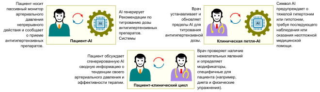
Три панели иллюстрируют предлагаемую границу клинической автоматизации, а не установленный протокол лечения: рутинный мониторинг и ограниченные рекомендации по дозам действуют в пределах валидированных, авторизованных порогов, определённых клиницистом, тогда как острые эскалации, нежелательные явления и изменения схемы лечения требуют явной авторизации человеком. Именно на этой границе обычные практики MLOps требуют дополнительной клинической координации, обобщаемой далее.
Сравнение MLOps и ClinAIOps
Развёртывания в здравоохранении, подобные случаю с гипертонией, операционно отличаются от стандартных программных конвейеров. Универсальный MLOps предоставляет технические средства управления жизненным циклом, такие как автоматизированное тестирование, непрерывная интеграция, реестры моделей и мониторинг дрейфа. ClinAIOps расширяет эту основу на регулируемые клинические среды, где выходы модели непосредственно влияют на медицинские вмешательства. Таблица 27 сравнивает два подхода по восьми операционным измерениям.
| Акцент универсального MLOps | Расширение ClinAIOps | |
|---|---|---|
| Фокус | Технический жизненный цикл модели | Принятие решений человеком и AI |
| Заинтересованные стороны | Команды ML, данных, платформы и операций | Добавляются пациенты, клиницисты и клиническое управление |
| Контуры обратной связи | Мониторинг, дообучение и релиз | Добавляются контуры лечения, клинициста и разработчиков |
| Цель | Надёжные, управляемые ML-операции | Безопасная, эффективная и подотчётная поддержка помощи |
| Процессы | Автоматизированные конвейеры и операционные средства управления | Интеграция клинических рабочих процессов и человеческой проверки |
| Работа с данными | Происхождение, качество, свежесть и контроль доступа | Добавляются согласие, клиническое происхождение и защищённые данные |
| Валидация модели | Предиктивные, операционные и срезовые метрики | Добавляются клиническая полезность, безопасность и исходы когорт |
| Внедрение | Техническая интеграция и операционная ответственность | Добавляются клиническая подотчётность и стимулы заинтересованных сторон |
Центральное различие таблицы состоит в том, что клиническое развёртывание меняет владельца риска. Статистическая точность — необходимое условие, но она не защищает от юридической ответственности, когда ошибочное предсказание определяет медицинское вмешательство. Поэтому фреймворк ClinAIOps меняет доминирующее ограничение с эффективности устройства на клиническую подотчётность. Модель участвует в оказании помощи, но не может владеть клиническими решениями. Каждая рекомендация и последующее действие клинициста должны быть прослеживаемы до исходных сенсорных входов, версии модели и метаданных инференса; иначе система не сможет поддержать регуляторный аудит или ретроспективный анализ инцидентов. Разделение ответственности смещается от архитектурного предпочтения к инварианту безопасности: приём данных сенсоров, инференс-скоринг, клиническая диагностика и обновление параметров должны быть разделены явными программными интерфейсами и шагами человеческого одобрения.
То же требование подотчётности преобразует мониторинг. Стандартизированные клинические конвейеры данных поддерживают parity обучения и обслуживания, но клиническая валидация требует сопоставления рекомендаций модели с исходами стандартной терапии и эффектами, специфичными для когорт. Наблюдаемая деградация выходит за пределы статистических потерь и задержки и охватывает клинические метрики: уровни контроля артериального давления, нежелательные явления, переопределения клиницистами и диспропорции между подгруппами. В этом режиме многоуровневые контуры обратной связи — не нежелательная операционная задержка; это намеренные архитектурные средства управления, балансирующие автоматическую адаптацию на границе сети с юридической и этической подотчётностью. Автоматизация с учётом стоимости действует строго внутри этих границ одобрения. Обновление модели происходит только тогда, когда валидированная клиническая польза превышает затраты на валидацию и риски для пациентов, а предсказания с низкой уверенностью вызывают детерминированный откат к человеческому клиническому рассмотрению.
14.9.3 Синтез кейсов
Кейсы keyword spotter и ClinAIOps отделяют устойчивые принципы MLOps от ограничений развёртывания, которые изменяют их реализацию. Перенос edge-конвейера OTA в больничный рабочий процесс или требование подписи клинициста для каждого потребительского обновления wake-word не работает, потому что принимает доменно-специфичный инструмент за лежащий в основе принцип. Keyword spotter — это случай ограниченного ресурсного бюджета. Его операции должны сохранять воспроизводимость, согласованность и наблюдаемую деградацию, в то время как батарея, телеметрия и слабое эталонное заземление ограничивают то, что можно измерять и обновлять на устройстве. ClinAIOps — это случай границы подотчётности. Те же принципы применимы, но валидация, журналы аудита и человеческая проверка доминируют, потому что модель влияет на клинические действия.
Общий инженерный урок: зрелость MLOps — не накопление инструментов. Это способность определить доминирующее ограничение, выбрать соответствующие ему операционные средства управления и сохранять свидетельства при изменении модели. Продакшен-ML-системы отказывают, когда команды применяют ориентированные на код операционные интуиции, не учитывая статистическое поведение и смещение распределений, что раскрывает типичные заблуждения и операционные ловушки.
Контрольная точка 14.6: Перенос операционных принципов
14.10 Заблуждения и подводные камни
Эксплуатация производственных систем машинного обучения в предположениях обычного программного обеспечения порождает особые режимы отказа — каждый из них является точкой, где стандартная программно-инженерная интуиция ломается о статистическое поведение развёрнутых моделей.
Заблуждение: MLOps — это просто применение традиционных практик DevOps к моделям машинного обучения.
Инженеры часто полагают, что стандартные конвейеры CI/CD переносятся на машинное обучение напрямую. Традиционный DevOps автоматизирует сборку кода, тестирование и развёртывание артефактов с контролем зависимостей и сред исполнения. В ML-системе код — лишь одна из осей триады D·A·M. Исполнение модели зависит совместно от кода, больших эволюционирующих наборов данных и вычислительных бюджетов ускорителей. Как подробно описано в Глава 14.3.2.1, ML-конвейеры привносят отслеживаемое переобучение (stateful retraining), много метрические проверки валидности и неизменяемую регистрацию артефактов. Стандартные движки CI/CD не умеют нативно отслеживать происхождение данных (data lineage), оркестрировать хранилища признаков или обнаруживать дрейф распределений. Когда команды применяют DevOps без ML-специфичных адаптаций, они максимизируют вычислительную доступность кластера обслуживания, оставляя статистическое поведение без мониторинга. Система достигает высокого времени безотказной работы и низкой задержки, но молча выдаёт деградировавшие предсказания из-за непроверенных сдвигов данных и расхождения обучения и обслуживания (training-serving skew). Цена конкретна. Доля скоса 1 percent на 1,000,000 queries/day запросах в день стоит $365,000 в год (Уравнение 2), тогда как все проверки работоспособности DevOps остаются зелёными.
Подводный камень: Считать развёртывание модели разовым событием, а не непрерывным процессом.
Отношение к развёртыванию как к финальной вехе предполагает, что развёрнутые веса навсегда остаются согласованными с входным распределением продакшена. В отличие от скомпилированных бинарников, семантика исполнения которых фиксирована, качество модели может меняться по мере смещения распределений реального мира. Мониторинг статистических индикаторов, таких как PSI (Глава 14.5.2.1), даёт ранний сигнал дрейфа признаков, отличая безобидную вариативность от требующего действий изменения распределения. Пересечение порога предупреждения требует операционной диагностики, а не непроверенного переобучения. Как показано в Глава 14.6.2, планирование обновлений — это задача экономического баланса. Оптимальный интервал переобучения
Заблуждение: Автоматизированное переобучение обеспечивает оптимальное качество модели без человеческого контроля.
Автоматизация исполнения конвейера не устраняет необходимости в операционном управлении. Конвейеры переобучения с замкнутым контуром работают без семантического осознания: если в восходящую загрузку данных попадают аномалии схемы, повреждённые метки или внезапный дрейф сенсоров, автоматическое переобучение запекает эти ошибки прямо в обновлённые веса модели. Более того, автоматические проверки валидации обычно оценивают агрегированную потерю по отложенной тестовой выборке, что легко скрывает серьёзные регрессии качества на критических срезах или редких граничных случаях. Например, переобучение модели ранжирования на трафике выходных дней может ухудшить качество на трафике будних дней, где распределения пользовательских запросов расходятся. Агрегированная проверка это пропустит — так же, как общая точность 91 percent в Таблица 20 скрывает срез планшетов на 62 percent. Устойчивые архитектуры MLOps разделяют автоматическое исполнение конвейера и автоматический вывод в продакшен, требуя канареечных развёртываний, регрессионных тестов на уровне срезов и человеческого подписания, когда метрики валидации отклоняются от ожидаемых исторических границ.
Подводный камень: Сосредоточиться на технической инфраструктуре и пренебречь организационной и процессной согласованностью.
Вложения в инструменты MLOps без определения организационных интерфейсов ведут к раздробленной ответственности за эксплуатацию. Системы машинного обучения соединяют две различные инженерные культуры: разработчиков моделей, оптимизирующих офлайн-метрики точности, и инженеров платформы, управляющих хостовыми задержками, ёмкостью памяти и бюджетами пропускной способности. Когда организация трактует развёртывание как передачу между изолированными командами, триаж первопричин буксует во время инцидентов в продакшене. Инфраструктурные инженеры проверяют здоровье контейнеров и утилизацию GPU без понимания распределений предсказаний модели, а авторы моделей изучают офлайн-кривые обучения, не понимая ограничений обслуживания во время исполнения. ML Test Score (Глава 14.8.1) делает этот разрыв измеримым: развёртывание с идеальным набором модельных тестов и без производственного мониторинга получает 0 по правилу минимальной категории. Инструменты вроде хранилищ признаков и реестров моделей дают технический каркас, но надёжность требует институциональной согласованности: единых SLO, охватывающих статистическую точность и задержку обслуживания, совместных on-call инструкций и общей ответственности за регрессии в продакшене.
Заблуждение: Среды обучения и обслуживания автоматически остаются согласованными, когда конвейеры уже налажены.
Создание начального сквозного конвейера не гарантирует постоянного соответствия между обучением и обслуживанием. Скос обучения-обслуживания (training-serving skew) возникает из фундаментальных архитектурных различий между офлайн- и онлайн-путями исполнения. Обучение обычно работает как офлайн-батч-процесс (например, распределённые SQL-запросы или конвейеры Spark), оптимизированный под высокопропускные сканирования исторических логов, тогда как онлайн-обслуживание работает в микросервисах с низкой задержкой под миллисекундными ограничениями. Поддержание двойных реализаций трансформаций признаков в этих средах рискует численными расхождениями, различной семантикой пропущенных значений или lookahead-смещением в исторических соединениях. На сервисе ранжирования два пути вычисляли user_session_length со средними 45 и 12 минут, и это стоило 8 процентов точности без какого-либо изменения кода модели (Глава 14.3.1.1.2). Как показано в Глава 14.3.1.1, хранилища признаков смягчают это расхождение, унифицируя логику трансформаций и синхронизируя батч-хранилища и хранилища точечных запросов. Однако одни программные конвейеры не могут гарантировать согласованность. Операционная верификация требует сравнений значений по ключу запроса и проверок схемы между офлайн-проигрываниями и онлайн-входами инференса, а также отдельного мониторинга распределений, чтобы обнаружить расхождение до того, как оно ухудшит последующие решения.
Подводный камень: Предполагать, что всесторонний мониторинг предотвращает все производственные инциденты.
Дашборды и пороги оповещений не могут предотвратить остановки продакшена, вызванные беззвучными отказами данных. Мониторинг поставляет доказательства; для сокращения ущерба нужен ещё и ответ. Проверки входных границ могут поймать часть дефектов до инференса, тогда как оценки статистического качества могут прийти уже после того, как затронутые предсказания выданы. Более того, отслеживание только выходных метрик оставляет критические слепые зоны вдоль конвейера данных. Как показано в Глава 14.5.2.1, измерение задержки сервиса и распределений предсказаний не обнаруживает аномалий входа вроде устаревания признаков. Сервис инференса может поддерживать номинальные p99-времена ответа и нормальные диапазоны предсказаний, потребляя при этом устаревшие пользовательские эмбеддинги из-за лага репликации восходящей базы данных или отказов вытеснения из кэша. К моменту деградации нижестоящих бизнес-метрик повреждённые предсказания уже затронули пользователей; проверка входной границы действует на первом же некорректном запросе, не дожидаясь накопления размеченных исходов. Производственная надёжность требует защитных граничных контролей вместе с пассивной наблюдаемостью: строгой проверки входной схемы, проверок свежести признаков и автоматических предохранителей (circuit breakers), переключающихся на детерминированные эвристики, когда качество входа опускается ниже операционных допусков.
Заблуждение: Точность — первый производственный сигнал для мониторинга, поэтому опережающие индикаторы могут подождать на дашборде.
Команды часто настраивают дашборды точности как основной операционный предохранитель, полагая, что деградация зарегистрируется там первой. Когда метки исходов приходят поздно, точность по эталонным меткам — запаздывающий индикатор. В производственных средах вроде обнаружения мошенничества, конверсии рекламы или кредитного андеррайтинга эталонные метки приходят с существенной задержкой, часто требуя недель или месяцев накопления через возвратные платежи или истории погашения. Опора только на дашборды точности оставляет систему слепой на всём протяжении этого окна задержки меток. Более того, агрегированная точность может обманчиво оставаться стабильной, даже когда входные распределения расходятся по критическим подпопуляциям. Как подробно описано в Глава 14.5.2.1, мониторинг распределений входных признаков с метриками вроде PSI или дивергенции Кульбака-Лейблера (KL) даёт индикаторы, которые можно оценивать по достаточным выборкам входа без меток. Эти статистические сигналы обнаруживают сдвиги распределений, не дожидаясь меток, часто позволяя начать расследование до появления запаздывающих метрик исходов — но не гарантируя, что ошибки предсказаний уже не произошли.
Ожидание меток — это медленно, и задержка имеет цену. Тот же бюджет доказательств, который при одном размеченном исходе в секунду заполняется примерно за 16.7 minutes, занимает 10 days при 100 исходах в день. В сценарии беззвучного отказа каждый инцидент, обнаруженный при месячном, а не ежедневном обзоре, стоит на $184,932 больше (ноутбук 14.3). Опережающий индикатор возвращает это время только тогда, когда он направлен владельцу со сроком ответа, правилом эскалации и диагностической инструкцией; предупреждения о дрейфе и свежести, припаркованные на информационном дашборде, копятся незамеченными, пока чрезвычайная ситуация не вынудит реагировать.
Наблюдаемость (observability) в производственном машинном обучении выходит далеко за рамки пассивной телеметрии на дашбордах. Она требует замкнутых операционных контуров во всей архитектуре D·A·M: контроля целостности входных данных и стабильности признаков, ограничения поведения модели автоматизированными проверками валидации и маршрутизации опережающих индикаторов напрямую к инженерам, оснащённым диагностическими инструкциями (runbooks) для расследования изменений и ограничения ущерба.
14.11 Итоги
MLOps расширяет надёжность ПО средствами контроля за обученным поведением, зависимостями от данных и статистической неопределённостью. Отказ сервера или сетевой таймаут мгновенно окрашивают дашборды доступности в красный, предупреждая операторов и побуждая их к корректирующим действиям. Деградировавшая модель, напротив, порождает тихий статистический режим отказа. Инфраструктура обслуживания возвращает ответы 200 OK в пределах дедлайнов задержки, однако качество предсказаний может ухудшаться незамеченным. Операции машинного обучения делают эту деградацию наблюдаемой, рассматривая качество модели как динамическую переменную времени исполнения, а не как статический артефакт развёртывания.
Пять принципов из Таблица 2 образуют систему оценки, применимую вне зависимости от масштаба и предметной области, и каждый из них теперь получил своё место в операционном контуре. Воспроизводимость живёт в версионируемых артефактах и реестре моделей, разделение ответственности — в границах, которые соблюдают релизы и инциденты. Согласованность живёт в общих определениях признаков, проверяемых тестами паритета с ключом запроса, а наблюдаемая деградация — в многоуровневом мониторинге. Автоматизация с учётом стоимости живёт в критерии дообучения и в том интервале, который он задаёт.
Компоненты инфраструктуры реализуют эти принципы на трёх операционных границах. Хранилища признаков (feature stores) и версионирование данных управляют границей «данные—модель», снижая несоответствие обучения и обслуживания. Конвейеры CI/CD и реестры моделей управляют границей «модель—инфраструктура», обеспечивая воспроизводимость и откат. Системы мониторинга, фреймворки реагирования на инциденты и практики дежурств управляют границей «продакшн—мониторинг», делая деградацию наблюдаемой и действенной, а фреймворк принятия решения о дообучении связывает измеренную деградацию с экономическими порогами.
Ограничения предметной области меняют то, как эти принципы реализуются, но не меняют то, какие принципы важны. Сервис ранжирования, ограниченный по ёмкости, платит за безопасные релизы памятью — по второй резидентной копии таблиц эмбеддингов на каждую тень, канарейку или резервную версию — и платит за дообучение ускоритель-часами, конкурирующими с этими копиями. Определитель ключевых слов, ограниченный по энергопотреблению, платит флеш-памятью, энергией радиомодуля и свидетельствами, которые не может выгрузить. Аналогично ClinAIOps демонстрирует, почему высокорисковые клинические развёртывания требуют средств плавной деградации и человеческого контроля, причём три контура обратной связи функционируют как архитектурные паттерны, а не как операционная обуза.
Операционные правила главы умещаются на одной странице (Таблица 28). Вместе они позволяют инженеру оценить — до того, как инцидент поставит этот вопрос, — во что обходится то или иное средство контроля и когда оно себя окупает.
| Величина | Формула | Где выведено |
|---|---|---|
| Skew cost | Уравнение 2 | |
| Retraining criterion | Уравнение 3 | |
| A/B sample size | Уравнение 4 | |
| Detection delay | Требуемое число размеченных примеров, делённое на скорость поступления размеченных исходов | Notebook 14.2 |
| Population stability index | Обнаружение дрейфа данных и реакция на него | |
| Telemetry cost rate | Уравнение 5 | |
| Monitoring benefit and cost | Уравнение 7 | |
| Accuracy decay | Уравнение 8 | |
| Optimal retraining interval | Уравнение 12 |
Основные выводы: Идеальная доступность, идеально неверные ответы
- МЛ-системы отказывают молча без мониторинга исходов: качество модели может деградировать по мере роста расхождения распределений
, хотя само по себе расхождение не определяет величину потери точности. Поскольку хост обслуживания может поддерживать идеальный аптайм, пока предсказания ошибаются, отслеживание исходов по ground truth необходимо — нельзя полагаться лишь на проверки работоспособности сервера. - Несоответствие обучения и обслуживания искажает инференс без падений: хранилища признаков смягчают скью, унифицируя определения признаков и преобразования между средами, но поддержание паритета по-прежнему требует непрерывной валидации по онлайн- и офлайн-конвейерам данных.
- Развёртывайте через поэтапный выкат с заранее проверенным откатом: канареечное, сине-зелёное и теневое развёртывания распределяют риск релиза по продакшн-трафику, опираясь на многоуровневые процедуры отката, которые необходимо проверять регулярными операционными учениями. Для модели, ограниченной по ёмкости, каждое из этих средств удерживает полную вторую копию модели в памяти — какой бы долей трафика она ни обслуживала.
- Дообучение — инженерная оптимизация, а не угадывание: подогнанная модель стоимости устаревания
балансирует вычисления на дообучение против деградации качества предсказаний, связывая частоту обновлений с количественной экономикой при заявленных допущениях. - Этапируйте инфраструктурные вложения по риску системы: инструментирование и непрерывное развёртывание образуют начальный операционный базис. Системы с высокими последствиями оправдывают большую операционную строгость; хранилища признаков и автоматизированное дообучение добавляются по мере требований скью и масштаба.
- Пять принципов переносятся между доменами: воспроизводимость, разделение ответственности, согласованность, наблюдаемая деградация и автоматизация с учётом стоимости остаются инвариантами между приложениями; ограничения домена меняют лишь конкретные механизмы и реализацию инструментов.
- Операционная зрелость организационна так же, как и архитектурна: управление одной моделью качественно отличается от управления производственным парком. Пока базовые принципы масштабируются, операционная сложность растёт с размером парка, делая единые стимулы и общие графики дежурств столь же важными, как и инструменты.
Эта операционная дисциплина отличает производственную ML-инженерию от экспериментов в разработке. Когда развёрнутая модель деградирует, систематическое инструментирование позволяет практикам изолировать режим отказа: выявляя дрейф данных через расхождение распределений, сверяемое с размеченными исходами (принцип «Диагностика статистического дрейфа»), несоответствие обучения и обслуживания — через аудит паритета предобработки (принцип «Диагностика перекоса обучения-обслуживания»), конфигурационный долг — через происхождение артефактов, а контуры обратной связи — через отслеживание выходов во времени. Отношение к производственному ML как к упражнению «развернул и забыл» игнорирует эти особые динамики.
Эта операционная реальность укореняет ML-инженерию в таксономии D·A·M. В МЛ-системе код, веса и аппаратное обеспечение ускорителей могут оставаться неизменными, пока ось данных движется под ними, меняя предсказательное поведение, которое система должна валидировать. Эта уязвимость — обратная сторона «горького урока». Именно поведение, выученное из данных, а не написанное вручную, позволяет этим системам превосходить рукотворные правила; и именно поэтому их поведение меняется всякий раз, когда меняются данные, — и ни одна строка кода не фиксирует это изменение. Соответствие модели миру — не инженерное состояние, достигнутое однажды при развёртывании, а постоянная стоимость, непрерывно оплачиваемая через телеметрию, проверки валидации и дообучение, калиброванное по стоимости. Поэтому надёжность системы должна измеряться исходами предсказаний, а не одним лишь аптаймом серверов, потому что самый опасный режим отказа в продакшне — зелёный дашборд, маскирующий дрейфующую модель. Эта машинерия удерживает модель верной её цели; была ли сама цель правильной — и для кого — следующий вопрос.
Дальнейшие шаги: От надёжности к ответственности
Модель может идеально следовать своей цели обучения и всё равно причинять вред. Она может воспроизводить историческую предвзятость, распределять ошибки между группами или неправильно обращаться с персональными данными, пока каждая проверка надёжности и агрегированная метрика точности остаются зелёными. Ответственный инжиниринг берётся за этот разрыв спецификации, расширяя дисциплину мониторинга этой главы от предсказательного качества к исходам, которые система производит для затрагиваемых ею людей.
использованная литература
Abadi, Martı́n, Paul Barham, Jianmin Chen, и др. 2016 г. «TensorFlow: A System for Large-Scale Machine Learning». Proceedings of the 12th USENIX Symposium on Operating Systems Design and Implementation (OSDI), 265–83. https://www.usenix.org/conference/osdi16/technical-sessions/presentation/abadi.
Altini, Marco, и Hannu Kinnunen. 2021 г. «The Promise of Sleep: A Multi-Sensor Approach for Accurate Sleep Stage Detection Using the Oura Ring». Sensors 21 (13): 4302. https://doi.org/10.3390/s21134302.
Amazon Web Services. 2024 г. AWS Auto Scaling. https://aws.amazon.com/autoscaling/.
Amershi, Saleema, Andrew Begel, Christian Bird, и др. 2019 г. «Software Engineering for Machine Learning: A Case Study». 2019 IEEE/ACM 41st International Conference on Software Engineering: Software Engineering in Practice (ICSE-SEIP), 291–300. https://doi.org/10.1109/icse-seip.2019.00042.
Apache Software Foundation. 2024 г. Apache Airflow. https://airflow.apache.org/.
Authors, Kubeflow. 2024 г. Kubeflow. https://www.kubeflow.org/.
Baylor, Denis, Eric Breck, Heng-Tze Cheng, и др. 2017 г. «TFX: A TensorFlow-Based Production-Scale Machine Learning Platform». Proceedings of the 23rd ACM SIGKDD International Conference on Knowledge Discovery and Data Mining, 1387–95. https://doi.org/10.1145/3097983.3098021.
Beyer, Betsy, Chris Jones, Jennifer Petoff, и Niall Richard Murphy. 2016 г. Site Reliability Engineering: How Google Runs Production Systems. O’Reilly Media. https://sre.google/sre-book/table-of-contents/.
Breck, Eric, Shanqing Cai, Eric Nielsen, Michael Salib, и D. Sculley. 2017 г. «The ML Test Score: A Rubric for ML Production Readiness and Technical Debt Reduction». Proceedings of the 2017 IEEE International Conference on Big Data (Big Data), 1123–32. https://doi.org/10.1109/bigdata.2017.8258038.
Burns, Brendan, Brian Grant, David Oppenheimer, Eric Brewer, и John Wilkes. 2016 г. «Borg, Omega, and Kubernetes». Communications of the ACM 59 (5): 50–57. https://doi.org/10.1145/2890784.
Chen, Andrew, Andy Chow, Aaron Davidson, и др. 2020 г. «Developments in MLflow: A System to Accelerate the Machine Learning Lifecycle». Proceedings of the Fourth International Workshop on Data Management for End-to-End Machine Learning, 1–4. https://doi.org/10.1145/3399579.3399867.
Chen, Emma, Shvetank Prakash, Vijay Janapa Reddi, David Kim, и Pranav Rajpurkar. 2023 г. «A framework for integrating artificial intelligence for clinical care with continuous therapeutic monitoring». Nature Biomedical Engineering 9 (4): 445–54. https://doi.org/10.1038/s41551-023-01115-0.
Chollet, François и др. 2024 г. Keras. https://keras.io/.
Cloud Native Computing Foundation. 2024 г.a. Kubernetes: Production-Grade Container Orchestration. https://kubernetes.io/.
Cloud Native Computing Foundation. 2024 г.b. Prometheus: Monitoring System and Time Series Database. https://prometheus.io/.
Covington, Paul, Jay Adams, и Emre Sargin. 2016 г. «Deep Neural Networks for YouTube Recommendations». Proceedings of the 10th ACM Conference on Recommender Systems, 191–98. https://doi.org/10.1145/2959100.2959190.
Cunningham, Ward. 1992 г. «The WyCash Portfolio Management System». ACM SIGPLAN OOPS Messenger 4 (2): 29–30. https://doi.org/10.1145/157710.157715.
Databricks. 2024 г. MLflow: An Open Source Platform for the Machine Learning Lifecycle. https://mlflow.org/.
David, Robert, Jared Duke, Advait Jain, и др. 2021 г. «TensorFlow Lite Micro: Embedded machine learning for TinyML systems». Proceedings of Machine Learning and Systems 3: 800–811.https://proceedings.mlsys.org/paper_files/paper/2021/hash/6c44dc73014d66ba49b28d483a8f8b0d-Abstract.html .
Deng, Alex, Ya Xu, Ron Kohavi, и Toby Walker. 2013 г. «Improving the Sensitivity of Online Controlled Experiments by Utilizing Pre-Experiment Data». Proceedings of the Sixth ACM International Conference on Web Search and Data Mining (WSDM), 123–32. https://doi.org/10.1145/2433396.2433413.
Elastic NV. 2024 г. Elasticsearch: Distributed Search and Analytics Engine. https://www.elastic.co/elasticsearch.
Engineering, M. 2016 г. Introducing FBLearner Flow: Facebook’s AI backbone. Engineering at Meta Blog.https://engineering.fb.com/2016/05/09/core-infra/introducing-fblearner-flow-facebook-s-ai-backbone/ .
Fowler, Martin. 2014 г. Canary Release. Martin Fowler’s Blog. https://martinfowler.com/bliki/CanaryRelease.html.
Gama, João, Indrė Žliobaitė, Albert Bifet, Mykola Pechenizkiy, и Abdelhamid Bouchachia. 2014 г. «A survey on concept drift adaptation». ACM Computing Surveys 46 (4): 1–37. https://doi.org/10.1145/2523813.
GitHub, Inc. 2024 г.a. GitHub. https://github.com/.
GitHub, Inc. 2024 г.b. GitHub Actions. https://docs.github.com/en/actions.
Gojek, и Google. 2019 г. Feast: An open source feature store for machine learning. Google Cloud Blog.https://cloud.google.com/blog/products/ai-machine-learning/introducing-feast-an-open-source-feature-store-for-machine-learning .
Google Cloud. 2024 г. Vertex AI Model Registry. https://cloud.google.com/vertex-ai/docs/model-registry/introduction.
Google Cloud. 2026 г. MLOps: Continuous Delivery and Automation Pipelines in Machine Learning.https://docs.cloud.google.com/architecture/mlops-continuous-delivery-and-automation-pipelines-in-machine-learning .
HashiCorp. 2014 г. Terraform: Infrastructure as Code. Software available from https://www.terraform.io/. https://github.com/hashicorp/terraform.
Hermann, Jeremy, и Mike Del Balso. 2017 г. Meet Michelangelo: Uber’s Machine Learning Platform. Uber Engineering Blog. https://www.uber.com/blog/michelangelo-machine-learning-platform/.
HumanSignal. 2024 г. Label Studio: Open Source Data Labeling Platform. https://labelstud.io/.
IBM. 2024 г. IBM Watson OpenScale: Data Drift Detection. https://www.ibm.com/docs/en/cloud-paks/cp-data/4.8.x?topic=models-monitoring-drift.
Iterative. 2024 г. Data Version Control (DVC). https://dvc.org/.
Kreuzberger, Dominik, Niklas Kühl, и Sebastian Hirschl. 2023 г. «Machine Learning Operations (MLOps): Overview, Definition, and Architecture». IEEE Access 11: 31866–79. https://doi.org/10.1109/access.2023.3262138.
Labs, Grafana. 2024 г. Grafana. https://grafana.com/.
Lai, Liangzhen, Naveen Suda, и Vikas Chandra. 2018 г. «CMSIS-NN: Efficient Neural Network Kernels for Arm Cortex-M CPUs». ArXiv preprint abs/1801.06601. http://arxiv.org/abs/1801.06601v1.
Merkel, Dirk. 2014 г. «Docker: Lightweight Linux Containers for Consistent Development and Deployment». Linux Journal 2014 (239). https://dl.acm.org/doi/10.5555/2600239.2600241.
MLflow Project. 2026 г. MLflow Model Registry. https://mlflow.org/docs/latest/ml/model-registry/.
Moritz, Philipp, Robert Nishihara, Stephanie Wang, и др. 2018 г. «Ray: A Distributed Framework for Emerging AI Applications». Proceedings of the 13th USENIX Symposium on Operating Systems Design and Implementation (OSDI), 561–77. https://www.usenix.org/conference/osdi18/presentation/nishihara.
Mosseri, Adam. 2018 г. Bringing People Closer Together. Meta Newsroom. https://about.fb.com/news/2018/01/news-feed-fyi-bringing-people-closer-together/.
National Transportation Safety Board. 2017 г. Collision Between a Car Operating With Automated Vehicle Control Systems and a Tractor-Semitrailer Truck Near Williston, Florida, May 7, 2016. HAR-17/02. National Transportation Safety Board. https://www.ntsb.gov/investigations/AccidentReports/Reports/HAR1702.pdf.
Orr, Laurel, Atindriyo Sanyal, Xiao Ling, Karan Goel, и Megan Leszczynski. 2021 г. «Managing ML Pipelines: Feature Stores and the Coming Wave of Embedding Ecosystems». Proceedings of the VLDB Endowment 14 (12): 3178–81. https://doi.org/10.14778/3476311.3476402.
Paleyes, Andrei, Raoul-Gabriel Urma, и Neil D. Lawrence. 2022 г. «Challenges in Deploying Machine Learning: A Survey of Case Studies». ACM Computing Surveys 55 (6): 1–29. https://doi.org/10.1145/3533378.
Papermill Project. 2026 г. Papermill Documentation. https://papermill.readthedocs.io/en/latest/.
Paszke, Adam, Sam Gross, Francisco Massa, и др. 2019 г. «PyTorch: An Imperative Style, High-Performance Deep Learning Library». Advances in Neural Information Processing Systems (NeurIPS) 32: 8024–35. https://proceedings.neurips.cc/paper/2019/hash/bdbca288fee7f92f2bfa9f7012727740-Abstract.html.
Project Jupyter. 2024 г. Project Jupyter. https://jupyter.org/.
Project Jupyter. 2026 г. nbconvert: Convert Notebooks to Other Formats. https://nbconvert.readthedocs.io/en/latest/.
Rainio, Oona, Jarmo Teuho, и Riku Klén. 2024 г. «Evaluation metrics and statistical tests for machine learning». Scientific Reports 14 (1): 6086. https://doi.org/10.1038/s41598-024-56706-x.
Reddi, Vijay Janapa, Christine Cheng, David Kanter, и др. 2019 г. «MLPerf Inference Benchmark». 2020 ACM/IEEE 47th Annual International Symposium on Computer Architecture (ISCA), 446–59. https://doi.org/10.1109/isca45697.2020.00045.
Schelter, Sebastian, Dustin Lange, Philipp Schmidt, Meltem Celikel, Felix Biessmann, и Andreas Grafberger. 2018 г. «Automating Large-Scale Data Quality Verification». Proceedings of the VLDB Endowment 11 (12): 1781–94. https://doi.org/10.14778/3229863.3229867.
scikit-learn developers. 2024 г. sklearn.metrics.confusion_matrix — scikit-learn documentation. Scikit-learn Documentation. https://scikit-learn.org/stable/modules/generated/sklearn.metrics.confusion_matrix.html.
Torvalds, Linus, и Junio Hamano. 2024 г. Git. https://git-scm.com/.
U.S. Food and Drug Administration. 2025 г. Marketing Submission Recommendations for a Predetermined Change Control Plan for Artificial Intelligence-Enabled Device Software Functions. Guidance for Industry and Food and Drug Administration Staff. U.S. Department of Health; Human Services.https://www.fda.gov/regulatory-information/search-fda-guidance-documents/marketing-submission-recommendations-predetermined-change-control-plan-artificial-intelligence .
U.S. Securities and Exchange Commission. 2013 г. «Securities Exchange Act of 1934, Release No. 70694: Knight Capital Americas LLC». https://www.sec.gov/files/litigation/admin/2013/34-70694.pdf.
Warden, Pete, и Daniel Situnayake. 2020 г. TinyML: Machine learning with TensorFlow Lite on Arduino and ultra-low-power microcontrollers. O’Reilly Media.
Widmer, Gerhard, и Miroslav Kubat. 1996 г. «Learning in the Presence of Concept Drift and Hidden Contexts». Machine Learning 23 (1): 69–101. https://doi.org/10.1023/a:1018046501280.
Yao, Huaxiu, Caroline Choi, Bochuan Cao, Yoonho Lee, Pang Wei Koh, и Chelsea Finn. 2022 г. «Wild-Time: A Benchmark of in-the-Wild Distribution Shift over Time». arXiv preprint arXiv:2211.14238. https://arxiv.org/abs/2211.14238.
Yurdakul, Bilal, и Joshua Naranjo. 2020 г. «Statistical properties of the population stability index». The Journal of Risk Model Validation 52. https://doi.org/10.21314/jrmv.2020.227.
Zaharia, Matei, Andrew Chen, Aaron Davidson, и др. 2018 г. «Accelerating the Machine Learning Lifecycle with MLflow». IEEE Data Engineering Bulletin 41 (4): 39–45. http://sites.computer.org/debull/A18dec/p39.pdf.
Zhang, Qingxue, Dian Zhou, и Xuan Zeng. 2017 г. «Highly wearable cuff-less blood pressure and heart rate monitoring with single-arm electrocardiogram and photoplethysmogram signals». BioMedical Engineering OnLine 16 (1): 23. https://doi.org/10.1186/s12938-017-0317-z.
Zillow Group. 2021 г. Zillow Group Reports Third-Quarter 2021 Financial Results and Shares Plan to Wind Down Zillow Offers Operations. Investor Relations Press Release. https://www.sec.gov/Archives/edgar/data/1617640/000161764021000085/z-20211102.htm.
Сноски
Телеметрия: путь обратной связи, способный сделать деградацию модели видимой до того, как она станет бизнес-провалом; крахи и коды ошибок вскрывают лишь некоторые программные сбои, но семантические ошибки могут оставаться незаметными в любом приложении. Системы ML добавляют сдвиг распределения, который может остаться необнаруженным без статистической телеметрии — распределений признаков, уверенности предсказаний и индикаторов дрейфа.↩ Вернуться к тексту
Артефакт: Веса модели — это материализованные результаты обучения; входные данные и случайность, породившие их, в общем случае невозможно восстановить по параметрам. Поэтому версионирования одного кода недостаточно, и даже версионирование кода, данных, конфигурации и окружения может не гарантировать точного воспроизведения, когда ядра или обучение недетерминированы.↩ Вернуться к тексту
Концептуальный дрейф: Исследования концептуального дрейфа и потоков данных формализовали проблему того, что целевая зависимость модели может измениться после развёртывания (Widmer и Kubat 1996 г.; Gama и др. 2014 г.). В adversarial-доменах, таких как обнаружение спама, мошенничества и злоупотреблений, распределение может активно адаптироваться в ответ на модель, делая непрерывный мониторинг и дообучение структурным требованием, а не операционной роскошью.↩ Вернуться к тексту
DVC (Data Version Control): DVC приносит датасетам и артефактам моделей версионирование в духе Git (Iterative 2024 г.), закрывая разрыв артефактов, который формализует Уравнение 1. Без версионирования данных член
невосстановим, и никакая комбинация коммитов кода не позволит реконструировать развернутую модель.↩ Вернуться к тексту Технический долг: метафору долга ввёл Ward Cunningham в отчёте 1992 года о проекте WyCash — как описание скоропалительного кода и отложенного приведения в порядок (Cunningham 1992 г.).↩ Вернуться к тексту
Хранилище признаков: платформа Uber Michelangelo описывала централизованное хранилище признаков для совместного использования и обслуживания признаков в производственных моделях (Hermann и Del Balso 2017 г.). При таком масштабе гарантия согласованности должна соблюдаться в рамках бюджета онлайн-задержки. Хранилище признаков отличается от общей библиотеки кода признаков тем, что его общий путь признаков должен также выдавать свежие признаки достаточно быстро для инференса в реальном времени.↩ Вернуться к тексту
Реестр моделей: Предотвращает «обход реестра» — режим отказа, при котором недокументированная продакшн-модель расходится с обученным артефактом из-за иного препроцессинга, устаревших форматов сериализации или ручных хотфиксов, применённых прямо к конечной точке обслуживания. Без реестра, навязывающего версионированные неизменяемые артефакты с запрашиваемыми метаданными и состояниями, откат требует найти правильные веса в подручном хранилище артефактов под давлением инцидента.↩ Вернуться к тексту
MLflow: Открытый MLOps-фреймворк, который записывает запуски гиперпараметров, хэши бинарников моделей и переходы стадий развёртывания. Ключевой системный компромисс — централизация отслеживания происхождения против узкого места в его хранилище метаданных при массовых параллельных переборах гиперпараметров.↩ Вернуться к тексту
Ray: Распределённая вычислительная платформа (Moritz и др. 2018 г.) с унифицированным интерфейсом задач и акторов. Более широкий урок MLOps: фрагментированная инфраструктура создаёт точки трансляции, где логика препроцессинга, константы нормализации, версии токенизаторов или форматы артефактов могут молча разойтись. Общие абстракции исполнения могут уменьшить эту фрагментацию, но рассогласование обучения и обслуживания всё равно требует явных проверок согласованности по данным, признакам и коду обслуживания.↩ Вернуться к тексту
Идемпотентность: Это свойство гарантирует, что повторный запуск стадии конвейера не создаёт дублирующих внешне видимых эффектов, конфликтующих регистраций или повторных действий по развёртыванию. Производство идентичных моделей из идентичных входов — отдельное свойство (детерминизм и воспроизводимость), и стадия
trainingможет его нарушать из-за случайности, например инициализации весов. Поэтому продакшн-системы сочетают стабильные идентификаторы запусков и атомарную публикацию для идемпотентности с фиксированными случайными зёрнами, детерминированными ядрами, фиксированными версиями библиотек и контролируемым порядком данных для воспроизводимости.↩ Вернуться к текстуML-автомасштабирование: Автомасштабирование подстраивает мощность по сигналам спроса (Amazon Web Services 2024 г.), но обслуживание ML добавляет ограничения, отсутствующие у stateless веб-сервисов. Решения о масштабировании должны учитывать время загрузки модели (накладные расходы холодного старта), фрагментацию памяти GPU и поведение формирования батчей в дополнение к утилизации CPU. Слишком медленное масштабирование вверх нарушает SLO по задержке; слишком агрессивное масштабирование вниз вызывает повторные холодные старты, ухудшающие p99-задержку.↩ Вернуться к тексту
Контейнеризация для развёртывания ML: Docker (Merkel 2014 г.) упаковывает код с зависимостями в переносимые блоки; Kubernetes (Burns и др. 2016 г.) оркестрирует эти блоки по кластерам. Контейнеризация частично покрывает член
в Уравнение 1, захватывая зависимости пользовательского пространства как версионированный артефакт; ядра хоста, драйверы и аппаратура остаются внешними зависимостями.↩ Вернуться к тексту Валидация на staging: ML-staging добавляет статистические проверки качества к обычной функциональной и операционной валидации. Модель может пройти юнит-тесты и всё же отказать в продакшне, потому что тестовые данные не отражают распределение развёртывания, поэтому проверки раскатки должны сравнивать статистики предсказаний, срезы оценивания и бизнес-ограничители с калиброванными порогами, а не полагаться на одни юнит-тесты.↩ Вернуться к тексту
Теневое развёртывание: Экономически оправдано, когда ожидаемое снижение потерь от раскатки превышает стоимость теневой инфраструктуры для дублированного инференса без обслуживания результатов.↩ Вернуться к тексту
Канареечное развёртывание: Специфическая для ML трудность в том, что «отказ» — это статистическая деградация, а не детерминированный сбой: обнаружение малого различия точности с высокой уверенностью может требовать тысяч инференсов, создавая напряжение между скоростью решения и статистической мощностью, определяющее минимальную длительность канарейки.↩ Вернуться к тексту
Сине-зелёное развёртывание: Поддерживает две сопоставимые продакшн-среды — «синюю» (обслуживающую текущий трафик) и «зелёную» (где работает кандидат), — а затем переключает трафик одним изменением маршрутизации, когда зелёная среда проходит валидацию. Поскольку откат — это переключение трафика, а не постепенный слив, восстановление может быть быстрее постепенной канарейки для stateless-сервисов. Расплатой является дополнительная инфраструктура на время переключения, поэтому сине-зелёное выигрывает у канарейки, когда кратковременная дублирующая мощность приемлема, а пофрагментная статистическая валидация дорога.↩ Вернуться к тексту
Откат (из управления транзакциями баз данных): Действие «отмены» для развёртываний в машинном обучении осложняется зависящим от модели состоянием (например, кэшированными эмбеддингами), которое может быть несовместимо между версиями модели. Такое несоответствие может затянуть восстановление и способствовать боязни развёртываний и замедлению итераций.↩ Вернуться к тексту
Prometheus: Prometheus периодически опрашивает цели (scrape) и хранит временные ряды для агрегации. Интервалы опроса и вычисления правил совместно влияют на задержку алертинга и могут пропускать короткие отклонения. Мониторинг температур по каждому ускорителю позволяет точно маршрутизировать нагрузку ценой большего объёма данных, тогда как агрегаты на уровне сервера могут маскировать троттлинг отдельных компонентов.↩ Вернуться к тексту
Обнаружение без меток и с метками: изменение
или распределения предсказаний модели можно оценить по достаточному количеству выборок без меток, хотя обнаружение не происходит мгновенно. Concept drift, как правило, требует размеченных исходов, которые в областях с высокой ценой ошибки (медицинская диагностика, выявление мошенничества, юридические решения) могут появляться через дни, недели или месяцы. Прокси-метрики, такие как распределения уверенности предсказаний и энтропия выходов, могут давать несовершенные ранние предупреждения, разменивая частоту ложных тревог на скорость обнаружения.↩ Вернуться к тексту Ковариативный сдвиг: перевзвешивание обучающих примеров для коррекции ковариативного сдвига предполагает, что каждый вход при развёртывании мог появиться и в обучении, просто с другой вероятностью. Когда развёртывание содержит входы, действительно лежащие вне распределения (новые категории товаров, новые демографические группы, состязательные входы), коррекция может не сработать, и модель может выдавать уверенно неверные выходы без какого-либо сигнала предупреждения. Именно это покрытие является скрытым допущением, определяющим, потребуется ли коррекция дрейфа или полное переобучение.↩ Вернуться к тексту
Валидация по схеме: Правила в Список 3 предотвращают незаметные нарушения контракта данных, например изменение типа признакового столбца с целого на вещественный. Без этой защиты на уровне входных данных модельный мониторинг не сможет отличить ошибку качества данных от настоящего регресса производительности, что маскирует первопричину. Несоответствие схеме в критическом признаке может сделать непригодным в остальном корректно сформированный батч предсказаний.↩ Вернуться к тексту
PSI: PSI широко применяется в мониторинге скоринговых карт кредитного риска для сравнения ожидаемых и наблюдаемых биннированных популяций; Yurdakul и Naranjo анализируют его статистические свойства (Yurdakul и Naranjo 2020 г.). Привычные диапазоны 0.1 и 0.25 — полезные операционные соглашения, а не универсальные статистические законы. ML-операции переняли PSI потому, что он работает с биннированными категориальными или непрерывными признаками и даёт интерпретируемую оценку дрейфа, которую могут просматривать неспециалисты.↩ Вернуться к тексту
Энтропия системы: Название для безмолвной деградации из Когда МЛ-системы выходят из строя незаметно, при которой качество деградирует, пока код и веса остаются неизменными. Подобранная скорость деградации
измеряет, насколько быстро она протекает. Эта скорость может существенно различаться между развёртываниями и должна оцениваться по данным исходов. Более короткий масштаб времени деградации требует более отзывчивого мониторинга, но сам по себе не требует непрерывного обучения; задержка меток, риск валидации, стоимость переобучения и возможности отката определяют операционную периодичность.↩ Вернуться к тексту Период полураспада (из ядерной физики, где он измеряет время, за которое распадается половина радиоактивного образца): В ML-операциях эта метафора — удобное приближение, а не универсальный закон. Для экспоненциальной аппроксимации из Уравнение 8, выводимой ниже, период полураспада равен
. Периодичность переобучения также зависит от трафика, ценности, стоимости переобучения и риска; сезонные, внезапные или состязательные изменения требуют более богатого процесса дрейфа.↩ Вернуться к тексту Паттерн переборки (bulkhead): Этот паттерн разделяет системные ресурсы, чтобы локализовать отказы в изолированных зонах. В ML-обслуживании переборка выделяет фиксированную память ускорителей, ОЗУ хоста и пулы воркер-потоков экспериментальным версиям моделей, так что исчерпание ресурсов канарейкой с меньшей вероятностью завершит основной путь обслуживания; защита зависит от фактически обеспеченной изоляции процессов и оборудования.↩ Вернуться к тексту
Фотоплетизмография (PPG): Оптическая методика, которая оценивает изменения объёма крови по вариациям регистрируемого света после подсветки ткани. Для ML-эксплуатации PPG создаёт проблему качества данных, отсутствующую в контролируемых условиях. Артефакты движения, вызванные движением запястья, искажают сигнал, порождая паттерн дрейфа данных, при котором одно и то же физиологическое состояние даёт разные распределения входных данных в зависимости от активности пользователя. Модели должны либо отфильтровывать искажённые окна до инференса, либо учиться быть устойчивыми к шуму движения, а мониторинг должен отличать подлинные физиологические изменения от вызванного артефактами сдвига распределения.↩ Вернуться к тексту
Полисомнография (PSG): Многопараметрическое исследование сна, которое предоставляет клинические эталонные данные для этой задачи классификации. Эта «истина» по своей природе зашумлена: эксперты-люди, интерпретирующие одни и те же записи PSG, согласуются между собой с надёжностью около 82 percent–83 percent (Altini и Kinnunen 2021 г.). Межэкспертное согласие указывает на неопределённость меток, но не накладывает потолка точности относительно фиксированного или согласованного эталона.↩ Вернуться к тексту
Непрерывный терапевтический мониторинг (CTM): Подход в здравоохранении, использующий носимые датчики для сбора физиологических данных в реальном времени и персонализированной корректировки лечения. CTM заставляет MLOps столкнуться с ограничениями, отсутствующими в типичных развёртываниях: контуры обратной связи требуют надзора, соответствующего целевому использованию, метки обучения нуждаются в клинической валидации, а изменения модели должны следовать применимым требованиям авторизации и управления изменениями. Эти ограничения меняют каждый принцип MLOps, делая CTM стресс-тестом операционной зрелости.↩ Вернуться к тексту